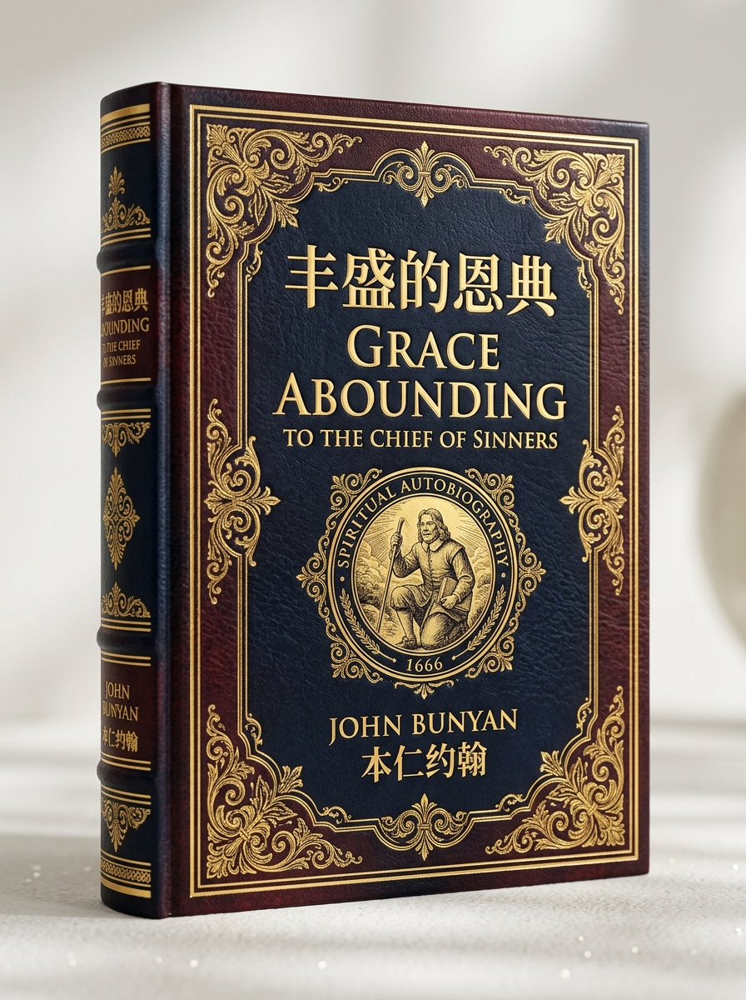

<!DOCTYPE html>
<html lang="zh-CN">
<head>
  <meta charset="UTF-8">
  <meta name="viewport" content="width=device-width, initial-scale=1.0, viewport-fit=cover">
  <title>《丰盛的恩典》中英双语权威典藏版 · 约翰·本仁 (Grace Abounding to the Chief of Sinners by John Bunyan) ｜ Evan's Thinking</title>
  <meta name="description" content="本仁约翰（John Bunyan）清教徒灵修自传经典《丰盛的恩典》（Grace Abounding to the Chief of Sinners）中英双语权威典藏版。按主题大段落深度对照，原生Apple Books排版，完整六卷全本。">
<style>
  :root {
    /* Apple SF System Colors */
    --apple-blue: #0071E3;
    --apple-blue-hover: #0077ED;
    --apple-blue-subtle: rgba(0, 113, 227, 0.08);
    --apple-purple: #AF52DE;
    --apple-purple-subtle: rgba(175, 82, 222, 0.08);
    --apple-teal: #00C7BE;
    --apple-teal-subtle: rgba(0, 199, 190, 0.08);
    --apple-gray: #86868B;
    --apple-gray-light: #F5F5F7;
    
    /* Semantic Theme Tokens - Light Mode */
    --bg-canvas: #F5F5F7;
    --bg-card: #FFFFFF;
    --bg-card-subtle: #F0F2F2;
    --text-primary: #313938;
    --text-secondary: #555E5D;
    --border-color: #E5E7E6;
    --card-shadow: 0 4px 20px rgba(0, 0, 0, 0.05);
    
    --accent-gold: #C98A2C;
    --accent-gold-subtle: rgba(201, 138, 44, 0.12);
    --accent-gold-border: rgba(201, 138, 44, 0.35);
    
    /* macOS Frosted Sidebar */
    --bg-sidebar: rgba(250, 249, 246, 0.94);
    --sidebar-text: #18181B;
    --sidebar-text-muted: #71717A;
    --sidebar-border: rgba(0, 0, 0, 0.07);
    --sidebar-width: 320px;
    
    /* Typography */
    --font-apple: -apple-system, BlinkMacSystemFont, "SF Pro Display", "SF Pro Text", "PingFang SC", "Hiragino Sans GB", "Microsoft YaHei", sans-serif;
    --font-apple-display: -apple-system, BlinkMacSystemFont, "SF Pro Display", "PingFang SC", "Hiragino Sans GB", sans-serif;
    --font-serif: -apple-system, BlinkMacSystemFont, "SF Pro Text", "PingFang SC", "Hiragino Sans GB", sans-serif;
    --font-en: -apple-system, BlinkMacSystemFont, "SF Pro Text", "Helvetica Neue", Arial, sans-serif;
    --reader-fs-zh: 16.5px;
    --reader-lh-zh: 1.9;
    --reader-fs-en: 15.5px;
    --reader-lh-en: 1.8;
  }

  /* Dark Mode (Apple Pro OLED & Titanium) */
  body.theme-dark {
    --bg-canvas: #000000;
    --bg-card: #1C1C1E;
    --bg-card-subtle: #2C2C2E;
    --text-primary: #F5F5F7;
    --text-secondary: #98989D;
    --border-color: rgba(255, 255, 255, 0.12);
    --card-shadow: 0 8px 32px rgba(0, 0, 0, 0.5);
    
    --bg-sidebar: rgba(28, 28, 30, 0.9);
    --sidebar-text: #F5F5F7;
    --sidebar-text-muted: #98989D;
    --sidebar-border: rgba(255, 255, 255, 0.1);
    
    --apple-blue: #2997FF;
    --apple-blue-subtle: rgba(41, 151, 255, 0.15);
  }

  /* Sepia Mode (Apple Books Paper Reading Theme) */
  body.theme-sepia {
    --bg-canvas: #FAF4E8;
    --bg-card: #F4ECDF;
    --bg-card-subtle: #EDE3D4;
    --text-primary: #383127;
    --text-secondary: #7E7060;
    --border-color: rgba(126, 112, 96, 0.15);
    --card-shadow: 0 4px 20px rgba(126, 112, 96, 0.08);
    
    --bg-sidebar: rgba(244, 236, 223, 0.94);
    --sidebar-text: #383127;
    --sidebar-text-muted: #7E7060;
    --sidebar-border: rgba(126, 112, 96, 0.15);
    
    --apple-blue: #8E5A2D;
    --apple-blue-subtle: rgba(142, 90, 45, 0.12);
  }

  *, *::before, *::after {
    box-sizing: border-box;
    -webkit-tap-highlight-color: transparent;
  }
  html {
    scroll-behavior: smooth;
    font-size: 16px;
    max-width: 100vw;
    overflow-x: hidden;
  }

  body {
    font-family: var(--font-apple);
    background-color: var(--bg-canvas);
    color: var(--text-primary);
    line-height: 1.8;
    margin: 0;
    padding: 0;
    display: flex;
    max-width: 100vw;
    overflow-x: hidden;
    transition: background-color 0.3s ease, color 0.3s ease;
    -webkit-font-smoothing: antialiased;
    -moz-osx-font-smoothing: grayscale;
    text-rendering: optimizeLegibility;
  }

  /* Smooth Scrollbars */
  ::-webkit-scrollbar {
    width: 8px;
    height: 8px;
  }
  ::-webkit-scrollbar-track {
    background: transparent;
  }
  ::-webkit-scrollbar-thumb {
    background: rgba(0, 0, 0, 0.18);
    border-radius: 9999px;
    border: 2px solid transparent;
    background-clip: content-box;
  }
  ::-webkit-scrollbar-thumb:hover {
    background: rgba(0, 0, 0, 0.35);
  }
  body.theme-dark ::-webkit-scrollbar-thumb {
    background: rgba(255, 255, 255, 0.2);
  }

  /* Top Progress Bar */
  #progress-bar {
    position: fixed;
    top: 0;
    left: 0;
    height: 3px;
    background: linear-gradient(90deg, #0071E3, #AF52DE, #00C7BE);
    width: 0%;
    z-index: 1001;
    transition: width 0.1s ease-out;
  }

  /* macOS Frosted Sidebar */
  #sidebar {
    width: var(--sidebar-width);
    height: 100vh;
    background: var(--bg-sidebar);
    backdrop-filter: blur(25px) saturate(180%);
    -webkit-backdrop-filter: blur(25px) saturate(180%);
    color: var(--sidebar-text);
    position: fixed;
    top: 0;
    left: 0;
    overflow-y: auto;
    padding: 20px 14px 80px 14px;
    z-index: 100;
    border-right: 1px solid var(--sidebar-border);
    box-shadow: 2px 0 20px rgba(0,0,0,0.03);
    transition: transform 0.35s cubic-bezier(0.16, 1, 0.3, 1);
  }
  #sidebar.collapsed {
    transform: translateX(-100%);
  }

  /* macOS Traffic Light Window Controls */
  .mac-window-controls {
    display: flex;
    align-items: center;
    gap: 8px;
    margin-bottom: 18px;
    padding-left: 2px;
  }
  .mac-dot {
    width: 12px;
    height: 12px;
    border-radius: 50%;
    display: inline-block;
    cursor: pointer;
    transition: transform 0.15s ease, opacity 0.15s ease;
  }
  .mac-dot:hover {
    transform: scale(1.15);
  }
  .mac-close { background: #FF5F56; border: 0.5px solid rgba(0,0,0,0.15); }
  .mac-minimize { background: #FFBD2E; border: 0.5px solid rgba(0,0,0,0.15); }
  .mac-maximize { background: #27C93F; border: 0.5px solid rgba(0,0,0,0.15); }
  .mac-window-title {
    font-size: 11.5px;
    font-weight: 600;
    color: var(--sidebar-text-muted);
    margin-left: 6px;
    letter-spacing: -0.01em;
  }

  .sidebar-header {
    padding-bottom: 14px;
    border-bottom: 1px solid var(--sidebar-border);
    margin-bottom: 14px;
  }
  .sidebar-badge {
    font-size: 11px;
    background: var(--apple-blue-subtle);
    color: var(--apple-blue);
    padding: 2px 8px;
    border-radius: 9999px;
    font-weight: 600;
    display: inline-block;
    margin-bottom: 6px;
    letter-spacing: 0.02em;
  }
  .sidebar-title {
    font-size: 16px;
    font-weight: 700;
    color: var(--sidebar-text);
    margin: 0 0 4px 0;
    letter-spacing: -0.015em;
    line-height: 1.35;
  }
  .sidebar-subtitle {
    font-size: 11.5px;
    color: var(--sidebar-text-muted);
    margin: 0;
  }

  .search-box {
    margin-bottom: 14px;
  }
  .search-input {
    width: 100%;
    padding: 8px 12px;
    background: rgba(0, 0, 0, 0.05);
    border: 1px solid rgba(0, 0, 0, 0.04);
    border-radius: 10px;
    color: var(--sidebar-text);
    font-size: 13px;
    font-family: var(--font-apple);
    outline: none;
    transition: all 0.2s cubic-bezier(0.16, 1, 0.3, 1);
  }
  .search-input:focus {
    background: var(--bg-card);
    border-color: var(--apple-blue);
    box-shadow: 0 0 0 3px var(--apple-blue-subtle);
  }
  body.theme-dark .search-input {
    background: rgba(255, 255, 255, 0.08);
    border-color: rgba(255, 255, 255, 0.1);
  }

  /* Sidebar Portal Links */
  .sidebar-portal-nav {
    margin-bottom: 14px;
    padding-bottom: 12px;
    border-bottom: 1px solid var(--sidebar-border);
    display: flex;
    flex-direction: column;
    gap: 8px;
  }
  .sidebar-portal-btn {
    display: flex;
    align-items: center;
    justify-content: space-between;
    padding: 8px 12px;
    border-radius: 10px;
    font-size: 12.5px;
    font-weight: 600;
    color: var(--apple-blue);
    background: var(--apple-blue-subtle);
    border: 1px solid rgba(0, 113, 227, 0.15);
    text-decoration: none;
    transition: all 0.2s cubic-bezier(0.16, 1, 0.3, 1);
  }
  .sidebar-portal-btn:hover {
    background: var(--apple-blue);
    color: #FFFFFF;
    box-shadow: 0 4px 12px rgba(0, 113, 227, 0.25);
    transform: translateY(-1px);
  }
  .portal-btn-arrow {
    font-size: 13px;
    transition: transform 0.2s ease;
  }
  .sidebar-portal-btn:hover .portal-btn-arrow {
    transform: translateX(3px);
  }

  /* Sidebar Mobile Header Bar */
  .sidebar-top-bar {
    display: flex;
    align-items: center;
    justify-content: space-between;
  }
  .sidebar-mobile-close {
    display: none;
    background: rgba(0, 0, 0, 0.08);
    border: none;
    border-radius: 50%;
    width: 28px;
    height: 28px;
    color: var(--text-primary);
    font-size: 13px;
    cursor: pointer;
    align-items: center;
    justify-content: center;
  }
  body.theme-dark .sidebar-mobile-close {
    background: rgba(255, 255, 255, 0.15);
    color: #FFFFFF;
  }

  /* Mobile Sidebar Backdrop */
  .sidebar-backdrop {
    display: none;
    position: fixed;
    top: 0;
    left: 0;
    width: 100vw;
    height: 100vh;
    background: rgba(0, 0, 0, 0.38);
    backdrop-filter: blur(4px);
    -webkit-backdrop-filter: blur(4px);
    z-index: 99;
    opacity: 0;
    pointer-events: none;
    transition: opacity 0.3s ease;
  }
  .sidebar-backdrop.active {
    display: block;
    opacity: 1;
    pointer-events: auto;
  }

  /* Navigation List */
  .nav-list {
    list-style: none;
    padding: 0;
    margin: 0;
  }
  .nav-item {
    margin-bottom: 4px;
    border-radius: 10px;
    padding: 7px 10px;
    transition: all 0.18s cubic-bezier(0.16, 1, 0.3, 1);
  }
  .nav-item:hover {
    background: rgba(0, 0, 0, 0.04);
  }
  body.theme-dark .nav-item:hover {
    background: rgba(255, 255, 255, 0.06);
  }
  .nav-item.active {
    background: var(--apple-blue);
    box-shadow: 0 2px 10px rgba(0, 113, 227, 0.25);
  }
  .nav-item.active .nav-title,
  .nav-item.active .nav-en,
  .nav-item.active .nav-num {
    color: #FFFFFF !important;
  }
  .nav-link {
    display: flex;
    align-items: center;
    color: var(--sidebar-text);
    text-decoration: none;
    gap: 10px;
  }
  .nav-num {
    background: rgba(0, 0, 0, 0.05);
    color: var(--sidebar-text-muted);
    font-size: 11px;
    font-weight: 700;
    padding: 2px 7px;
    border-radius: 9999px;
    min-width: 26px;
    text-align: center;
  }
  body.theme-dark .nav-num {
    background: rgba(255, 255, 255, 0.08);
  }
  .nav-item.active .nav-num {
    background: rgba(255, 255, 255, 0.25);
    color: #FFFFFF;
  }
  .nav-link-content {
    flex: 1;
    min-width: 0;
  }
  .nav-title {
    font-size: 13.5px;
    font-weight: 600;
    white-space: nowrap;
    overflow: hidden;
    text-overflow: ellipsis;
    letter-spacing: -0.01em;
  }
  .nav-en {
    font-size: 11px;
    color: var(--sidebar-text-muted);
    white-space: nowrap;
    overflow: hidden;
    text-overflow: ellipsis;
  }

  /* Main Content Canvas */
  #main-content {
    margin-left: var(--sidebar-width);
    flex: 1;
    min-width: 0;
    width: 100%;
    max-width: 1540px;
    padding: 40px 48px 120px 48px;
    min-height: 100vh;
    box-sizing: border-box;
    overflow-x: hidden;
    transition: margin-left 0.35s cubic-bezier(0.16, 1, 0.3, 1), max-width 0.35s ease;
  }
  #main-content.expanded {
    margin-left: 0;
    max-width: 1600px;
    margin-right: auto;
    margin-left: auto;
  }
  body.view-zh-only #main-content,
  body.view-en-only #main-content {
    max-width: 980px;
  }

  /* Top Floating Capsule Toolbar */
  .top-toolbar {
    position: fixed;
    top: 14px;
    right: 24px;
    display: flex;
    align-items: center;
    gap: 4px;
    z-index: 1000;
    background: rgba(255, 255, 255, 0.85);
    backdrop-filter: blur(24px) saturate(180%);
    -webkit-backdrop-filter: blur(24px) saturate(180%);
    padding: 5px 8px;
    border-radius: 9999px;
    box-shadow: 0 10px 30px rgba(0, 0, 0, 0.08), 0 1px 3px rgba(0, 0, 0, 0.04);
    border: 1px solid rgba(0, 0, 0, 0.08);
    transition: transform 0.35s cubic-bezier(0.16, 1, 0.3, 1), opacity 0.25s ease;
    transform: translateY(0);
    opacity: 1;
  }
  body.theme-dark .top-toolbar {
    background: rgba(30, 30, 32, 0.85);
    border: 1px solid rgba(255, 255, 255, 0.15);
    box-shadow: 0 12px 36px rgba(0, 0, 0, 0.5);
  }
  body.theme-sepia .top-toolbar {
    background: rgba(244, 236, 223, 0.9);
    border: 1px solid rgba(126, 112, 96, 0.2);
  }
  .top-toolbar.toolbar-hidden {
    transform: translateY(-160%);
    opacity: 0;
    pointer-events: none;
  }
  .toolbar-divider {
    width: 1px;
    height: 16px;
    background: rgba(0, 0, 0, 0.1);
    margin: 0 3px;
  }
  body.theme-dark .toolbar-divider {
    background: rgba(255, 255, 255, 0.15);
  }
  .tool-btn {
    background: transparent;
    border: none;
    color: var(--text-primary);
    font-size: 12.5px;
    font-weight: 500;
    font-family: var(--font-apple);
    cursor: pointer;
    padding: 6px 11px;
    border-radius: 9999px;
    display: inline-flex;
    align-items: center;
    gap: 4px;
    transition: all 0.18s cubic-bezier(0.16, 1, 0.3, 1);
    white-space: nowrap !important;
    text-decoration: none;
  }
  .tool-btn:hover {
    background: rgba(0, 0, 0, 0.06);
  }
  body.theme-dark .tool-btn:hover {
    background: rgba(255, 255, 255, 0.1);
  }
  .tool-btn.active {
    background: var(--apple-blue);
    color: #FFFFFF;
    font-weight: 600;
    box-shadow: 0 2px 8px rgba(0, 113, 227, 0.3);
  }

  /* Floating Trigger */
  .toolbar-trigger-btn {
    position: fixed;
    top: 14px;
    right: 20px;
    z-index: 999;
    background: rgba(0, 0, 0, 0.82);
    backdrop-filter: blur(20px);
    -webkit-backdrop-filter: blur(20px);
    color: #FFFFFF;
    border: 1px solid rgba(255, 255, 255, 0.2);
    border-radius: 9999px;
    padding: 7px 16px;
    font-size: 12.5px;
    font-weight: 600;
    cursor: pointer;
    box-shadow: 0 8px 24px rgba(0,0,0,0.22);
    display: none;
    align-items: center;
    gap: 6px;
  }
  .toolbar-trigger-btn.trigger-visible {
    display: flex;
  }
  .toolbar-trigger-btn:hover {
    background: var(--apple-blue);
  }
  .trigger-dot {
    width: 6px;
    height: 6px;
    background: #34C759;
    border-radius: 50%;
    display: inline-block;
  }

  /* Cover Banner Card */
  .cover-card {
    background: transparent;
    color: var(--text-primary);
    padding: 30px 0 44px 0;
    margin-bottom: 40px;
    border-bottom: 1px solid var(--border-color);
    min-width: 0;
    max-width: 100%;
    box-sizing: border-box;
  }
  .cover-layout {
    display: flex;
    align-items: flex-start;
    gap: 40px;
  }
  .cover-img-col {
    flex-shrink: 0;
    width: 220px;
  }
  .cover-img {
    width: 100%;
    border-radius: 14px;
    box-shadow: 0 12px 36px rgba(0, 0, 0, 0.16);
    border: 1px solid rgba(0, 0, 0, 0.08);
  }
  .cover-info-col {
    flex: 1;
    min-width: 0;
  }
  .cover-badge {
    display: inline-block;
    background: var(--apple-blue-subtle);
    color: var(--apple-blue);
    border: 1px solid rgba(0, 113, 227, 0.2);
    font-size: 11.5px;
    font-weight: 600;
    padding: 4px 14px;
    border-radius: 9999px;
    margin-bottom: 14px;
    letter-spacing: 0.04em;
    text-transform: uppercase;
  }
  .cover-title {
    font-family: var(--font-apple-display);
    font-size: 34px;
    font-weight: 700;
    letter-spacing: -0.028em;
    line-height: 1.25;
    margin: 0 0 10px 0;
    color: var(--text-primary);
  }
  .cover-subtitle {
    font-size: 17px;
    color: var(--text-secondary);
    margin: 0 0 18px 0;
    font-weight: 400;
    letter-spacing: -0.01em;
  }
  .cover-meta {
    font-size: 14px;
    color: var(--text-secondary);
    line-height: 1.75;
    margin: 0 0 20px 0;
    border-top: 1px solid var(--border-color);
    padding-top: 16px;
  }
  .tag-row {
    display: flex;
    flex-wrap: wrap;
    gap: 8px;
    margin-bottom: 22px;
  }
  .theology-tag {
    background: rgba(0, 0, 0, 0.04);
    border: 1px solid rgba(0, 0, 0, 0.08);
    color: var(--text-primary);
    font-size: 12px;
    font-weight: 500;
    padding: 4px 12px;
    border-radius: 9999px;
  }
  body.theme-dark .theology-tag {
    background: rgba(255, 255, 255, 0.08);
    border-color: rgba(255, 255, 255, 0.15);
  }
  .cover-action-row {
    display: flex;
    flex-wrap: wrap;
    align-items: center;
    gap: 12px;
    padding-top: 18px;
    border-top: 1px solid var(--border-color);
  }
  .cover-action-btn {
    display: inline-flex;
    align-items: center;
    gap: 8px;
    padding: 9px 20px;
    border-radius: 9999px;
    font-size: 13.5px;
    font-weight: 600;
    text-decoration: none;
    transition: all 0.22s cubic-bezier(0.16, 1, 0.3, 1);
  }
  .cover-start-btn {
    background: var(--apple-blue);
    color: #FFFFFF;
    box-shadow: 0 2px 10px rgba(0, 113, 227, 0.3);
  }
  .cover-start-btn:hover {
    background: #0077ED;
    transform: translateY(-2px);
  }
  .cover-portal-btn {
    background: var(--apple-blue-subtle);
    color: var(--apple-blue);
    border: 1px solid rgba(0, 113, 227, 0.2);
  }
  .cover-portal-btn:hover {
    background: var(--apple-blue);
    color: #FFFFFF;
    transform: translateY(-2px);
  }

  /* Directory Card Grid */
  .grid-section {
    margin-bottom: 60px;
    min-width: 0;
    max-width: 100%;
    box-sizing: border-box;
  }
  .section-heading-row {
    display: flex;
    align-items: baseline;
    justify-content: space-between;
    margin-bottom: 20px;
    border-bottom: 1px solid var(--border-color);
    padding-bottom: 12px;
  }
  .section-h2 {
    font-size: 20px;
    font-weight: 700;
    margin: 0;
    color: var(--text-primary);
    letter-spacing: -0.02em;
  }
  .section-h2-sub {
    font-size: 13px;
    color: var(--text-secondary);
  }
  .dir-grid {
    display: grid;
    grid-template-columns: repeat(auto-fill, minmax(280px, 1fr));
    gap: 16px;
    min-width: 0;
    max-width: 100%;
  }
  .grid-card {
    background: transparent;
    border: 1px solid var(--border-color);
    border-radius: 16px;
    padding: 20px 22px;
    text-decoration: none;
    color: inherit;
    transition: all 0.25s cubic-bezier(0.16, 1, 0.3, 1);
    display: flex;
    flex-direction: column;
    min-width: 0;
  }
  .grid-card:hover {
    transform: translateY(-2px);
    border-color: rgba(0, 113, 227, 0.5);
    background: rgba(0, 113, 227, 0.02);
    box-shadow: 0 8px 24px rgba(0, 113, 227, 0.12);
  }
  .grid-card-num {
    font-size: 11px;
    font-weight: 700;
    color: var(--apple-blue);
    background: var(--apple-blue-subtle);
    display: inline-block;
    padding: 2px 8px;
    border-radius: 9999px;
    width: fit-content;
    margin-bottom: 8px;
    letter-spacing: 0.05em;
  }
  .grid-card-title {
    font-size: 15.5px;
    font-weight: 600;
    color: var(--text-primary);
    margin-bottom: 4px;
    line-height: 1.35;
  }
  .grid-card-en {
    font-size: 12px;
    color: var(--text-secondary);
    margin-bottom: 10px;
    line-height: 1.3;
  }
  .grid-card-desc {
    font-size: 13px;
    color: var(--text-secondary);
    line-height: 1.55;
    margin-top: auto;
  }

  /* Article Containers */
  .article-section {
    background: var(--bg-card);
    border-radius: 20px;
    border: 1px solid var(--border-color);
    padding: 38px 40px;
    margin-bottom: 40px;
    box-shadow: var(--card-shadow);
    transition: background-color 0.3s ease, border-color 0.3s ease;
    min-width: 0;
    max-width: 100%;
    box-sizing: border-box;
    overflow-wrap: anywhere;
    word-break: break-word;
  }
  .article-top-nav {
    display: flex;
    align-items: center;
    gap: 8px;
    font-size: 12.5px;
    margin-bottom: 24px;
    padding-bottom: 14px;
    border-bottom: 1px solid var(--border-color);
    color: var(--text-secondary);
    flex-wrap: wrap;
  }
  .article-back-home {
    display: inline-flex;
    align-items: center;
    gap: 5px;
    color: var(--apple-blue);
    text-decoration: none;
    font-weight: 600;
    padding: 3px 8px;
    border-radius: 6px;
    background: var(--apple-blue-subtle);
  }
  .article-nav-sep {
    opacity: 0.4;
  }
  .article-nav-crumb {
    white-space: nowrap;
    overflow: hidden;
    text-overflow: ellipsis;
    text-decoration: none;
    color: var(--text-secondary);
  }
  .article-nav-crumb:hover {
    color: var(--apple-blue);
  }
  .article-nav-cur {
    font-weight: 600;
  }

  .article-header-wrapper {
    margin-bottom: 30px;
    padding-bottom: 22px;
    border-bottom: 1px solid var(--border-color);
  }
  .article-badge-row {
    display: flex;
    align-items: center;
    gap: 10px;
    margin-bottom: 12px;
  }
  .article-badge {
    background: var(--apple-blue-subtle);
    color: var(--apple-blue);
    font-size: 11.5px;
    font-weight: 700;
    padding: 4px 12px;
    border-radius: 9999px;
    letter-spacing: 0.04em;
    text-transform: uppercase;
  }
  .article-badge-sub {
    font-size: 12.5px;
    color: var(--text-secondary);
    font-weight: 500;
  }

  /* Bilingual Headers Grid */
  .bilingual-header-grid {
    display: grid;
    grid-template-columns: minmax(0, 1fr) minmax(0, 1fr);
    gap: 36px;
    min-width: 0;
    max-width: 100%;
  }
  .article-title {
    font-family: var(--font-apple-display);
    font-size: 26px;
    font-weight: 700;
    color: var(--text-primary);
    margin: 0;
    letter-spacing: -0.025em;
    line-height: 1.3;
    min-width: 0;
    overflow-wrap: anywhere;
    word-break: break-word;
  }
  .article-title-en {
    font-size: 22px;
    font-weight: 600;
    color: var(--text-secondary);
    margin: 0;
    letter-spacing: -0.015em;
    line-height: 1.35;
    min-width: 0;
    overflow-wrap: anywhere;
    word-break: break-word;
  }

  /* Bilingual Rows Architecture (Locked-Row Alignment) */
  .bilingual-rows-wrapper {
    display: flex;
    flex-direction: column;
    gap: 0;
    margin-bottom: 24px;
    min-width: 0;
    max-width: 100%;
  }

  .bilingual-row {
    display: grid;
    grid-template-columns: minmax(0, 1fr) minmax(0, 1fr);
    gap: 36px;
    align-items: start;
    padding-top: 20px;
    padding-bottom: 24px;
    border-bottom: 1px solid rgba(0, 0, 0, 0.06);
    transition: background-color 0.18s ease;
    min-width: 0;
    max-width: 100%;
  }
  .bilingual-row:first-child {
    padding-top: 4px;
  }
  .bilingual-row:last-child {
    border-bottom: none;
    padding-bottom: 0;
  }
  .bilingual-row.row-tags {
    border-bottom: none;
    padding-top: 0;
    padding-bottom: 6px;
  }

  body.theme-dark .bilingual-row {
    border-bottom-color: rgba(255, 255, 255, 0.08);
  }
  body.theme-sepia .bilingual-row {
    border-bottom-color: rgba(126, 112, 96, 0.1);
  }

  .row-cell {
    min-width: 0;
    max-width: 100%;
    box-sizing: border-box;
    overflow-wrap: anywhere;
    word-break: break-word;
  }

  .cell-zh {
    font-family: var(--font-apple);
    text-align: justify;
    text-justify: inter-ideograph;
    font-size: var(--reader-fs-zh, 16.5px);
    line-height: var(--reader-lh-zh, 1.9);
    min-width: 0;
    max-width: 100%;
    overflow-wrap: anywhere;
    word-break: break-word;
  }

  .cell-en {
    font-family: var(--font-en);
    text-align: left;
    font-size: var(--reader-fs-en, 15.5px);
    line-height: var(--reader-lh-en, 1.8);
    min-width: 0;
    max-width: 100%;
    overflow-wrap: anywhere;
    word-break: break-word;
  }

  .bilingual-row .zh-subheading:first-child,
  .bilingual-row .en-subheading:first-child {
    margin-top: 0;
  }

  .bilingual-row p:first-child {
    margin-top: 0;
  }
  .col-lang-tag {
    font-size: 11px;
    font-weight: 700;
    padding: 3px 12px;
    border-radius: 9999px;
    display: inline-block;
    margin-bottom: 14px;
    letter-spacing: 0.02em;
  }
  .tag-zh { background: var(--apple-blue-subtle); color: var(--apple-blue); border: 1px solid rgba(0, 113, 227, 0.2); }
  .tag-en { background: rgba(134, 134, 139, 0.08); color: var(--apple-gray); border: 1px solid rgba(134, 134, 139, 0.2); }

  /* Subheadings inside columns */
  .zh-subheading {
    font-size: 18.5px;
    font-weight: 700;
    color: var(--text-primary);
    margin-top: 24px;
    margin-bottom: 12px;
    border-left: 3.5px solid var(--apple-blue);
    padding-left: 10px;
    letter-spacing: -0.015em;
    line-height: 1.45;
  }
  .en-subheading {
    font-size: 17px;
    font-weight: 700;
    color: var(--text-primary);
    margin-top: 24px;
    margin-bottom: 12px;
    border-left: 3.5px solid var(--apple-gray);
    padding-left: 10px;
    font-family: var(--font-en);
    letter-spacing: -0.015em;
    line-height: 1.4;
  }

  p {
    margin: 14px 0;
    color: var(--text-primary);
  }
  blockquote {
    border-left: 4px solid var(--apple-blue);
    background: rgba(0, 113, 227, 0.05);
    padding: 14px 20px;
    margin: 18px 0;
    color: var(--text-primary);
    border-radius: 0 12px 12px 0;
    font-style: normal;
    line-height: 1.85;
  }
  body.theme-dark blockquote {
    background: rgba(41, 151, 255, 0.08);
    border-left-color: var(--apple-blue);
  }
  body.theme-sepia blockquote {
    background: rgba(142, 90, 45, 0.08);
    border-left-color: var(--apple-blue);
  }
  blockquote p {
    margin: 6px 0;
    color: inherit;
  }

  /* Article Footer Nav */
  .article-footer-nav {
    display: flex;
    align-items: center;
    justify-content: space-between;
    margin-top: 36px;
    padding-top: 22px;
    border-top: 1px solid var(--border-color);
    flex-wrap: wrap;
    gap: 12px;
  }
  .article-footer-left, .article-footer-right {
    display: flex;
    align-items: center;
    gap: 10px;
    flex-wrap: wrap;
  }
  .art-nav-btn {
    display: inline-flex;
    align-items: center;
    gap: 6px;
    padding: 7px 14px;
    border-radius: 9999px;
    font-size: 12.5px;
    font-weight: 600;
    cursor: pointer;
    text-decoration: none;
    border: 1px solid var(--border-color);
    background: var(--bg-card-subtle);
    color: var(--text-primary);
    transition: all 0.2s cubic-bezier(0.16, 1, 0.3, 1);
  }
  .art-nav-btn:hover {
    transform: translateY(-1px);
    box-shadow: 0 4px 12px rgba(0, 0, 0, 0.08);
  }
  .art-nav-disabled {
    padding: 7px 14px;
    font-size: 12.5px;
    color: var(--text-secondary);
    opacity: 0.5;
  }
  .art-home-action {
    background: var(--apple-blue-subtle);
    color: var(--apple-blue);
    border-color: rgba(0, 113, 227, 0.2);
  }
  .art-home-action:hover {
    background: var(--apple-blue);
    color: #FFFFFF;
  }

  /* View Mode Toggles */
  body.view-zh-only .cell-en,
  body.view-zh-only .article-title-en {
    display: none !important;
  }
  body.view-zh-only .bilingual-row,
  body.view-zh-only .bilingual-header-grid {
    grid-template-columns: 1fr !important;
  }

  body.view-en-only .cell-zh,
  body.view-en-only .article-title {
    display: none !important;
  }
  body.view-en-only .bilingual-row,
  body.view-en-only .bilingual-header-grid {
    grid-template-columns: 1fr !important;
  }

  /* Back to Top */
  #back-to-top {
    position: fixed;
    bottom: 24px;
    right: 24px;
    width: 44px;
    height: 44px;
    border-radius: 50%;
    background: rgba(0, 0, 0, 0.82);
    backdrop-filter: blur(16px);
    -webkit-backdrop-filter: blur(16px);
    color: white;
    border: 1px solid rgba(255, 255, 255, 0.15);
    cursor: pointer;
    box-shadow: 0 8px 24px rgba(0,0,0,0.18);
    display: none;
    align-items: center;
    justify-content: center;
    font-size: 18px;
    z-index: 999;
    transition: all 0.25s cubic-bezier(0.16, 1, 0.3, 1);
  }
  #back-to-top:hover {
    transform: scale(1.1);
    background: var(--apple-blue);
  }

  /* Mobile Bottom Reading Dock */
  .mobile-reading-dock {
    display: none;
  }

  /* Responsive Breakpoints */
  @media (max-width: 1024px) {
    #sidebar {
      transform: translateX(-100%);
      width: 82vw;
      max-width: 340px;
      z-index: 10000;
      box-shadow: 10px 0 30px rgba(0, 0, 0, 0.2);
    }
    #sidebar.show-mobile {
      transform: translateX(0);
    }
    .sidebar-mobile-close {
      display: flex;
    }
    #main-content {
      margin-left: 0;
      padding: 68px 18px 100px 18px;
      min-width: 0;
      max-width: 100%;
    }
    .bilingual-row,
    .bilingual-header-grid {
      grid-template-columns: minmax(0, 1fr) !important;
      gap: 20px !important;
      min-width: 0 !important;
      max-width: 100% !important;
    }
    .cover-layout {
      flex-direction: column;
      align-items: center;
      text-align: center;
      gap: 24px;
    }
    .cover-img-col {
      width: 180px;
    }
    .cover-action-row {
      justify-content: center;
    }
    .tag-row {
      justify-content: center;
    }
  }

  @media (max-width: 768px) {
    .top-toolbar {
      display: none !important;
    }
    .toolbar-trigger-btn {
      display: none !important;
    }

    /* Mobile Bottom Reading Dock */
    .mobile-reading-dock {
      position: fixed;
      bottom: calc(14px + env(safe-area-inset-bottom, 0px));
      left: 50%;
      transform: translateX(-50%);
      z-index: 9999;
      display: flex;
      align-items: center;
      justify-content: space-around;
      gap: 4px;
      background: rgba(255, 255, 255, 0.88);
      backdrop-filter: blur(25px) saturate(180%);
      -webkit-backdrop-filter: blur(25px) saturate(180%);
      border: 1px solid rgba(0, 0, 0, 0.08);
      box-shadow: 0 10px 32px rgba(0, 0, 0, 0.14), 0 2px 6px rgba(0, 0, 0, 0.04);
      border-radius: 9999px;
      padding: 5px 10px;
      width: calc(100% - 28px);
      max-width: 420px;
      transition: transform 0.32s cubic-bezier(0.16, 1, 0.3, 1), opacity 0.25s ease;
    }
    body.theme-dark .mobile-reading-dock {
      background: rgba(28, 28, 30, 0.92);
      border-color: rgba(255, 255, 255, 0.15);
      box-shadow: 0 12px 36px rgba(0, 0, 0, 0.6);
    }
    body.theme-sepia .mobile-reading-dock {
      background: rgba(244, 236, 223, 0.94);
      border-color: rgba(126, 112, 96, 0.2);
    }
    .mobile-reading-dock.dock-hidden {
      transform: translate(-50%, 150%);
      opacity: 0;
      pointer-events: none;
    }

    .dock-btn {
      flex: 1;
      display: flex;
      flex-direction: column;
      align-items: center;
      justify-content: center;
      gap: 2px;
      padding: 6px 2px;
      background: transparent;
      border: none;
      color: var(--text-primary);
      text-decoration: none;
      font-size: 10.5px;
      font-weight: 500;
      border-radius: 12px;
      cursor: pointer;
      touch-action: manipulation;
      min-width: 0;
    }
    .dock-btn:active {
      transform: scale(0.92);
      background: rgba(0, 0, 0, 0.06);
    }
    body.theme-dark .dock-btn:active {
      background: rgba(255, 255, 255, 0.1);
    }
    .dock-icon {
      font-size: 16px;
      line-height: 1.1;
    }
    .dock-label {
      font-size: 10.5px;
      letter-spacing: -0.01em;
      white-space: nowrap;
    }
    .dock-home {
      color: var(--apple-blue);
      font-weight: 600;
    }

    /* Mobile Reading Canvas */
    #main-content {
      padding: 16px 14px calc(100px + env(safe-area-inset-bottom, 20px)) 14px;
      min-width: 0;
      max-width: 100%;
    }
    .article-section {
      padding: 20px 0 28px 0;
      border-radius: 0;
      border: none;
      border-bottom: 1px solid var(--border-color);
      margin-bottom: 24px;
      box-shadow: none;
      background: transparent;
      min-width: 0;
      max-width: 100%;
    }
    .bilingual-row,
    .bilingual-header-grid {
      grid-template-columns: minmax(0, 1fr) !important;
      gap: 16px !important;
      min-width: 0 !important;
      max-width: 100% !important;
    }
    .row-cell, .cell-zh, .cell-en {
      min-width: 0 !important;
      max-width: 100% !important;
      overflow-wrap: anywhere !important;
      word-break: break-word !important;
    }
    .article-title {
      font-size: 22px;
      line-height: 1.3;
    }
    .article-title-en {
      font-size: 17px;
      line-height: 1.35;
    }
    .cell-zh {
      font-size: 18px;
      line-height: 1.95;
      letter-spacing: 0.02em;
    }
    .cell-en {
      font-size: 16.5px;
      line-height: 1.82;
      letter-spacing: 0.01em;
    }
    .cell-zh p, p {
      margin: 16px 0;
    }
    .zh-subheading {
      font-size: 20px;
      line-height: 1.4;
      margin-top: 28px;
      margin-bottom: 12px;
      border-left-width: 3px;
      padding-left: 10px;
    }
    .en-subheading {
      font-size: 18px;
      line-height: 1.4;
      margin-top: 26px;
      margin-bottom: 10px;
      border-left-width: 3px;
      padding-left: 10px;
    }
    blockquote {
      padding: 14px 16px;
      font-size: 16.5px;
      line-height: 1.85;
      border-left-width: 4px;
      margin: 18px 0;
      border-radius: 0 12px 12px 0;
    }
    .cover-card {
      padding: 20px 0 24px 0;
      border-radius: 0;
      margin-bottom: 24px;
      border: none;
      border-bottom: 1px solid var(--border-color);
    }
    .cover-title {
      font-size: 24px;
      line-height: 1.3;
    }
    .cover-subtitle {
      font-size: 14px;
      margin-bottom: 12px;
    }
    .cover-meta {
      font-size: 13px;
      line-height: 1.65;
      padding-top: 14px;
    }
    .grid-section {
      margin-bottom: 36px;
    }
    .dir-grid {
      grid-template-columns: 1fr;
      gap: 12px;
    }
    .grid-card {
      padding: 16px 18px;
      border-radius: 14px;
    }
    #back-to-top {
      bottom: calc(76px + env(safe-area-inset-bottom, 0px));
      right: 16px;
      width: 40px;
      height: 40px;
      font-size: 16px;
    }

    .article-footer-nav {
      flex-direction: column;
      align-items: stretch;
      gap: 10px;
    }
    .article-footer-left, .article-footer-right {
      display: flex;
      width: 100%;
      justify-content: stretch;
      gap: 8px;
    }
    .article-footer-left .art-nav-btn, .article-footer-right .art-nav-btn {
      width: 100%;
      justify-content: center;
    }
  }

  @media (max-width: 360px) {
    .mobile-reading-dock {
      padding: 4px 6px;
      gap: 2px;
      width: calc(100% - 16px);
    }
    .dock-btn {
      padding: 5px 1px;
      gap: 1px;
    }
    .dock-icon {
      font-size: 15px;
    }
    .dock-label {
      font-size: 9.5px;
    }
  }

  @media print {
    body {
      background: #ffffff !important;
      color: #000000 !important;
      display: block !important;
    }
    #sidebar, .top-toolbar, #progress-bar, #back-to-top, .grid-section, .toolbar-trigger-btn, .mobile-reading-dock {
      display: none !important;
    }
    #main-content {
      margin-left: 0 !important;
      padding: 0 !important;
      max-width: 100% !important;
    }
    .cover-card {
      page-break-after: always;
    }
    .article-section {
      page-break-before: always;
      padding: 20px 0 !important;
    }
    .bilingual-row {
      grid-template-columns: 1fr 1fr !important;
      gap: 24px !important;
    }
  }
  .sidebar-nav { list-style: none; margin: 0; padding: 12px; }
  .nav-item { list-style: none; }
</style>
</head>
<body class="view-bilingual">

<div id="progress-bar"></div>

<div id="sidebar-backdrop" class="sidebar-backdrop" onclick="toggleSidebar(false)"></div>

<aside id="sidebar">
  <div class="mac-window-controls">
    <span class="mac-dot mac-close" onclick="toggleSidebar(false)"></span>
    <span class="mac-dot mac-minimize" onclick="toggleSidebar(false)"></span>
    <span class="mac-dot mac-maximize" onclick="toggleSidebar(false)"></span>
    <span class="mac-window-title">John Bunyan Works</span>
  </div>

  <div class="sidebar-header">
    <div class="sidebar-badge">PURITAN CLASSIC · 清教徒属灵自传经典</div>
    <h1 class="sidebar-title">丰盛的恩典</h1>
    <p class="sidebar-subtitle">Grace Abounding to the Chief of Sinners</p>
  </div>

  <div class="search-box">
    <input type="text" class="search-input" placeholder="快速检索卷目与要道..." oninput="filterNav(this.value)">
  </div>

  <div class="sidebar-portal-nav">
    <a href="grace_abounding_paper.html" class="sidebar-portal-btn" style="background: linear-gradient(135deg, rgba(184, 134, 11, 0.12), rgba(184, 134, 11, 0.04)); border: 1px solid rgba(184, 134, 11, 0.3); color: #B8860B; font-weight: 600;">
      <span>📖 切换至纸质书模式</span>
      <span class="portal-btn-arrow">→</span>
    </a>
    <a href="index.html" class="sidebar-portal-btn">
      <span>🏠 智库典藏首页</span>
      <span class="portal-btn-arrow">→</span>
    </a>
    <a href="index.html#bookshelf" class="sidebar-portal-btn">
      <span>📚 典藏文库总览</span>
      <span class="portal-btn-arrow">→</span>
    </a>
  </div>

  <ul class="nav-list">

    <li class="nav-item" data-art="chapter-preface">
      <a href="#chapter-preface" class="nav-link">
        <span class="nav-num">序</span>
        <div class="nav-link-content">
          <div class="nav-title">自序：致在基督里蒙召为圣徒的儿女</div>
          <div class="nav-en">Author's Preface</div>
        </div>
      </a>
    </li>

    <li class="nav-item" data-art="chapter-1">
      <a href="#chapter-1" class="nav-link">
        <span class="nav-num">01</span>
        <div class="nav-link-content">
          <div class="nav-title">第一章 神向罪魁所显示的丰盛恩典</div>
          <div class="nav-en">Grace Abounding to the Chief of Sinners</div>
        </div>
      </a>
    </li>

    <li class="nav-item" data-art="chapter-2">
      <a href="#chapter-2" class="nav-link">
        <span class="nav-num">02</span>
        <div class="nav-link-content">
          <div class="nav-title">第二章 蒙召传道</div>
          <div class="nav-en">The Author's Call to the Ministry</div>
        </div>
      </a>
    </li>

    <li class="nav-item" data-art="chapter-3">
      <a href="#chapter-3" class="nav-link">
        <span class="nav-num">03</span>
        <div class="nav-link-content">
          <div class="nav-title">第三章 系狱简述</div>
          <div class="nav-en">The Author's Imprisonment</div>
        </div>
      </a>
    </li>

    <li class="nav-item" data-art="chapter-4">
      <a href="#chapter-4" class="nav-link">
        <span class="nav-num">04</span>
        <div class="nav-link-content">
          <div class="nav-title">第四章 结语</div>
          <div class="nav-en">The Conclusion</div>
        </div>
      </a>
    </li>

    <li class="nav-item" data-art="chapter-5">
      <a href="#chapter-5" class="nav-link">
        <span class="nav-num">05</span>
        <div class="nav-link-content">
          <div class="nav-title">第五章 本仁约翰生平续篇</div>
          <div class="nav-en">A Continuation of the Author's Life</div>
        </div>
      </a>
    </li>

  </ul>
</aside>

<div class="top-toolbar" id="top-toolbar">
  <a href="index.html" class="tool-btn" title="返回 Evan's Thinking 首页">🏠 首页</a>
  <span class="toolbar-divider"></span>
  <a href="grace_abounding_paper.html" class="tool-btn" title="切换至纸质书仿真实体阅览模式" style="background: rgba(184, 134, 11, 0.1); color: #B8860B; border: 1px solid rgba(184, 134, 11, 0.3); font-weight: 600;">📖 纸质版</a>
  <span class="toolbar-divider"></span>
  <button class="tool-btn" id="btn-theme-light" onclick="setTheme('light')">☀️ 浅色</button>
  <button class="tool-btn" id="btn-theme-sepia" onclick="setTheme('sepia')">📜 羊皮纸</button>
  <button class="tool-btn" id="btn-theme-dark" onclick="setTheme('dark')">🌙 深色</button>
  <span class="toolbar-divider"></span>
  <button class="tool-btn active" id="btn-view-bi" onclick="setViewMode('bilingual')">🌐 双语</button>
  <button class="tool-btn" id="btn-view-zh" onclick="setViewMode('zh-only')">中</button>
  <button class="tool-btn" id="btn-view-en" onclick="setViewMode('en-only')">EN</button>
  <span class="toolbar-divider"></span>
  <button class="tool-btn" onclick="cycleFontSize()" id="btn-font-scale">Aa</button>
  <span class="toolbar-divider"></span>
  <button class="tool-btn" onclick="toggleSidebar()" id="sidebar-toggle-btn">☰ 目录</button>
</div>

<button class="toolbar-trigger-btn" id="toolbar-trigger-btn" onclick="restoreToolbar()">
  <span class="trigger-dot"></span> 展开工具栏 ⚙️
</button>

<main id="main-content">

  <!-- ==================== HERO COVER CARD ==================== -->
  <section class="cover-card" id="cover">
    <div class="cover-layout">
      <div class="cover-img-col">
        
      </div>
      <div class="cover-info-col">
        <span class="cover-badge">PURITAN CLASSIC · 清教徒属灵自传经典</span>
        <h1 class="cover-title">《丰盛的恩典》（中英双语权威典藏版）</h1>
        <div class="cover-subtitle">Grace Abounding to the Chief of Sinners · 约翰·本仁（John Bunyan）著</div>
        <div class="cover-meta">
          <strong>著者生平：</strong>约翰·本仁（John Bunyan，1628–1688），清教徒时代最著名的属灵作家与忠心布道家。曾因不向世俗掌权者妥协信仰在贝德福监狱度过十二载，期间写就《天路历程》与本传《丰盛的恩典》，深刻指引历代信徒的心灵天路。<br>
          <strong>经典价值：</strong>本书为本仁约翰倾注全副心灵写就的属灵自传。详述他从一个放荡不羁、亵渎真神的罪魁与陷入无底绝望深渊的灵魂，如何蒙神主权恩惠与奇妙怜悯一步步领入基督完全的救恩与安息。全书真实、深刻、力透纸背，与奥古斯丁《忏悔录》齐名为教会史上的自传双璧。
        </div>
        <div class="tag-row">
          <span class="theology-tag">丰盛恩典</span>
          <span class="theology-tag">罪魁蒙恩</span>
          <span class="theology-tag">绝望与拯救</span>
          <span class="theology-tag">西奈与十架</span>
          <span class="theology-tag">试炼得胜</span>
          <span class="theology-tag">清教徒灵修</span>
        </div>
        <div class="cover-action-row">
          <a href="#chapter-preface" class="cover-action-btn cover-start-btn">📖 开启双语研读</a>
          <a href="grace_abounding_paper.html" class="cover-action-btn" style="background: linear-gradient(135deg, #B8860B, #8B6508); color: #FFFFFF; box-shadow: 0 4px 14px rgba(184, 134, 11, 0.35);">📖 纸质版</a>
          <a href="index.html" class="cover-action-btn cover-portal-btn">🏠 返回智库首页</a>
        </div>
      </div>
    </div>
  </section>

  <!-- ==================== DIRECTORY GRID SECTION ==================== -->
  <section class="grid-section" id="dir-grid-section">
    <div class="section-heading-row">
      <h2 class="section-h2">全书卷目与要道总览</h2>
      <span class="section-h2-sub">Author's Preface + 5 In-depth Chapters · 22 Macro Thematic Sections</span>
    </div>
    <div class="dir-grid">

      <a href="#chapter-preface" class="grid-card">
        <div class="grid-card-num">PREFACE</div>
        <div class="grid-card-title">自序：致在基督里蒙召为圣徒的儿女</div>
        <div class="grid-card-desc">以死狮尸骸中的甘蜜为喻，勉励圣徒常追念初蒙恩惠的日子（2大主题篇章）。</div>
      </a>

      <a href="#chapter-1" class="grid-card">
        <div class="grid-card-num">CHAPTER 01</div>
        <div class="grid-card-title">第一章 神向罪魁所显示的丰盛恩典</div>
        <div class="grid-card-desc">详述早年放荡、良心战兢、绝望深谷与基督宝血完全拯救的震撼历程（8大里程碑主题）。</div>
      </a>

      <a href="#chapter-2" class="grid-card">
        <div class="grid-card-num">CHAPTER 02</div>
        <div class="grid-card-title">第二章 蒙召传道</div>
        <div class="grid-card-desc">本仁述说神赐予宣讲真道的恩赐，以及传道征途上经历的内心试炼与圣灵大能（4大主题）。</div>
      </a>

      <a href="#chapter-3" class="grid-card">
        <div class="grid-card-num">CHAPTER 03</div>
        <div class="grid-card-title">第三章 系狱简述</div>
        <div class="grid-card-desc">因传福音入狱十二年，在与盲女等家人离别的断肠煎熬中经历神话语的安慰（3大主题）。</div>
      </a>

      <a href="#chapter-4" class="grid-card">
        <div class="grid-card-num">CHAPTER 04</div>
        <div class="grid-card-title">第四章 结语</div>
        <div class="grid-card-desc">本仁深刻省察一生所遇最大的试探，揭露内心存留的七项败坏与神的保守（2大主题）。</div>
      </a>

      <a href="#chapter-5" class="grid-card">
        <div class="grid-card-num">CHAPTER 05</div>
        <div class="grid-card-title">第五章 本仁约翰生平续篇</div>
        <div class="grid-card-desc">密友详实补述本仁出狱后周游讲道、劝人和睦至安息主怀的忠信晚年（3大主题）。</div>
      </a>

    </div>
  </section>

  <!-- ==================== CHAPTER PREFACE ==================== -->
  <article id="chapter-preface" class="article-section" data-art="chapter-preface">
    <nav class="article-top-nav">
      <a href="index.html" class="article-back-home">🏠 首页</a>
      <span class="article-nav-sep">/</span>
      <a href="#cover" class="article-nav-crumb">《丰盛的恩典》</a>
      <span class="article-nav-sep">/</span>
      <span class="article-nav-cur">PREFACE</span>
    </nav>

    <div class="article-header-wrapper">
      <div class="article-badge-row">
        <span class="article-badge">AUTHOR'S PREFACE</span>
        <span class="article-badge-sub">JOHN BUNYAN · THEMATIC BILINGUAL EDITION</span>
      </div>
      <div class="bilingual-header-grid">
        <h2 class="article-title">自序：致在基督里蒙召为圣徒的儿女</h2>
        <h3 class="article-title-en">Preface: Dedicated to Those Whom God Hath Counted Him Worthy to Beget to Faith</h3>
      </div>
    </div>

    <div class="bilingual-rows-wrapper">
      <div class="bilingual-row row-tags">
        <div class="row-cell"><span class="col-lang-tag tag-zh">🇨🇳 中文译文 · 丰盛恩典文库精校</span></div>
        <div class="row-cell"><span class="col-lang-tag tag-en">🇬🇧 English Original · Grace Abounding (1666)</span></div>
      </div>

        <!-- Thematic Block 1 -->
        <div class="bilingual-row" id="p-preface-1">
          <div class="row-cell cell-zh">
            <h3 class="zh-subheading">死狮尸中的甘蜜与为父的嘱托</h3>
            <p><strong class="p-num">§1.</strong> 孩子们，愿恩惠与你们同在。阿们。我如今在肉身虽与你们分离，受了捆锁，以致无法履行神托付于我对你们当尽的本分——就是使你们在信心与圣洁上得着更深的造就与建立；然而，为叫你们明白我的心灵对你们属灵与永恒的福分存着为父般的挂念与切望，如今我再次像往昔从示尼珥与黑门顶上一样，从狮子的洞穴、从豹子的山岭（歌四8），翘首顾念你们众人，热切渴望得见你们平安抵达那可羡慕的避风港。</p>
<p><strong class="p-num">§2.</strong> 我每逢想念你们，就感谢我的神；即便我如今身陷旷野的狮口齿间，我仍旧欢喜快乐，因为神已将恩惠、怜悯，以及对我们救主基督的认识，丰丰富富地赐给了你们，并伴随着充沛的信心与爱心；你们切慕在子里面更深认识父的饥渴之心、你们心中的柔和、你们因罪而战兢的态度，以及你们在神和人面前清醒而圣洁的品行，都是对我极大的抚慰与苏醒；因为“你们就是我们的荣耀，我们的喜乐”（帖前二20）。</p>
<p><strong class="p-num">§3.</strong> 随信我给你们附送一滴我从死狮尸骸中取出的甘蜜（士十四5–8）。我自己尝了这蜜，得着了极大的苏醒。（当我们初逢试炼时，试炼如同向参孙怒吼的雄狮；但我们若靠主胜过它，下次再见它时，必在其中找出一巢甘甜的蜂蜜。）非利士人不能明白我这谜语。这是一部叙述神自我最初直到如今在我灵魂中所施作为的记录，在其中你们可以看见我的仆倒与兴起：因为祂打破，又亲自用手医治。圣经上记着说：“为父的，必使儿女知道你的真理”（赛三十八19）。是的，正是因着这缘故，我才长久滞留在西奈山下，目睹烈火、密云与幽暗，好叫我一生一世在世上敬畏耶和华，并向我的儿女传讲祂奇妙的作为（诗七十八3–5）。</p>
<p><strong class="p-num">§4.</strong> 摩西在民数记三十三章记述了以色列人从埃及地起行往迦南地的全路程；并且吩咐他们务要记念在旷野四十年的跋涉：“你也要记念耶和华你的神在旷野引导你这四十年，是要苦炼你、试验你，要知道你心内如何，肯守祂的诫命不肯”（申八2）。因此，这正是我竭力去作的；不仅如此，我更将它公开发表；好叫在神的旨意中，其他人若读到祂在我身上的作为，也能回忆起神在他们各自灵魂深处所成就的救恩。</p>
          </div>
          <div class="row-cell cell-en">
            <h3 class="en-subheading">A Drop of Honey from the Carcase of a Lion &amp; Pastoral Care</h3>
            <p><strong class="p-num">§1.</strong> Children, Grace be with you. Amen. I being taken from you in presence, and so tied up that I cannot perform that duty, that from God doth lie upon me to you-ward, for your farther edifying and building up in faith and holiness, etc., yet that you may see my soul hath fatherly care and desire after your spiritual and everlasting welfare, I now once again, as before, from the top of Shenir and Hermon, so now from the lions’ dens, from the mountains of the leopards (Song iv. 8), do look yet after you all, greatly longing to see your safe arrival into THE desired Haven.</p>
<p><strong class="p-num">§2.</strong> I thank God upon every remembrance of you; and rejoice, even while I stick between the teeth of the lion in the wilderness, that the grace and mercy, and knowledge of Christ our Saviour, which God hath bestowed upon you, with abundance of faith and love; your hungerings and thirstings after farther acquaintance with the Father, in the Son; your tenderness of heart, your trembling at sin, your sober and holy deportment also, before both God and men, is a great refreshment to me; For ye are our glory and joy. 1 Thess. ii. 20.</p>
<p><strong class="p-num">§3.</strong> I have sent you here enclosed, a drop of that honey that I have taken out of the carcase of a lion. Judg. xiv. 5–8. I have eaten thereof myself, and am much refreshed thereby. (Temptations, when we meet them at first, are as the lion that roared upon Samson; but if we overcome them, the next time we see them, we shall find a nest of honey within them.) The Philistines understand me not. It is something of a relation of the work of God upon my soul, even from the very first, till now, wherein you may perceive my castings down, and risings up: for He woundeth, and His hands make whole. It is written in the Scripture, Isa. xxxviii. 19, The father to the children shall make known Thy truth. Yea, it was for this reason I lay so long at Sinai, Lev. iv. 10, 11, to see the fire, and the cloud, and the darkness, that I might fear the Lord all the days of my life upon earth, and tell of His wondrous works to my children. Psalm lxxviii. 3–5.</p>
<p><strong class="p-num">§4.</strong> Moses, Numb. xxxiii. 1, 2, writ of the journeys of the children of Israel, from Egypt to the land of Canaan; and commanded also that they did remember their forty years’ travel in the wilderness. Thou shalt remember all the way which the Lord thy God led thee these forty years in the wilderness, to humble thee, and to prove thee, and to know what was in thine heart, whether thou wouldst keep His commandments, or no. Deut. viii. 2. Wherefore this I have endeavoured to do; and not only so, but to publish it also; that, if God will, others may be put in remembrance of what He hath done for their souls, by reading His work upon me.</p>
          </div>
        </div>
        <!-- Thematic Block 2 -->
        <div class="bilingual-row" id="p-preface-2">
          <div class="row-cell cell-zh">
            <h3 class="zh-subheading">记念初蒙恩惠的日子与西奈山下的经历</h3>
            <p><strong class="p-num">§5.</strong> 基督徒时常追想恩典初次临到他们灵魂时的情景，是大有益处的。“这夜是耶和华的夜，因耶和华领他们出了埃及地，所以当向耶和华谨守，是以色列众人世世代代当谨守的”（出十二42）。大卫说：“我的神啊，我的心在我里面沮丧，所以我从约旦地，从黑门岭，从米萨山记念你”（诗四十二6）。当他前去与迦特巨人决战时，他也记念从前击杀狮子和熊的救恩（撒上十七36–37）。</p>
<p><strong class="p-num">§6.</strong> 保罗每逢面临生死审讯时（徒二十二，徒二十四），也是照例在审判官面前公开展明自己归主的经历：他总会回想起他初遇恩典的那一日、那一刻；因为他发现这记忆能支撑托住他。当神带领以色列人走过红海、深入旷野后，他们仍必须折回并记念仇敌覆灭于深海的作为（民十四25）；因为他们先前虽然歌唱赞美祂，随后却很快忘记了祂的作为（诗一○六11–12）。</p>
<p><strong class="p-num">§7.</strong> 在我这篇叙述中，你们可以看见许多——我说，是看见许多神向我显出的恩典：我感谢神，我能确知这是极大的恩典；因为这恩典远远高过我的罪恶，也胜过撒旦的一切试探。我如今能带着安慰去追忆我往昔的恐惧、疑虑以及那些忧伤的岁月；它们如今就像我手中提着的歌利亚的首级：对大卫而言，世上没有任何武器比得上歌利亚的宝剑——就是那把原本要刺入他脏腑的利刃；因为单是目睹并回想那把剑，就向他宣告了神伟大的拯救。噢！回想我深重的罪孽、沉重的试探，以及对永远灭亡的可怕恐惧！这一切都在我脑海中重新唤醒了那来自天上的极大帮助、伟大的托住，以及神向我这样一个罪魁所施下的莫大恩典。</p>
<p><strong class="p-num">§8.</strong> 我亲爱的儿女们，当追想往日，数算古时之年；也要记念你们夜间的歌曲，与你们的心交谈（诗七十七5–6）。是的，务要殷勤搜寻，莫留下一角未曾探寻，去寻找那隐藏的珍宝——就是神初次与再次向你们显出恩典的宝藏。我说，要记念那最初抓住你们的话语：记念你们良心的惊恐、对死亡与地狱的战兢；也记念你们向神所流的眼泪与祷告；是的，记念你们在每一个树篱下为求怜悯而发出的叹息。难道你们就没有一座米萨山可以记念吗？难道你们忘记了那隐蔽处、那挤奶房、那马厩、那粮仓吗？在那里神曾眷顾了你们的心灵！我说，也要记念主曾使你们抱有指望的话语：倘若你们得罪了亮光，倘若你们受试探想要亵渎，倘若你们溺毙在绝望之中，倘若你们以为神与你们作对，或是天堂在你们眼前隐曜；务要记念你们的属灵父亲昔日也是如此经历；然而从这一切患难中，主都把我拯救了出来本可以在这部叙述中大大扩充，详述我因罪所受的试探与患难，并详述神向我灵魂所施的慈爱作为；我也本可以采用比这里高贵华丽得多的文辞风格，将一切润色得更加美轮美奂，但我不敢如此行：神在试探我的事上未曾儿戏；当我的灵魂沉入无底深坑、地狱的剧痛抓住我时，我也决未儿戏；因此我在叙述这些事上断不可儿戏，乃当平实朴素，实事求是地将真相铺陈出来；喜悦这书的，就让他领受；不喜悦的，就由他写出更好的来。别矣亲爱的儿女们奶与蜜之地正在这旷野的前方。愿神怜悯你们，赐恩叫你们不致懈怠，奋勇前去承受那应许美地翰·本仁</p>
          </div>
          <div class="row-cell cell-en">
            <h3 class="en-subheading">Calling to Mind the Beginnings of Grace &amp; The Journey from Sinai</h3>
            <p><strong class="p-num">§5.</strong> It is profitable for Christians to be often calling to mind the very beginnings of grace with their souls. It is a night to be much observed unto the Lord, for bringing them out from the land of Egypt. This is that night of the Lord to be observed of all the children of Israel in their generations. Exod. xii. 42. O my God (saith David), Ps. xlii. 6, my soul is cast down within me; therefore will I remember thee from the land of Jordan, and of the Hermonites, from the hill Mizar. He remembered also the lion and the bear, when he went to fight with the giant of Gath. 1 Sam. xvii. 36, 37.</p>
<p><strong class="p-num">§6.</strong> It was Paul’s accustomed manner, Acts xxii., and that, when tried for his life, Acts xxiv., even to open before his judges the manner of his conversion: he would think of that day, and that hour, in which he first did meet with grace; for he found it supported him. When God had brought the children of Israel out of the Red Sea, far into the wilderness, yet they must turn quite about thither again, to remember the drowning of their enemies there, Numb. xiv. 25, for though they sang his praise before, yet they soon forgat his works. Psalm cvi. 11, 12.</p>
<p><strong class="p-num">§7.</strong> In this discourse of mine, you may see much; much I say, of the grace of God towards me: I thank God, I can count it much; for it was above my sins and Satan’s temptations too. I can remember my fears and doubts, and sad months, with comfort; they are as the head of Goliah in my hand: there was nothing to David like Goliah’s sword, even that sword that should have been sheathed in his bowels; for the very sight and remembrance of that did preach forth God’s deliverance to him. Oh! the remembrance of my great sins, of my great temptations, and of my great fear of perishing for ever! They bring afresh into my mind, the remembrance of my great help, my great supports from heaven, and the great grace that God extended to such a wretch as I.</p>
<p><strong class="p-num">§8.</strong> My dear children, call to mind the former days, and years of ancient times: remember also your songs in the night, and commune with your own Hearts, Ps. lxxiii. 5–12. Yea, look diligently, and leave no corner therein unsearched for that treasure hid, even the treasure of your first and second experience of the grace of God towards you. Remember, I say, the word that first laid hold upon you: remember your terrors of conscience, and fear of death and hell: remember also your tears and prayers to God; yea, how you sighed under every hedge for mercy. Have you never a hill Mizar to remember? Have you forgot the close, the milk-house, the stable, the barn, and the like, where God did visit your souls? Remember also the word, the word, I say, upon which the Lord hath caused you to hope: if you have sinned against light, if you are tempted to blaspheme, if you are drowned in despair, if you think God fights against you, or if heaven is hid from your eyes; remember it was thus with your father; but out of them all the Lord delivered me.<br><br>I could have enlarged much in this my discourse, of my temptations and troubles for sin; as also of the merciful kindness and working of God with my soul: I could also have stepped into a style much higher than this, in which I have here discoursed, and could have adorned all things more than here I have seemed to do, but I dare not: God did not play in tempting of me; neither did I play, when I sunk as into the bottomless pit, when the pangs of hell caught hold upon me; wherefore I may not play in relating of them, but be plain and simple, and lay down the thing as it was; he that liketh it, let him receive it, and he that doth not, let him produce a better. Farewell.<br><br>My dear Children,<br>The milk and honey are beyond this wilderness. God be merciful to you, and grant that you be not slothful to go in to possess the land.<br>JOHN BUNYAN.</p>
          </div>
        </div>

    </div>

    <div class="article-footer-nav">
      <div class="article-footer-left">
        <a href="#cover" class="art-nav-btn">← 回到封面与目录</a>
      </div>
      <div class="article-footer-right">
        <a href="#dir-grid-section" class="art-nav-btn">☰ 目录总览</a>
        <a href="grace_abounding_paper.html" class="art-nav-btn" style="background: rgba(184, 134, 11, 0.1); color: #B8860B; border: 1px solid rgba(184, 134, 11, 0.3);">📖 纸质版</a>
        <a href="#chapter-1" class="art-nav-btn art-home-action">下一卷：第一章 神向罪魁所显示的恩典 →</a>
      </div>
    </div>
  </article>

  <!-- ==================== CHAPTER 1 ==================== -->
  <article id="chapter-1" class="article-section" data-art="chapter-1">
    <nav class="article-top-nav">
      <a href="index.html" class="article-back-home">🏠 首页</a>
      <span class="article-nav-sep">/</span>
      <a href="#cover" class="article-nav-crumb">《丰盛的恩典》</a>
      <span class="article-nav-sep">/</span>
      <span class="article-nav-cur">CHAPTER 1</span>
    </nav>

    <div class="article-header-wrapper">
      <div class="article-badge-row">
        <span class="article-badge">CHAPTER 1</span>
        <span class="article-badge-sub">8 THEMATIC MILESTONES · 罪魁蒙恩记全景</span>
      </div>
      <div class="bilingual-header-grid">
        <h2 class="article-title">第一章 神向罪魁所显示的丰盛恩典</h2>
        <h3 class="article-title-en">Chapter 1: Grace Abounding to the Chief of Sinners</h3>
      </div>
    </div>

    <div class="bilingual-rows-wrapper">
      <div class="bilingual-row row-tags">
        <div class="row-cell"><span class="col-lang-tag tag-zh">🇨🇳 中文译文 · 丰盛恩典文库精校</span></div>
        <div class="row-cell"><span class="col-lang-tag tag-en">🇬🇧 English Original · Grace Abounding (1666)</span></div>
      </div>

        <!-- Thematic Block 1 -->
        <div class="bilingual-row" id="p-1-1">
          <div class="row-cell cell-zh">
            <h3 class="zh-subheading">出身低微与早年放荡罪愆</h3>
            <p><strong class="p-num">§1.</strong> 为了说明神在我心灵中所作的恩慈工作，首先我必须说一些有关于我自己的背景，以及我如何长大成人，这样或许会有帮助；因为这样，就更能彰显神在我身上所施的恩慈。</p>
<p><strong class="p-num">§2.</strong> 我出身微寒，生长在当地最被藐视的家庭中，所以我无法自夸自己是名门绅士，虽然如此，但神却在我身上显大，因为是神将我从这样的环境中呼召出来，才使我有份于基督里的恩典与生命。</p>
<p><strong class="p-num">§3.</strong> 我的父母虽然贫寒，但感谢神，他们还是尽力地送我进学校读书。我在学校读书，和其他穷人家的孩子一样，但令人深觉羞耻的是，我竟很快就将所学的忘记了，后来还是因为主的恩典临到我我悔改，我才好好开始学习。</p>
<p><strong class="p-num">§4.</strong> 当我不相信神的那些年间，随从今世的风俗，有悖逆之子的邪灵在我里面运行（弗二2）。那时候我甘心乐意的被魔鬼任意掳去（提后二26），心中充满着各样的不义、咒骂、发誓、说谎、神的圣名。</p>
<p><strong class="p-num">§5.</strong> 我在这些恶事上已经根深蒂固了，它们几乎成为我的第二天性，因而我得罪了神，甚至在孩提时候，神就用恶梦中的景象吓唬我。往往当我犯了一天的罪，歇息下来的时候，魔鬼邪灵就来干扰我；当时我想，我就要被带走，并且无法挣脱它们。</p>
<p><strong class="p-num">§6.</strong> 那些年间，我陷入地狱之火可怕、痛苦的思想困扰中，我恐惧自己的命运将和那些魔鬼与穷凶恶极之人一样，要被黑暗捆锁在地狱里，听候审判。</p>
<p><strong class="p-num">§7.</strong> 当我年仅九、十岁时，甚至在我与其他孩子游戏时，这种地狱痛苦的思想就深深压制着我的灵魂是我却无法将我的罪除掉。那时失望的心情强烈地抓着我，令我无法向往天堂的宁静。我常想是没有地狱该多好，若是非要有地狱，那我就去当魔鬼，叫别人受苦，也强于自己受煎熬。</p>
<p><strong class="p-num">§8.</strong> 过了不久，这些可怕的幻想就中止了，而且我也很快地就将这些梦想遗忘了，因为罪中的快乐，促使着受地狱痛苦的思想很快的消失，就好像没有发生过一样。我便放纵情欲、犯罪作恶、抵律；所以在我结婚之前，在各样犯罪以及不敬虔的事上，我是一马当先，是个道地的罪魁。若不是有神恩典的奇迹，我不仅要受永远公义的刑罚而灭亡，甚且要在世人面前受羞辱。</p>
<p><strong class="p-num">§10.</strong> 在这些日子中，有关神的任何思想，都令我觉得厌烦，不但我自己无法忍受这些思想，就连别人有这样的想法，也令我无法忍受。每当人读基督教书籍的时候，我就觉得他好像是被关在监狱样，我就会对神说：“离开我吧！我不愿晓得你的道”（伯二十一14）。这时候的我，无恶不作，天堂与地狱都在我的眼界之外，连想也不想，至于得救或下地狱，我根本不放在心上。噢啊！你知道我的生命为何，我的道路无法向你隐藏。</p>
<p><strong class="p-num">§11.</strong> 我清楚记得，虽然我自己一直在犯罪作恶，但只要看到有自称是基督徒的人犯了罪，就会令我战兢害怕。我特别记得有一次，在我犯罪特别厉害的时候，我听到一位灵性很好的基督徒在那儿起誓发咒，这竟令我的心灵感到非常的受压制。</p>
<p><strong class="p-num">§12.</strong> 虽然我如此的坏，但神并没有放弃我，还一直紧紧地跟着我。这时神并没有让我感到自己有多么地邪恶，但却施以带着恩慈的责打。有一次我不慎掉进一条小溪中，差一点就淹死；又有一次船上掉进贝德福河中，但神的恩典却保守我，免遭灭顶之祸；还有一次，我和朋友到野外去，一条毒蛇爬行在路上，我就用棍子敲打它的背，将它的嘴巴撑开，拔掉它的毒牙，若不是有神的恩典在我身上，我早就与我的愚昧同归于尽了。</p>
<p><strong class="p-num">§13.</strong> 还有一些发生在我身上的事情是值得感谢的。当我在军中的时候，我接到命令要和一些人一起去攻占某据点，但在我们出发之前，有个人硬要顶替我的位置，当他在站岗的时候，一颗流弹正中他的头部，他因而死亡。</p>
<p><strong class="p-num">§14.</strong> 正如我所说的，这些都是神的判断与怜悯。但是这些事，一件也没有儆醒我的心灵去归向义，我还是继续的犯罪，反而变本加厉的悖逆神，丝毫不关心自己的得救。</p>
<p><strong class="p-num">§15.</strong> 不久之后，我结婚了。感谢神，我的妻子有一位敬虔的母亲和哥哥。在我们结婚的时候，我们简直是一贫如洗、两袖清风——甚至连吃饭的盘子、汤匙，家庭用的家具都没有。但是我的妻子却带着两本书，是她父亲去世时遗留下来的，这两本书一本是《普通人上天堂之路》（The Plain Man’s Pathway to Heaven），一本是《敬虔的实践》(The Practice of Piety) 。没事时我会翻翻这两本书，虽然并未令我认罪悔改，但是却令我发现，书中所写的能使我快乐。我妻子常提起她父亲是位多么敬虔的人，说她父亲常主张，不论家中的人或是邻居作了错事，都要受责罚；在他一生的言行方面，他都过着很严肃而圣洁的生活。</p>
<p><strong class="p-num">§16.</strong> 我看了这些书，虽然并没有达到我的内心深处，使我觉悟自己是在罪恶的情况中，但是却稍稍改善我的一些邪恶生活，自此我便对宗教活动特别热心。我每主日都参加两次崇拜，在教会中也表现的非常好，不论是在唱诗、读经、祷告、言语、敬虔上都和别人一样，但私下里却仍然过着犯罪的生活。那时候我有一种迷信，凡是有关教会的一切人、事物，如牧师、教会职员、礼拜…… 等等，我都会对之特别的敬虔，因为那时总认为，凡是属于教会的一切都是神圣的，而且牧师、职员一定都非常快乐蒙福。因为他们是神的仆人，所以不论什么时候我看到牧师，我都特别的恭敬他们，而不论他们的私生活如何。我特别地敬爱他们，因我以他们为神的仆人，甚至在他们脚前下拜，而他们的名字、衣着、工作都非常令我着迷。</p>
<p><strong class="p-num">§17.</strong> 在这样的情形中差不多维持了一段时期之后，另外一种思想又进入我心中，那就是：我们到底是不是以色列人的后代？我在圣经中知道以色列人是神特别拣选的，所以我就想，如果我是以色的后代那该多好啊！我始终找不到答案，于是我便问我的父亲到底是不是，他却说不是，这令我的心情非常沮丧。</p>
<p><strong class="p-num">§18.</strong> 当这些思想、事情发生的时候，我还并不觉得罪恶的邪恶！我从未想到，若是我不相信基督，那不论我信任何的宗教，也难逃下地狱的劫数；我也从来没有想到，到底有没有耶稣基督这个人就像那瞎眼的人，在那儿茫然乱窜，因为不知道如何进入天城之路（传十15）。</p>
<p><strong class="p-num">§19.</strong> 有一次主日，教会牧师证道，题目是《安息日》，内中说到在工作、游戏……上破坏安息日的罪恶。于是我的良心就开始斥责我，而我想牧师讲这篇道，是要我看见自己罪恶的生活。就我记及，那是我第一次感觉有罪，且觉得心中有重担。听完道回家后，心中深有压迫感，深受着压制。</p>
<p><strong class="p-num">§20.</strong> 聚会结束后的一段短时间内，我开始非常痛恨过去所有的娱乐，但是这样的情形却没有维持多久，在享受并饱餐一顿之后，我又忘记这些而重蹈覆辙。这种痛恶自己在安心日犯罪的感觉，并没直存在着，在那天饱餐一顿之后，我又像往常一样做我以往所作的一切。</p>
<p><strong class="p-num">§21.</strong> 听道那天下午，在我与朋友游戏当中，突然有声音从天上临到我的心灵，对我说：“你是要离开罪而上天堂呢？还是要保留你的罪下地狱呢？”</p>
<p><strong class="p-num">§22.</strong> 我非常地惊讶，就停止了游戏，并举目望天，似乎正看见主耶稣用震怒的眼光看着我，就好像为着我这次不敬虔的行为，以可怕的刑罚来威吓我。</p>
<p><strong class="p-num">§23.</strong> 这思想刚进入我的心中，就马上有一个结论抓住了我的心灵（突然间在我眼前出现了许多样罪状），我既然是这样一个大罪人，若想进天堂是太晚了，因为基督不会赦免我的罪，饶恕我的过犯。当我这样想时，恐惧战兢紧紧地抓着我，沮丧失望压得我心沉重不堪，既然罪恶感令我痛苦，犯令我痛苦，而且不论是犯大罪或是小罪，都一样要下地狱，于是我作了一个决定，还是继续犯罪下去。</p>
<p><strong class="p-num">§24.</strong> 虽然大家伙都在一起站着，但我什么也没有告诉他们，我还是继续着我的游戏。我也记得这失望控制着我的心灵，若不脱离这罪，我的心灵是无法得到安宁的。天堂已经离开了我——我无法再它——所以我就愈发的想要犯罪，尝尽罪中之乐。我便想，在我死之前我一定要尽情享乐，免得死期一到什么都不能了，而且我也最怕死。这些并非言过其实，这的确是我心中所想的，我全意想得到那一切。愿恩慈的主赦免我的过犯，因为他的慈爱是不可测度的。我相信魔鬼的这种试探，在我们周遭可怜的人当中是普遍存在、司空见惯的。他们说他们是没有盼望的，因为他罪，因此在犯罪之后，他们还是照样要犯罪（耶二25；十八12）。</p>
<p><strong class="p-num">§25.</strong> 所以我就继续犯罪，但心中深受搅扰，因为罪无法满足我。这样的情况持续了一个月之久，有一天我照常站在邻居店铺的窗外咒骂，邻居的妻子在里面听见，她并非是一个敬虔的人，就出来我，说她听见我的咒骂令她震惊，她竟说我是最坏、最不敬虔的人，因为在她一生中从没有听过这样的言语，并且说我这样做会败坏全城的青年人。</p>
          </div>
          <div class="row-cell cell-en">
            <h3 class="en-subheading">Birth, Early Life &amp; Youthful Vanities</h3>
            <p><strong class="p-num">§1.</strong> I N this my relation of the merciful working of God upon my soul, it will not be amiss, if in the first place, I do in a few words give you a hint of my pedigree, and manner of bringing up; that thereby the goodness and bounty of God towards me, may be the more advanced and magnified before the sons of men.</p>
<p><strong class="p-num">§2.</strong> For my descent then, it was, as is well known by many, of a low and inconsiderable generation; my father’s house being of that rank that is meanest, and most despised of all the families in the land. Wherefore, I have not here, as others, to boast of noble blood, or of any high-born state, according to the flesh; though, all things considered, I magnify the heavenly Majesty, for that by this door He brought me into the world, to partake of the grace and life that is in Christ by the gospel.</p>
<p><strong class="p-num">§3.</strong> But yet, notwithstanding the meanness and inconsiderableness of my parents, it pleased God to put it into their hearts, to put me to school, to learn both to read and write; the which I also attained, according to the rate of other poor men’s children: though, to my shame, I confess, I did soon lose that I had learned, even almost utterly, and that long before the Lord did work His gracious work of conversion upon my soul.</p>
<p><strong class="p-num">§4.</strong> As for my own natural life, for the time that I was without God in the world, it was, indeed, according to the course of this world and the spirit that now worketh in the children of disobedience. Eph. ii. 2, 3. It was my delight to be ‘taken captive by the devil at his will,’ 2 Tim. ii. 26; being filled with all unrighteousness; the which did also so strongly work, and put forth itself, both in my heart and life, and that from a child, that I had but few equals (especially considering my years, which were tender, being but few) both for cursing, swearing, lying, and blaspheming the holy name of God.</p>
<p><strong class="p-num">§5.</strong> Yea, so settled and rooted was I in these things, that they became as a second nature to me; the which, as I have also with soberness considered since, did so offend the Lord, that even in my childhood he did scare and affrighten me with fearful dreams, and did terrify me with fearful visions. For often, after I have spent this and the other day in sin, I have in my bed been greatly afflicted, while asleep, with the apprehensions of devils and wicked spirits, who still, as I then thought, laboured to draw me away with them, of which I could never be rid.</p>
<p><strong class="p-num">§6.</strong> Also I should, at these years, be greatly afflicted and troubled with the thoughts of the fearful torments of hell-fire; still fearing, that it would be my lot to be found at last among those devils and hellish fiends, who are there bound down with the chains and bonds of darkness, unto the judgment of the great day.</p>
<p><strong class="p-num">§7.</strong> These things, I say, when I was but a child, but nine or ten years old, did so distress my soul, that then in the midst of my many sports and childish vanities, amidst my vain companions, I was often much cast down, and afflicted in my mind therewith, yet could I not let go my sins: yea, I was also then so overcome with despair of life and heaven, that I should often wish, either that there had been no hell, or that I had been a devil; supposing they were only tormentors; that if it must needs be, that I went thither, I might be rather a tormentor, than be tormented myself.</p>
<p><strong class="p-num">§8.</strong> A while after those terrible dreams did leave me, which also I soon forgot; for my pleasures did quickly cut off the remembrance of them, as if they had never been: wherefore with more greediness, according to the strength of nature, I did still let loose the reins of my lust, and delighted in all transgressions against the law of God: so that until I came to the state of marriage, I was the very ringleader of all the youth that kept me company, in all manner of vice and ungodliness. Yea, such prevalency had the lusts and fruits of the flesh in this poor soul of mine, that had not a miracle of precious grace prevented, I had not only perished by the stroke of eternal justice, but had also laid myself open, even to the stroke of those laws which bring some to disgrace and open shame before the face of the world.</p>
<p><strong class="p-num">§10.</strong> In these days the thoughts of religion were very grievous to me; I could neither endure it myself, nor that any other should; so that when I have seen some read in those books that concerned Christian piety, it would be as it were a prison to me. Then I said unto God, Depart from me, for I desire not the knowledge of Thy ways. Job xxi. 14, 15. I was now void of all good consideration, heaven and hell were both out of sight and mind; and as for saving and damning, they were least in my thoughts. O Lord, Thou knowest my life, and my ways were not hid from Thee!</p>
<p><strong class="p-num">§11.</strong> But this I well remember, that though I could myself sin with the greatest delight and ease, and also take pleasure in the vileness of my companions; yet, even then, if I had at any time seen wicked things, by those who professed goodness, it would make my spirit tremble. As once above all the rest, when I was in the height of vanity, yet hearing one to swear, that was reckoned for a religious man, it had so great a stroke upon my spirit, that it made my heart ache.</p>
<p><strong class="p-num">§12.</strong> But God did not utterly leave me, but followed me still, not now with convictions, but judgments; yet such as were mixed with mercy. For once I fell into a creek of the sea, and hardly escaped drowning. Another time I fell out of a boat into Bedford river, but, mercy yet preserved me alive: besides, another time, being in a field, with one of my companions, it chanced that an adder passed over the highway, so I having a stick in my hand, struck her over the back; and having stunned her, I forced open her mouth with my stick, and plucked her sting out with my fingers; by which act had not God been merciful unto me, I might by my desperateness, have brought myself to my end.</p>
<p><strong class="p-num">§13.</strong> This also I have taken notice of, with thanksgiving: When I was a soldier, I with others, were drawn out to go to such a place to besiege it; but when I was just ready to go, one of the company desired to go in my room: to which, when I had consented, he took my place; and coming to the siege, as he stood sentinel, he was shot in the head with a musket-bullet and died.</p>
<p><strong class="p-num">§14.</strong> Here, as I said, were judgments and mercy, but neither of them did awaken my soul to righteousness; wherefore I sinned still, and grew more and more rebellious against God, and careless of my own salvation.</p>
<p><strong class="p-num">§15.</strong> Presently after this, I changed my condition into a married state, and my mercy was, to light upon a wife whose father was counted godly: This woman and I, though we came together as poor as poor might be (not having so much household stuff as a dish or a spoon betwixt us both), yet this she had for her part: The Plain Man’s Pathway to Heaven and The Practice of Piety; which her father had left her when he died. In these two books I would sometimes read with her, wherein I also found some things that were somewhat pleasing to me (but all this while I met with no conviction). She also would be often telling of me what a godly man her father was, and how he would reprove and correct vice, both in his house, and among his neighbours; what a strict and holy life he lived in his days, both in word and deed.</p>
<p><strong class="p-num">§16.</strong> Wherefore these books, with this relation, though they did not reach my heart, to awaken it about my sad and sinful state, yet they did beget within me some desires to religion: so that because I knew no better, I fell in very eagerly with the religion of the times; to wit, to go to church twice a day, and that too with the foremost; and there should very devoutly, both say and sing, as others did, yet retaining my wicked life; but withal, I was so over-run with the spirit of superstition, that I adored, and that with great devotion, even all things (both the high-place, priest, clerk, vestment, service, and what else) belonging to the church; counting all things holy that were therein contained, and especially, the priest and clerk most happy, and without doubt, greatly blessed, because they were the servants, as I then thought, of God, and were principal in the holy temple, to do His work therein.</p>
<p><strong class="p-num">§17.</strong> This conceit grew so strong in a little time upon my spirit, that had I but seen a priest (though never so sordid and debauched in his life), I should find my spirit fall under him, reverence him, and knit unto him; yea, I thought, for the love I did bear unto them (supposing them the ministers of God), I could have laid down at their feet, and have been trampled upon by them; their name, their garb, and work did so intoxicate and bewitch me.</p>
<p><strong class="p-num">§18.</strong> After I had been thus for some considerable time, another thought came in my mind; and that was, whether we were of the Israelites or no? For finding in the scripture that they were once the peculiar people of God, thought I, if I were one of this race, my soul must needs be happy. Now again, I found within me a great longing to be resolved about this question, but could not tell how I should: at last I asked my father of it; who told me, No, we were not. Wherefore then I fell in my spirit, as to the hopes of that, and so remained.</p>
<p><strong class="p-num">§19.</strong> But all this while, I was not sensible of the danger and evil of sin; I was kept from considering that sin would damn me, what religion soever I followed, unless I was found in Christ: nay, I never thought of Him, or whether there was such a One, or no. Thus man, while blind, doth wander, but wearieth himself with vanity, for he knoweth not the way to the city of God. Eccles. x. 15.</p>
<p><strong class="p-num">§20.</strong> But one day (amongst all the sermons our parson made) his subject was, to treat of the Sabbath day, and of the evil of breaking that, either with labour, sports or otherwise. (Now, I was, notwithstanding my religion, one that took much delight in all manner of vice, and especially that was the day that I did solace myself therewith): wherefore I fell in my conscience under his sermon, thinking and believing that he made that sermon on purpose to show me my evil doing. And at that time I felt what guilt was, though never before, that I can remember; but then I was, for the present, greatly loaden therewith, and so went home when the sermon was ended, with a great burthen upon my spirit.</p>
<p><strong class="p-num">§21.</strong> This, for that instant did benumb the sinews of my best delights, and did imbitter my former pleasures to me; but hold, it lasted not, for before I had well dined, the trouble began to go off my mind, and my heart returned to its old course: but oh! how glad was I, that this trouble was gone from me, and that the fire was put out, that I might sin again without control! Wherefore, when I had satisfied nature with my food, I shook the sermon out of my mind, and to my old custom of sports and gaming, I returned with great delight.</p>
<p><strong class="p-num">§22.</strong> But the same day, as I was in the midst of a game of Cat, and having struck it one blow from the hole, just as I was about to strike it the second time, a voice did suddenly dart from heaven into my soul, which said, Wilt thou leave thy sins and go to heaven, or have thy sins and go to hell? At this I was put to an exceeding maze; wherefore leaving my cat upon the ground, I looked up to heaven, and was, as if I had, with the eyes of my understanding, seen the Lord Jesus looking down upon me, as being very hotly displeased with me, and as if He did severely threaten me with some grievous punishment for these and other ungodly practices.</p>
<p><strong class="p-num">§23.</strong> I had no sooner thus conceived in my mind, but, suddenly, this conclusion was fastened on my spirit (for the former hint did set my sins again before my face), That I had been a great and grievous sinner, and that it was now too late for me to look after heaven; for Christ would not forgive me, nor pardon my transgressions. Then I fell to musing on this also; and while I was thinking of it, and fearing lest it should be so; I felt my heart sink in despair, concluding it was too late; and therefore I resolved in my mind I would go on in sin: for, thought I, if the case be thus, my state is surely miserable; miserable if I leave my sins, and but miserable if I follow them; I can but be damned, and if I must be so, I had as good be damned for many sins, as be damned for few.</p>
<p><strong class="p-num">§24.</strong> Thus I stood in the midst of my play, before all that then were present: but yet I told them nothing: but I say; having made this conclusion, I returned desperately to my sport again; and I well remember, that presently this kind of despair did so possess my soul, that I was persuaded I could never attain to other comfort than what I should get in sin; for heaven was gone already, so that on that I must not think; wherefore I found within me great desire to take my fill of sin, still studying what sin was yet to be committed, that I might taste the sweetness of it; and I made as much haste as I could to fill my belly with its delicates, lest I should die before I had my desire; for that I feared greatly. In these things, I protest before God, I lye not, neither do I feign this form of speech; these were really, strongly, and with all my heart, my desires: The good Lord, Whose mercy is unsearchable, forgive me my transgressions!</p>
<p><strong class="p-num">§25.</strong> And I am very confident, that this temptation of the devil is more usual among poor creatures, than many are aware of, even to over- run the spirits with a scurvy and seared frame of heart, and benumbing of conscience, which frame he stilly and slily supplieth with such despair, that, though not much guilt attendeth souls, yet they continually have a secret conclusion within them, that there is no hope for them; for they have loved sins, therefore after them they will go. Jer. ii. 25, and xviii. 12.</p>
          </div>
        </div>
        <!-- Thematic Block 2 -->
        <div class="bilingual-row" id="p-1-2">
          <div class="row-cell cell-zh">
            <h3 class="zh-subheading">蒙神格外保守脱离险境与奇妙救护</h3>
            <p><strong class="p-num">§26.</strong> 经她一责备，我安静了下来，并且暗自惭愧。我站在那里垂下头，并且盼望自己重得赤子之心，重受父亲的教导，说话不再是邪恶的咒骂。我想我是习惯于咒骂了，要想改也是无济于事，因永远作不到。但从这个时候开始，连我自己都不知道怎么回事，我竟停止了咒骂、起誓，说出来的话较以往更为人所信任、接纳。但此时我并未认识耶稣基督，也没有离开所热衷的游乐。</p>
<p><strong class="p-num">§27.</strong> 此后不久，我和一位自称自己是基督徒的穷人作朋友，他和我谈起圣经与宗教，谈得非常令人愉快，我就找了一本圣经来读。我们主要是谈到旧约的历史部分，至于保罗书信以及其他类似的经文，我则一点也不明白。我仍然不掺解自己本性的欲望，以及耶稣基督拯救我们的能力。</p>
<p><strong class="p-num">§28.</strong> 所以我就想在说话、行为的表层上改变自己，就决志地遵守十条诫命，作为进天堂的门路。我尽全力的遵守，并对自己目前的改进深感满意。但偶然我也会犯其中一条诫命，那时我的良心就会非常不安、睡不着觉，我就会到神面前忏悔改过，并且应允神下次不再犯错，如此心中又深觉望。为何深觉有盼望呢？因为我觉得自己现在的悔改、允诺，就像其他人做的一样，是蒙神所喜悦的。</p>
<p><strong class="p-num">§29.</strong> 我这样继续下去约有一年的时间，邻居们都认为我很敬虔，也非常惊讶我在生活言行上有如此大的改变。我虽然不认识基督，也不认识他的恩典，既无信心又无盼望，但此时我的确有了一个大转变；可是假如那时候我就死了，那情形是极其可怕的。</p>
<p><strong class="p-num">§30.</strong> 正如我所说的，我的邻居们看到我的改变，以前是如此亵渎，如今是道德生活非常严谨的人，都感到非常惊讶，所以不论人前人后都夸赞我。正如他们所说，我现在是个非常敬虔又诚实的人他们这样说时，我心中甚是欢喜，虽然到目前为止我还是个可怜的假冒伪善者。我很喜欢听到人们谈论我是个真敬虔的人，我以我的敬虔自傲，而我所作的每件事我都认为的确应该得到赞扬样的情形持续了约有一年多的时间。</p>
<p><strong class="p-num">§31.</strong> 在此之前还有一些事我必须告诉你。我非常喜欢到钟楼去看打钟，这令我非常着迷，但也令我良心感到不安，好像这不是我应该作的事，所以我就勉强自己不上去看打钟，只待在下面看。当是在下面时，我想，要是钟突然掉下来怎么办？于是我就站到钟楼主梁的下面，心想就算掉下来也是先碰到主梁，不会伤到我，所以自此我就采取这个安全位置来看打钟。不多久另一个思进入我的脑中，要是钟正摇摆时掉了下来，那即使我是站在主梁下面也会因墙壁的反弹，而被钟打死。于是我就跑到钟楼门口看打钟，心想，这下不论如何也伤不到我了吧！所以我就又继心地看着打钟，以为这样是最安全不过了，不管钟从哪个方向掉下来，我只要往门外一缩就平安无事了。这样又过了一阵子，突然有一天又有一个思想进入我的脑海中，要是钟楼倒塌了怎？所以自此以后，我因为害怕的缘故，就再也不敢接近钟楼了。</p>
<p><strong class="p-num">§33.</strong> 另外就是有关于我跳舞的事，我几乎用了将近一年的时间才除掉这项嗜好。当我一项项地守十条诫命时，我心中有着踏实而愉快的感觉，心想，在全国大概没有一个人比我更讨神喜悦了。</p>
<p><strong class="p-num">§34.</strong> 但我却是一个最可怜的人，因为到目前为止我还不认识耶稣基督，并且还打算立自己的义，若不是神怜悯我，我早就灭亡了。</p>
<p><strong class="p-num">§35.</strong> 有一天，也是出于神的安排，我因为工作的关系到贝德福去，我走在大街上，正看到一一处约有三、四位贫穷的妇人，坐在阳光下谈论着有关神的事。因为我现在较能听进有关神的事，所以走近她们，想听听她们到底在谈些什么——但她们离我太远，使我听得不太清楚。隐约中听到她们谈着重生的事，神在她们身上的工作，以及她们如何确知身为无助的罪人能得到重生。她们神以他在基督耶稣里的爱临到她们的心，并且谈到神安慰、帮助、抵挡胜过魔鬼撒但的话语和应许。此外她们又谈到从撒但处所受的试探，并说到彼此是如何得到神的帮助。</p>
<p><strong class="p-num">§36.</strong> 她们也谈到她们个人的恶心，并她们的不信与良善。对我来说，她们在谈话中好像对圣经非常有兴趣，而且在她们所说的一切事上都有让人觉得舒适。她们已经找着了新世界，是任何人所不较的（民二十三9）。</p>
          </div>
          <div class="row-cell cell-en">
            <h3 class="en-subheading">Providential Deliverances from Death</h3>
            <p><strong class="p-num">§26.</strong> Now therefore I went on in sin with great greediness of mind, still grudging that I could not be so satisfied with it, as I would. This did continue with me about a month, or more; but one day, as I was standing at a neighbour’s shop window, and there cursing and swearing, and playing the madman, after my wonted manner, there sate within, the woman of the house, and heard me; who, though she also was a very loose and ungodly wretch, yet protested that I swore and cursed at that most fearful rate, that she was made to tremble to hear me; and told me further, that I was the ungodliest fellow for swearing, that she ever heard in all her life; and that I, by thus doing, was able to spoil all the youth in the whole town, if they come but in my company.</p>
<p><strong class="p-num">§27.</strong> At this reproof I was silenced, and put to secret shame; and that too, as I thought, before the God of heaven; wherefore, while I stood there, and hanging down my head, I wished with all my heart that I might be a little child again, that my father might learn me to speak without this wicked way of swearing; for, thought I, I am so accustomed to it, that it is in vain for me to think of a reformation; for I thought it could never be.</p>
<p><strong class="p-num">§28.</strong> But how it came to pass, I know not; I did from this time forward, so leave my swearing, that it was a great wonder to myself to observe it; and whereas before I knew not how to speak unless I put an oath before, and another behind, to make my words have authority; now I could, without it, speak better, and with more pleasantness than ever I could before. All this while I knew not Jesus Christ, neither did I leave my sports and plays.</p>
<p><strong class="p-num">§29.</strong> But quickly after this, I fell into company with one poor man that made profession of religion; who, as I then thought, did talk pleasantly of the scriptures, and of the matters of religion; wherefore falling into some love and liking to what he said, I betook me to my Bible, and began to take great pleasure in reading, but especially with the historical part thereof; for as for Paul’s Epistles, and such like scriptures, I could not away with them, being as yet ignorant, either of the corruptions of my nature, or of the want and worth of Jesus Christ to save me.</p>
<p><strong class="p-num">§30.</strong> Wherefore I fell to some outward reformation both in my words and life, and did set the commandments before me for my way to heaven; which commandments I also did strive to keep, and, as I thought, did keep them pretty well sometimes, and then I should have comfort; yet now and then should break one, and so afflict my conscience; but then I should repent, and say, I was sorry for it, and promise God to do better next time, and there get help again; for then I thought I pleased God as well as any man in England.</p>
<p><strong class="p-num">§31.</strong> Thus I continued about a year; all which time our neighbours did take me to be a very godly man, a new and religious man, and did marvel much to see such a great and famous alteration in my life and manners; and indeed so it was, though yet I knew not Christ, nor grace, nor faith, nor hope; for, as I have well seen since, had I then died, my state had been most fearful. But, I say, my neighbours were amazed at this my great conversion, from prodigious profaneness, to something like a moral life; and truly, so they well might; for this my conversion was as great, as for Tom of Bethlehem to become a sober man. Now therefore they began to praise, to commend, and to speak well of me, both to my face, and behind my back. Now I was, as they said, become godly; now I was become a right honest man. But oh! when I understood these were their words and opinions of me, it pleased me mighty well. For, though as yet I was nothing but a poor painted hypocrite, yet, I loved to be talked of as one that was truly godly. I was proud of my godliness, and indeed, I did all I did, either to be seen of, or to be well spoken of, by men: and thus I continued for about a twelvemonth, or more.</p>
<p><strong class="p-num">§33.</strong> Now you must know, that, before this, I had taken much delight in ringing, but my conscience beginning to be tender, I thought such practice was but vain, and therefore forced myself to leave it; yet my mind hankered; wherefore I would go to the steeple-house, and look on, though I durst not ring: but I thought this did not become religion neither; yet I forced myself, and would look on still, but quickly after, I began to think, how if one of the bells should fall? Then I chose to stand under a main beam, that lay overthwart the steeple, from side to side, thinking here I might stand sure; but then I should think again, should the bell fall with a swing, it might first hit the wall, and then, rebounding upon me, might kill me for all this beam; this made me stand in the steeple-door; and now, thought I, I am safe enough; for if the bell should now fall, I can slip out behind these thick walls, and so be preserved notwithstanding.</p>
<p><strong class="p-num">§34.</strong> So after this I would yet go to see them ring, but would not go any farther than the steeple-door; but then it came into my head, how if the steeple itself should fall? And this thought (it may for aught I know) when I stood and looked on, did continually so shake my mind, that I durst not stand at the steeple-door any longer, but was forced to flee, for fear the steeple should fall upon my head.</p>
<p><strong class="p-num">§35.</strong> Another thing was, my dancing; I was a full year before I could quite leave that; but all this while, when I thought I kept this or that commandment, or did, by word or deed, anything that I thought was good, I had great peace in my conscience, and should think with myself, God cannot choose but be now pleased with me; yea, to relate it in mine own way, I thought no man in England could please God better than I.</p>
<p><strong class="p-num">§36.</strong> But poor wretch as I was! I was all this while ignorant of Jesus Christ; and going about to establish my own righteousness; and had perished therein, had not God in mercy showed me more of my state by nature.</p>
          </div>
        </div>
        <!-- Thematic Block 3 -->
        <div class="bilingual-row" id="p-1-3">
          <div class="row-cell cell-zh">
            <h3 class="zh-subheading">结婚成家与外表宗教行为的改良</h3>
            <p><strong class="p-num">§37.</strong> 至此我的心开始震动，因为我所知道有关得救的事，从未考虑到重生的问题上，所以对重生所带来的安慰与应许一无所知，也没有掺解到恶心所引起的欺诈；至于我隐密心中的恶念，我向来曾注意到；我也并未体会到撒但的试探，更遑论如何去抵抗了。</p>
<p><strong class="p-num">§38.</strong> 我听了一会儿她们所说的，并想了一会儿，就离开她们。但我的心还是在她们那儿，因为我已深深被她们所说的影响了。由于她们所说、所谈的事，我就确实明白自己不是个真正敬虔的人，我也因此确信，真正敬虔的人是那些蒙福而快乐的人。</p>
<p><strong class="p-num">§39.</strong> 所以我就时常到那些贫穷人中间，因为我离不开她们。我愈到她们那里去，就愈发觉得自己情况的严重。我仍然很清楚的记得有两件事令我感到很惊讶，特别令我想起自己以前是多么的愚昧知与亵慢。头一件就是，她们是那样温柔，使我深深觉着自己有罪，她们从圣经中所告诉我的一切都是真的。第二件就是，我的心继续不断回想到她们所告诉我的一切，并我所听、所见的好事上去。</p>
<p><strong class="p-num">§40.</strong> 此时我的心好像蚂蟥吸住血一般地渴慕属灵的事，并且还喊到：“给啊！给啊”（箴三十15）！现在我的心注目在永世以及天国的事上——虽然此时我对那一切都知之甚浅——以致世上的喜乐、的利益、诱惑与威吓，都不能叫我舍去我已经得到的。说到这里我深觉惭愧，但这一切都是真的。那时我的心真是飞扬在天堂中，要想把我拉回地上，那实在是件困难的事。</p>
<p><strong class="p-num">§41.</strong> 还有另外一件事我必须告诉你，就是在城里有一位年轻人，我与他非常亲近，但他却非常邪恶，常常说谎话、起假誓，生活放荡，所以我就停止与他交往。大约三个月之后，我在路上遇见他且问他现在的光景如何？他用满口的咒骂回答我，并且说他很好。但我说：“哈瑞，你为什么这样咒诅、起假誓呢？假如你在这种情况中死了，那该怎么办？”他听后，非常愤怒的回说：“假如没有像我这样的人，魔鬼找谁作伴呢？”</p>
<p><strong class="p-num">§42.</strong> 此时我看了几本美以美会（Ranter 美以美会初期狂热者）出版的书籍，这些书为我所认识的老基督徒们所看重。虽然我看了，但却无法判断它们的好坏，既然无此能力，所以我就想我应该，并且说：“主啊，我是愚昧的，无法判断何是何非，所以你求帮助我，使我不致错误地赞许或定罪这些书中的道理。若是出于你，求你指引我接受，若是出于魔鬼，就求你叫我拒绝。主啊于这件事，我将我的心灵放在你脚前，谦卑地祈求你叫我不致受欺骗。”</p>
<p><strong class="p-num">§43.</strong> 我有一位非常要好的属灵同伴，就是以前我所提过的那位穷朋友，他正是参加初期美以美会的狂热分子，可是却无恶不作，又否认神、天使与灵魂的存在，并且还嘲笑我告诫他要严谨的规劝我再劝他，他就更加嘲笑我。他说他试过一切的宗教，但到目前为止却没有找到一个正确适当的宗教。所以我就离弃他所说这该受咒诅的原则，与他断绝了往来，就好像我以前不认识他一样。</p>
<p><strong class="p-num">§44.</strong> 这个人不仅仅是我唯一的试探。因为工作的缘故我必须时常下乡，在那里有一些人以前非常敬虔，但现在却被美以美会初期狂热派的传教者给拉去。他们告诉了我一些他们在暗中所作邪恶的事们说他们已经达到完全，所以想作什么就可以作什么，这并不算为罪。这对我是一个极可怕的试探，因为他们所说的正中我的欲望，毕竟我只是个青年人。神已经为我预备了更好的事要去做守我敬畏他的名，并没有叫我接受这应受咒诅的教训。感谢赞美神，他使我呼求他保守我、引导我，使我不靠赖自己的智慧，因为我看到了祷告奇妙的功效，直到今日。</p>
<p><strong class="p-num">§45.</strong> 在那些日子，圣经对我来说是非常的宝贵，并且是以新的眼光来看圣经，而保罗的书信对我来说也变得非常甜蜜，那段日子我不是念就是默想，好像我从没有离开过圣经一样。当我读圣经时念到了这么一段：“这人蒙圣灵赐他智慧的言语；那人也蒙这位圣灵赐他知识的言语；又有一人蒙这位圣灵赐他信心”（林前十二8、9）。当然这是指着特殊的信心，但是对那时的我来说以为是对一般人而言的信心。关于这件事我想了很久，但却不知道该怎样去做。有时我真怀疑自己到底有没有信心，但却不愿说自己没有信心；因为如果我说自己是没有信心的，那我就是被神弃绝了。</p>
<p><strong class="p-num">§46.</strong> 那时我就想，虽然我是无知的，并不像别人有智慧的言语与悟性的知识，但也不是没有信心，虽然我并不确实知道什么是信心。因为那时我心中有一种知识（从撒但而来的），就是那些说自有信心的人，是永远没有盼望的，所以我就不承认自己心灵中真实的状况。</p>
<p><strong class="p-num">§47.</strong> 可是神并不让我愚弄自己而毁灭了灵魂，所以他就让我继续考察圣经，直等到我确定自己是否真有信心。以下的问题，时常萦回在我脑海中：我真的没有信心吗？我如何知道自己是否有信心呢十分清楚，如果我没有信心，我必定是灭亡的。</p>
<p><strong class="p-num">§48.</strong> 最后，我坦诚地面对这个问题，并且试验自己是否真有信心。可是我自己是那样的无知，不知道该怎么样处理这问题，而且到目前为止我并没有和任何人谈过这个问题，只是独自在那儿思想我自己思想的时候，撒旦的试探就来了，它用谎言欺骗我，说：“你没有办法知道自己是否有信心，除非你能行一些神迹出来。”这令我想起圣经中的记载，好像也证明了撒旦所说是合理的一天当我走在路上的时候，这试探强烈的临到我，怂恿我作出命令路上的泥坑变干，干的地方变泥坑的神迹。正当我要说的时候，另一个思想临到我，要我先到路边树篱旁，祷告求神赐下迹的能力；正当我要祷告时，又一个可怕的思想进入我脑海中：如果我也祷告也命令了，却没有任何事发生，那不是证明我没有信心，必要永远灭亡了吗？所以我就决定不要勉强自己作这事行神迹前先等一等。</p>
<p><strong class="p-num">§50.</strong> 现在我好像走在迷雾中，不知道该怎样想了，因为假如只有行神迹的人才有信心，那么我确定我是没有信心了。所以就我在魔鬼的试探与自己的无知之间进退维谷，并且心中犹豫简直不知道么办。</p>
<p><strong class="p-num">§51.</strong> 此时，我心中浮现贝德福城中那些贫穷信主之人快乐美妙的异象，我看见她们好像在一座高山有阳光的那一面，逍遥自在地享受阳光，而我却在霜雪覆盖、黑云密布的寒冷中颤抖，似乎在我间有一堵高墙环绕着这座山。噢，我是多么希望越过这堵墙，和她们一样享受阳光的温暖啊！</p>
<p><strong class="p-num">§52.</strong> 我屡次试验想要攀过这堵墙，但都不得其门而入，最后我终于找到一个小门口，可是这门口实在太小，不论我怎么努力也进不去。好不容易使尽了力气，我的头才进去，我就更加钻啊，挤啊慢地手也进去了，最后整个身子也跟着进去了。当我一进入那边，我就感受到太阳光与热的安慰。</p>
<p><strong class="p-num">§53.</strong> 这座山就是永生神的教会，照在其上的太阳，就是从神笑脸上所发的光辉，墙就是圣经，将基督徒与世界分开，而门就是耶稣基督，他是到父神那里去的唯一道路（太七14：约十四6）。门样窄小使我几乎无法通过，就表示一个人若不将世界抛在背后，他是无法进入那美好的生活中。</p>
<p><strong class="p-num">§54.</strong> 这个异象和它的意义，刻画在我的心灵中多日。在那些日子当中，我才看清楚自己是处在可怜的景况中；同时我也多多的祈祷，不论是在工作中或是在家中，不论是在屋内或是在路上，我都卫一样向神呼喊：“求你救我脱离我的祸患”（诗二十五17）！因我仍然不知道该怎样行。</p>
<p><strong class="p-num">§55.</strong> 我还是无法确实地感受到自己在基督里是否有信心，可是另一个新的疑问却又来了，就是我未来幸福的问题：我是蒙神拣选的吗？假如蒙恩的日子已经过去，我该怎么办呢？</p>
<p><strong class="p-num">§56.</strong> 这两个问题非常困扰我，于是我就决定自己寻找上天堂的道路。然而拣选的问题却令我非常沮丧，有的时候就好像我全身的力量都被这可怕的问题所泻尽。有一节经文似乎特别攻击我的盼望，是罗九16所记：“不在乎定意的，不在乎奔跑的，乃在乎施怜悯的神。”</p>
<p><strong class="p-num">§57.</strong> 关于这段经文，我实在不知道该怎么办，因为我清楚地看见，除非神拣选我，在我身上施恩，不然不论我如何盼望、努力，甚至心碎，也丝毫于我无益。所以我就继续问我自己：我怎么知道蒙拣选的？假如我不是蒙拣选的，那该怎么办？将来又如何呢？</p>
<p><strong class="p-num">§58.</strong> 我就想，主啊！如果我不是蒙拣选的，那该怎么办？</p>
<p><strong class="p-num">§59.</strong> 魔鬼就说：“恐怕你不是被拣选的。”</p>
<p><strong class="p-num">§60.</strong> 我说：“我想，或许我是被拣选的。”</p>
<p><strong class="p-num">§61.</strong> 魔鬼又说：“好了，你干脆忘了这个问题吧！如果你不是蒙神拣选的，你就没有得救的盼望，因为‘不在乎定意的，不在乎奔跑的，乃在乎施怜悯的神。’”</p>
<p><strong class="p-num">§62.</strong> 关于这些事，我实在是走投无路了，不知道该怎么说，也不知道该怎么回答。事实上连我自己也分不清，到底是撒旦的试探还是我自己的思想提出了这个问题。只有蒙拣选的人得永生这个观念是非常同意的，而我的问题只是，到底我是不是蒙拣选的人呢？</p>
<p><strong class="p-num">§63.</strong> 所以有一段时间我是处在犹疑焦虑的情况中，甚至想放弃这整件事。但是在经过好几个星期挣扎后的一天，有一句话进入我的心中：请你们追念前代，看看有谁依赖了上主，而受了耻辱？这大大地鼓励了我的心灵，并且清楚地显示，从创世记到启示录中，我无法找出一个信主之人最后被弃绝的例子。于是我勤加研究圣经，想看看事实是否真是如此，因为我相信圣经一定会告。这的确带给我的心灵极大的安慰和力量，就好像圣经在对我说话一样。</p>
<p><strong class="p-num">§64.</strong> 我就不断地找，但是圣经中并没有记载进入我心中的那句话；我便去问别人，而别人也不知道有这句话。我就希奇为何这句话会临到我，又带来如此大的安慰久久不去，而竟没有人在圣经中它——但我却深信它是出自圣经中。我继续地找了约有一年的时间，最后终于在伪经德训篇（Ecclesiasticus）二章11节中找到。最初这对我造成了困扰，因为它不是出现在圣经中，而是出现在伪经中，但既然它是圣经中诸应许的摘要，所以我就决定从其安慰。能得到这个结论实在是要感谢神，因为我从其中得了许多帮助，而且在往后的日子中，那奇特的句子还不断对我发亮光。</p>
          </div>
          <div class="row-cell cell-en">
            <h3 class="en-subheading">Marriage, Inward Conviction &amp; Outward Reformation</h3>
            <p><strong class="p-num">§37.</strong> But upon a day, the good providence of God called me to Bedford, to work on my calling; and in one of the streets of that town, I came where there were three or four poor women sitting at a door, in the sun, talking about the things of God; and being now willing to hear them discourse, I drew near to hear what they said, for I was now a brisk talker also myself, in the matters of religion; but I may say, I heard but understood not; for they were far above, out of my reach. Their talk was about a new birth, the work of God on their hearts, also how they were convinced of their miserable state by nature; they talked how God had visited their souls with His love in the Lord Jesus, and with what words and promises they had been refreshed, comforted, and supported, against the temptations of the devil: moreover, they reasoned of the suggestions and temptations of Satan in particular; and told to each other, by which they had been afflicted and how they were borne up under his assaults. They also discoursed of their own wretchedness of heart, and of their unbelief; and did contemn, slight and abhor their own righteousness, as filthy, and insufficient to do them any good.</p>
<p><strong class="p-num">§38.</strong> And, methought, they spake as if joy did make them speak; they spake with such pleasantness of scripture language, and with such appearance of grace in all they said, that they were to me, as if they had found a new world; as if they were people that dwelt alone, and were not to be reckoned among their neighbours. Numb. xxiii. 9.</p>
<p><strong class="p-num">§39.</strong> At this I felt my own heart began to shake, and mistrust my condition to be naught; for I saw that in all my thoughts about religion and salvation, the new-birth did never enter into my mind; neither knew I the comfort of the word and promise, nor the deceitfulness and treachery of my own wicked heart. As for secret thoughts, I took no notice of them; neither did I understand what Satan’s temptations were, nor how they were to be withstood, and resisted, etc.</p>
<p><strong class="p-num">§40.</strong> Thus, therefore, when I had heard and considered what they said, I left them, and went about my employment again, but their talk and discourse went with me; also my heart would tarry with them, for I was greatly affected with their words, both because by them I was convinced that I wanted the true tokens of a truly godly man, and also because by them I was convinced of the happy and blessed condition of him that was such a one.</p>
<p><strong class="p-num">§41.</strong> Therefore I should often make it my business to be going again and again into the company of these poor people; for I could not stay away; and the more I went amongst them, the more I did question my condition; and as I still do remember, presently I found two things within me, at which I did sometimes marvel (especially considering what a blind, ignorant, sordid and ungodly wretch but just before I was). The one was a very great softness and tenderness of heart, which caused me to fall under the conviction of what by scripture they asserted, and the other was a great bending in my mind, to a continual meditating on it, and on all other good things, which at any time I heard or read of.</p>
<p><strong class="p-num">§42.</strong> By these things my mind was now so turned, that it lay like an horse-leech at the vein, still crying out, Give, Give, Prov. xxx. 15; yea, it was so fixed on eternity, and on the things about the kingdom of heaven (that is, so far as I knew, though as yet, God knows, I knew but little), that neither pleasures, nor profits, nor persuasions, nor threats, could loose it, or make it let go its hold; and though I may speak it with shame, yet it is in very deed, a certain truth, it would then have been as difficult for me to have taken my mind from heaven to earth, as I have found it often since, to get again from earth to heaven.</p>
<p><strong class="p-num">§43.</strong> One thing I may not omit: There was a young man in our town, to whom my heart before was knit, more than to any other, but he being a most wicked creature for cursing, and swearing, and whoreing, I now shook him off, and forsook his company; but about a quarter of a year after I had left him, I met him in a certain lane, and asked him how he did: he, after his old swearing and mad way, answered, he was well. But, Harry, said I, why do you curse and swear thus? What will become of you, if you die in this condition? He answered me in a great chafe, What would the devil do for company, if it were not for such as I am?</p>
<p><strong class="p-num">§44.</strong> About this time I met with some Ranters’ books, that were put forth by some of our countrymen, which books were also highly in esteem by several old professors; some of these I read, but was not able to make any judgment about them; wherefore as I read in them, and thought upon them (seeing myself unable to judge), I would betake myself to hearty prayer in this manner. O Lord, I am a fool, and not able to know the truth from error: Lord, leave me not to my own blindness, either to approve of or condemn this doctrine; if it be of God, let me not despise it; if it be of the devil, let me not embrace it. Lord, I lay my soul in this matter only at Thy foot, let me not be deceived, I humbly beseech Thee. I had one religious intimate companion all this while, and that was the poor man I spoke of before; but about this time, he also turned a most devilish Ranter, and gave himself up to all manner of filthiness, especially uncleanness: he would also deny that there was a God, angel, or spirit; and would laugh at all exhortations to sobriety; when I laboured to rebuke his wickedness he would laugh the more, and pretend that he had gone through all religions, and could never light on the right till now. He told me also, that in a little time I should see all professors turn to the ways of the Ranters. Wherefore, abominating those cursed principles, I left his company forthwith, and became to him as great a stranger, as I had been before a familiar.</p>
<p><strong class="p-num">§45.</strong> Neither was this man only a temptation to me, but my calling lying in the country, I happened to light into several people’s company, who though strict in religion formerly, yet were also swept away by these Ranters. These would also talk with me of their ways, and condemn me as legal and dark; pretending that they only had attained to perfection, that could do what they would and not sin. Oh! these temptations were suitable to my flesh, I being but a young man and my nature in its prime; but God, who had, as I hoped, designed me for better things, kept me in the fear of His name, and did not suffer me to accept such cursed principles. And blessed be God, Who put it into my heart to cry to Him to be kept and directed, still distrusting my own wisdom; for I have since seen even the effects of that prayer, in His preserving me, not only from Ranting errors, but from those also that have sprung up since. The Bible was precious to me in those days.</p>
<p><strong class="p-num">§46.</strong> And now methought, I began to look into the Bible with new eyes, and read as I never did before, and especially the epistles of the apostle St Paul were sweet and pleasant to me; and indeed I was then never out of the Bible, either by reading or meditation; still crying out to God, that I might know the truth, and way to heaven and glory.</p>
<p><strong class="p-num">§47.</strong> And as I went on and read, I lighted upon that passage, To one is given, by the Spirit, the word of wisdom; to another the word knowledge by the same Spirit; and to another faith, etc. 1 Cor. xii. And though, as I have since seen, that by this scripture the Holy Ghost intends, in special, things extraordinary, yet on me it did then fasten with conviction, that I did want things ordinary, even that understanding and wisdom that other Christians had. On this word I mused, and could not tell what to do, especially this word ‘Faith’ put me to it, for I could not help it, but sometimes must question, whether I had any faith, or no; but I was loath to conclude, I had no faith; for if I do so, thought I, then I shall count myself a very cast- away indeed.</p>
<p><strong class="p-num">§48.</strong> No, said I, with myself, though I am convinced that I am an ignorant sot, and that I want those blessed gifts of knowledge and understanding that other people have; yet at a venture I will conclude, I am not altogether faithless, though I know not what faith is; for it was shewn me, and that too (as I have seen since) by Satan, that those who conclude themselves in a faithless state, have neither rest nor quiet in their souls; and I was loath to fall quite into despair. Wherefore by this suggestion I was, for a while, made afraid to see my want of faith; but God would not suffer me thus to undo and destroy my soul, but did continually, against this my sad and blind conclusion, create still within me such suppositions, insomuch that I could not rest content, until I did now come to some certain knowledge, whether I had faith or no, this always running in my mind, But how if you want faith indeed? But how can you tell you have faith? And besides, I saw for certain, if I had not, I was sure to perish for ever.</p>
<p><strong class="p-num">§50.</strong> So that though I endeavoured at the first to look over the business of Faith, yet in a little time, I better considering the matter, was willing to put myself upon the trial whether I had faith or no. But alas, poor wretch! so ignorant and brutish was I, that I knew not to this day no more how to do it, than I know how to begin and accomplish that rare and curious piece of art, which I never yet saw or considered.</p>
<p><strong class="p-num">§51.</strong> Wherefore while I was thus considering, and being put to my plunge about it (for you must know, that as yet I had in this matter broken my mind to no man, only did hear and consider), the tempter came in with this delusion, That there was no way for me to know I had faith, but by trying to work some miracle; urging those scriptures that seem to look that way, for the enforcing and strengthening his temptation. Nay, one day, as I was between Elstow and Bedford, the temptation was hot upon me, to try if I had faith, by doing some miracle; which miracle at this time was this, I must say to the puddles that were in the horsepads, Be dry; and to the dry places, Be you puddles: and truly one time I was going to say so indeed; but just as I was about to speak, this thought came into my mind; But go under yonder hedge and pray first, that God would make you able. But when I had concluded to pray, this came hot upon me; That if I prayed, and came again and tried to do it, and yet did nothing notwithstanding, then to be sure I had no faith, but was a cast-away, and lost; nay, thought I, if it be so, I will not try yet, but will stay a little longer.</p>
<p><strong class="p-num">§52.</strong> So I continued at a great loss; for I thought, if they only had faith, which could do so wonderful things, then I concluded, that for the present I neither had it, nor yet for the time to come, were ever like to have it. Thus I was tossed betwixt the devil and my own ignorance, and so perplexed, especially at some times, that I could not tell what to do.</p>
<p><strong class="p-num">§53.</strong> About this time, the state and happiness of these poor people at Bedford was thus, in a kind of a vision, presented to me, I saw as if they were on the sunny side of some high mountain, there refreshing themselves with the pleasant beams of the sun, while I was shivering and shrinking in the cold, afflicted with frost, snow and dark clouds: methought also, betwixt me and them, I saw a wall that did compass about this mountain, now through this wall my soul did greatly desire to pass; concluding, that if I could, I would even go into the very midst of them, and there also comfort myself with the heat of their sun.</p>
<p><strong class="p-num">§54.</strong> About this wall I bethought myself, to go again and again, still prying as I went, to see if I could find some way or passage, by which I might enter therein: but none could I find for some time: at the last, I saw, as it were, a narrow gap, like a little door-way in the wall, through which I attempted to pass: Now the passage being very strait and narrow, I made many offers to get in, but all in vain, even until I was well-nigh quite beat out, by striving to get in; at last, with great striving, methought I at first did get in my head, and after that, by a sideling striving, my shoulders, and my whole body; then I was exceeding glad, went and sat down in the midst of them, and so was comforted with the light and heat of their sun.</p>
<p><strong class="p-num">§55.</strong> Now this mountain, and wall, etc., was thus made out to me: The mountain signified the church of the living God: the sun that shone thereon, the comfortable shining of His merciful face on them that were therein; the wall I thought was the word, that did make separation between the Christians and the world; and the gap which was in the wall, I thought, was Jesus Christ, Who is the way to God the Father. John xiv. 6; Matt. vii. 14. But forasmuch as the passage was wonderful narrow, even so narrow that I could not, but with great difficulty, enter in thereat, it showed me, that none could enter into life, but those that were in downright earnest, and unless also they left that wicked world behind them; for here was only room for body and soul, but not for body and soul and sin.</p>
<p><strong class="p-num">§56.</strong> This resemblance abode upon my spirit many days; all which time I saw myself in a forlorn and sad condition, but yet was provoked to a vehement hunger and desire to be one of that number that did sit in the sunshine: Now also I should pray wherever I was: whether at home or abroad; in house or field; and would also often, with lifting up of heart, sing that of the fifty-first Psalm, O Lord, consider my distress; for as yet I knew not where I was.</p>
<p><strong class="p-num">§57.</strong> Neither as yet could I attain to any comfortable persuasion that I had faith in Christ; but instead of having satisfaction here, I began to find my soul to be assaulted with fresh doubts about my future happiness; especially with such as these, whether I was elected? But how, if the day of grace should now be past and gone?</p>
<p><strong class="p-num">§58.</strong> By these two temptations I was very much afflicted and disquieted; sometimes by one, and sometimes by the other of them. And first, to speak of that about my questioning my election, I found at this time, that though I was in a flame to find the way to heaven and glory, and though nothing could beat me off from this, yet this question did so offend and discourage me, that I was, especially sometimes, as if the very strength of my body also had been taken away by the force and power thereof. This scripture did also seem to me to trample upon all my desires; It is not of him that willeth, nor of him that runneth; but of God that showeth mercy. Rom. ix. 16.</p>
<p><strong class="p-num">§59.</strong> With this scripture I could not tell what to do: for I evidently saw, unless that the great God, of His infinite grace and bounty, had voluntarily chosen me to be a vessel of mercy, though I should desire, and long, and labour until my heart did break, no good could come of it. Therefore this would stick with me, How can you tell that you are elected? And what if you should not? How then?</p>
<p><strong class="p-num">§60.</strong> O Lord, thought I, what if I should not indeed? It may be you are not, said the Tempter; it may be so indeed, thought I. Why then, said Satan, you had as good leave off, and strive no farther; for if indeed, you should not be elected and chosen of God, there is no talk of your being saved; For it is not of him that willeth, nor of him that runneth; but of God that showeth mercy.</p>
<p><strong class="p-num">§61.</strong> By these things I was driven to my wits’ end, not knowing what to say, or how to answer these temptations: (indeed, I little thought that Satan had thus assaulted me, but that rather it was my own prudence thus to start the question): for that the elect only attained eternal life; that, I without scruple did heartily close withal; but that myself was one of them, there lay the question.</p>
<p><strong class="p-num">§62.</strong> Thus therefore, for several days, I was greatly assaulted and perplexed, and was often, when I have been walking, ready to sink where I went, with faintness in my mind; but one day, after I had been so many weeks oppressed and cast down therewith as I was now quite giving up the ghost of all my hopes of ever attaining life, that sentence fell with weight upon my spirit, Look at the generations of old, and see; did ever any trust in God, and were confounded?</p>
<p><strong class="p-num">§63.</strong> At which I was greatly lightened, and encouraged in my soul; for thus, at that very instant, it was expounded to me: Begin at the beginning of Genesis, and read to the end of the Revelations, and see if you can find, that there were ever any that trusted in the Lord, and were confounded. So coming home, I presently went to my Bible, to see if I could find that saying, not doubting but to find it presently; for it was so fresh, and with such strength and comfort on my spirit, that it was as if it talked with me.</p>
<p><strong class="p-num">§64.</strong> Well, I looked, but I found it not; only it abode upon me: Then did I ask first this good man, and then another, if they knew where it was, but they knew no such place. At this I wondered, that such a sentence should so suddenly, and with such comfort and strength, seize, and abide upon my heart; and yet that none could find it (for I doubted not but that it was in holy scripture). Thus I continued above a year, and could not find the place; but at last, casting my eye upon the Apocrypha books, I found it in Ecclesiasticus, Eccles. ii. 10. This, at the first, did somewhat daunt me; but because by this time I had got more experience of the love and kindness of God, it troubled me the less, especially when I considered that though it was not in those texts that we call holy and canonical; yet forasmuch as this sentence was the sum and substance of many of the promises, it was my duty to take the comfort of it; and I bless God for that word, for it was of God to me: that word doth still at times shine before my face.</p>
          </div>
        </div>
        <!-- Thematic Block 4 -->
        <div class="bilingual-row" id="p-1-4">
          <div class="row-cell cell-zh">
            <h3 class="zh-subheading">偶遇敬虔妇人谈论重生与心灵苏醒</h3>
            <p><strong class="p-num">§66.</strong> 此后又有其他疑难很强烈的困扰我：我如何知道蒙恩的日子还没有过去？我怎么知道蒙恩的日子对我来说还不算太晚呢？记得有一天我到乡下去，一边走一边想了许多，这时撒旦又来困惑我我的疑难加重，它说：“在贝德福城的那些善良人早已蒙拣选了，而且只有她们是蒙拣选的来得太迟，因为她们在你已先就蒙福了。”</p>
<p><strong class="p-num">§67.</strong> 这使我感受到很大的苦楚，因我想情形大概就是如此。我就想到过去这些年间我生活在罪恶之中，时常呼求：“巴不得我能早些听见福音。如果我能早在七年前就归向神，情形就不至于如此了。生自己的气，虚度了大好的光阴，更恨时光不能倒流，以致失去了我的灵魂和天堂。</p>
<p><strong class="p-num">§68.</strong> 过了很长的时间以后，因为这个恐惧，我属灵的进程几乎不能前进。有一天当我出去散步的时候，走到以前受那句话鼓励的地方，又有一句话进入我的心中：“……勉强人进来，坐满我的屋子有空座”（路十四22，23）。“还有空座”这几个字，对我来说感受非常甜蜜，因为我相信主耶稣说这话的时候心中有我，所以就将这句话记录下来作为我的帮助，来抵抗那可恶的试探。时候我完全相信这点。</p>
<p><strong class="p-num">§69.</strong> 有了这些话的安慰及鼓励，我在灵性上就往前进行了很长一段时间。当我想到主耶稣是特别为我说这一句话时，我心中得到莫大的安慰。</p>
<p><strong class="p-num">§70.</strong> 此后许多试探临到我，有从撒旦来的，有从我自己的心来的，有从不信的朋友那里来的，促使我再次面对邪恶的试探。但是感谢神，因着对死亡以及即将来到的末日大审判有深刻的掺解，所没有重蹈以往的覆辙而犯罪。我常想到尼布甲尼撒王，神赐给他世上一切所有的，但若是将他送到地狱里待一个小时，他大概什么都忘了。这个想法带给我很大的帮助。</p>
<p><strong class="p-num">§71.</strong> 这时我从圣经中注意到摩西律法中论到洁净与不洁净的动物，这令我非常有兴趣。我想，洁净的是代表神的儿女，不洁净的则是代表魔鬼的儿女。当我念到洁净的动物会“倒嚼”时，我想这表着，属神的人当以神的话为粮；洁净的动物也“分蹄”，我想这是表示，信主之后的人当与不信主的人分开。当我继续读圣经的时候我注意到，假如我们像猪那样虽分蹄但不倒嚼，那是得救的；假如我们像兔子一样倒嚼，但却不分蹄，这样也是不能得救的。我想兔子是代表那些只会谈论神的话，却生活在罪中的人；而猪则是代表那些在行为上好像被改变，但却没有神的心中作根基的人。所以不拘一个人如何敬虔，若没有神的道在心中，他也是不能得救的（申十四）。当我读圣经时我就发现，那些想在天上与基督一同得荣耀的人，必须先在地上蒙召。他须在地上体验圣灵的安慰，作为在荣耀之所 ——也就是在上面的天堂，得安息的准备。</p>
<p><strong class="p-num">§72.</strong> 这样我又面临了一个困难，也不知道该怎么办，因为我害怕自己不是在主所呼召的那一群人当中。我想，若我不是被主所召，那又有谁能帮助我呢？从此我开始爱慕圣经中有关主呼召人的话，“来跟从我”，我多么渴望主也对我说这样的话，而我也是多么愿意跟从他。</p>
<p><strong class="p-num">§73.</strong> 我渴望基督召唤我的心情，实在无法用言语来形容，这样的情形持续了一段日子。我渴望悔改相信耶稣基督，我见信而悔改的人是被放置在荣耀里，而如果我不一直待在那里，我是无法得到的。即使现在给我几百万的黄金、全世界的荣华富贵，也都无法打动我的心，我只要相信耶稣基督。</p>
<p><strong class="p-num">§74.</strong> 每一个悔改得救的人，在我眼中都是那么可爱！他们行事为人都带着天上的香气，我看见他们的地界，坐落在佳美之处，他们的产业实在美好（诗十六6）。</p>
<p><strong class="p-num">§75.</strong> 在马可福音中，有关基督的一节经文，实在令我困惑：“耶稣上了山，随自己的意思叫人来，他们便来到他那里”（三13）。</p>
<p><strong class="p-num">§76.</strong> 这节经文吓得我几乎晕起去，但却也挑起了我心灵中的火花。我怕耶稣不喜欢我，因为他是随自己的意思召人，但是那被召之人的大荣耀却燃烧我的心，鼓舞着我，使我知道，凡被召的都是他的心愿：噢，巴不得我生来就是他们当中的一个，也在他们中间听见主呼召他们；我也多么愿意对主说，主啊，呼召我！</p>
<p><strong class="p-num">§77.</strong> 但是我怕他不呼召我。主就让我在这种景况中持续了好几个月，也没有指示我什么，我也不知道自己有没有被召。最后，经过了许多向神呻吟的时日，有一个思想进入我的脑海中：“我未曾流血的罪，现在我要洗除；因为耶和华住在锡安”（珥三21）。我感觉这些话是在鼓励我，要我等候神，它的意思是说，如果我还没有悔改相信主，那么以后这事或许会临到我。</p>
<p><strong class="p-num">§78.</strong> 这时，我就将自己的情形告诉在贝德福城的穷朋友，当他们知道我的情形后，就告诉吉福德先生，这位老先生认为我很有希望，于是他们就把我请去他家，谈论着他们如何蒙召的经过。可是这有使我获得蒙召、得救的确据，但是却令我更加看到自己心中败坏的光景。我开始深切注意到自己内心中的恶念，这是我以前所忽略的。这时候我对天堂的渴望开始减退，但心灵中对神的却日渐加增，可是实际生活中我却开始追逐无知的事。</p>
<p><strong class="p-num">§79.</strong> 我现在是愈来愈坏，而且离悔改信主是愈来愈远。我又开始灰心丧志，不相信基督爱我；我看不见他、听不见他、感觉不到他，也无法欣赏有关他的任何事。我被狂风巨浪所催逼，心也不洁之路。</p>
<p><strong class="p-num">§80.</strong> 有时我将我的情形告诉属神的人，他们都可怜我，并且将神的应许告诉我；可是我却巴不得他们不要告诉我，因为这就好像用手遮眼看太阳光，一切的感觉都对我不利。我看到自己坚持的心，我想我必定是要灭亡了。</p>
<p><strong class="p-num">§81.</strong> 我常想，我就像一位父亲所带害癫痫病的孩子，来到基督面前，孩子一见主，鬼就把他摔倒，叫他重重抽疯，翻来覆去的口中流沫（可九20；路九42）。</p>
<p><strong class="p-num">§82.</strong> 在那些日子，我发觉自己的心对主和他的话语是关闭的，就好像将以前那扇在异象中所见的门给堵住了，不让主进来，但我却时常呼求主说：“主啊，求你把这门打开，为我打破铜门，砍断”（诗一Ｏ七16）！有时候又似乎有从主那儿来的平安话语安慰我：“你虽不认识我，我必给你束腰”（赛四十五5）。</p>
<p><strong class="p-num">§83.</strong> 我从来没有像这时候对罪那样敏感，连话都不敢多说，惟恐说错了。可是我注意到一点，虽然我在未归向主以前是个大罪人，然而神并没有用我无知时所犯的那些罪来责备我，但神的确指示我如我没有得到永生，我将因我的罪而灭亡。我完全掺解我需要一位无罪者将我带到神面前，而也只有主耶稣才能作这样的事。</p>
<p><strong class="p-num">§84.</strong> 但是我与生俱来的罪污是我最大的灾祸与痛苦，我想自己大概比癞蛤蟆还令人讨厌，或许在神眼中也是如此。我看见自己的罪污是从心里发出来的，正好像水自然而然地从泉源中流出来一样想任何一个人的心都要比我好，而我的污秽败坏也只有魔鬼可以相比。因为我的邪恶，所以我又坠入失望的深渊中，我就结论说，如果我是在蒙恩的光景中，我就不会是现在这种情形了。，我一定是被神所弃绝，并且被交给撒旦了。如此继续下去，有数年之久。</p>
<p><strong class="p-num">§85.</strong> 在这时期有两件事令我大惑不解，第一件就是，我看到那些上了年纪的人仍在追逐今世的事，就好像他们会长生不老一般；第二件就是，一些基督徒在失去一些外面的东西时（即如失去了丈夫子、儿女），就深受打击。我想，主啊，假如他们如此勤奋的工作，为今世的事物流下了许多眼泪，那我岂不是更应该被怜悯、被代求吗？因为我的灵魂就要被定罪、下地狱了。假如我的是在美好的情况中，并且我也确实知道是这样，那我该是多么富有呢！即使只有一块面包、一杯水，我也知足了。我就会把那至暂至轻的小损失抛诸九霄云外。“心灵忧伤谁能承当呢“（八14）？</p>
<p><strong class="p-num">§86.</strong> 虽然我掺解自己是受到邪恶的困扰，但却又怕这种罪恶感消失；因为我发现，除非用正当的方法——靠基督的宝血——将良心上的罪除掉，不然一个人将变得更坏，因为他的良心不再受罪的搅扰以什么时候罪恶感一消失，我就会马上再将它寻回。我就呼求：“主啊，不要让这个罪恶感消失，除非借着你的宝血将恩慈放在我心中。”——因为有一节经文深深地抓住我：“若不流血，不得赦免“（来九22）。使我感到震惊的是，我看见有些人在受到良心的创伤后，在那儿祈求祷告，可是如今却安逸地生活在罪恶之中——并非经过罪的赦免——似乎对罪恶感的消失毫不在意因他们用不正当的方法消除了罪恶感，他们犯罪的心就变得更刚硬、更盲目，比以前更坏了件事使我惧怕，于是我就呼求神不要将这事临到我。</p>
<p><strong class="p-num">§87.</strong> 现在我心中觉得很忧伤，因为神虽造了我，但我却怕自己遭到遗弃，且我认为一个未悔改的人，在所有受造物中，其结果是最悲惨的。</p>
<p><strong class="p-num">§88.</strong> 虽然人在一切受造物中是最尊荣的，但是我并没有想过在我心中有足够的良善，因为这是人自己将自己变成最卑贱的。我为禽兽、鱼类高兴，因为它们没有罪性，也不是神震怒的对象，且它后也不用下地狱，假如我是其中之一，那该多好啊！</p>
<p><strong class="p-num">§89.</strong> 最后，一个令我得安慰的时刻来临，我听了一篇讲道，经文是从雅歌四章1节中引来的：“我的佳偶，你甚美丽，你甚美丽。”根据这节经文，讲道的人得到了以下的结论：（1）教会以及个得救的人，都是基督爱的对象。（2）基督的爱是没有条件的。（3）基督的爱被世人所恨恶。（4）基督的爱在他所爱之人受试探，似乎将遭祸患的时候，仍然继续着。（5）基督的爱永远。</p>
<p><strong class="p-num">§90.</strong> 当这传道人讲到第四点的时候，我从其中得到了教训。他说，得救的人，当他受试探被遗弃的时候，基督仍然爱着他。所以受试探的人，仍然需要记住这几个字——我亲爱的。</p>
<p><strong class="p-num">§91.</strong> 所以在回家的路上，我就不断思考这件事，在心里想，“我亲爱的”这几个字有什么意思呢？这个问题还没有进入我的心中，这几个字就在我灵里发亮光，继续不断地在我里面对我说：“你我所爱的。”重覆了约有二十次之多。当这几个字继续发声的时候，就愈发显得有力量有安慰，使我开始向上仰望，但是恐惧的心仍然抓住我，我不禁问主：“这是真的吗？这是真的吗？”有一句话临到我：“他不知道天使所作是真的”（徒十二9）。</p>
<p><strong class="p-num">§92.</strong> 我接受了“你是我所爱的”这句话，它使我产生无比的快乐：“没有任何事能使我与所爱的相隔离。”此时我的心中充满了安慰与盼望，我相信我的罪必蒙赦免，我现在正被神的爱与恩慈所。记得那时，我实在希奇自己能得到那么大的欢喜与快乐，甚至要对田野中的乌鸦述说神的大爱，如果它们能够明白的话。所以我就欢喜快乐的对自己说：“我相信从现在起，四十年间我会忘记这件事。”可惜不到四十天我就忘了，又开始怀疑这件事。</p>
          </div>
          <div class="row-cell cell-en">
            <h3 class="en-subheading">The Poor Women of Bedford &amp; Conviction of the New Birth</h3>
            <p><strong class="p-num">§66.</strong> After this, that other doubt did come with strength upon me, But how if the day of grace should be past and gone? How if you have overstood the time of mercy? Now I remember that one day, as I was walking in the country, I was much in the thoughts of this, But how if the day of grace is past? And to aggravate my trouble, the Tempter presented to my mind those good people of Bedford, and suggested thus unto me, that these being converted already, they were all that God would save in those parts; and that I came too late, for these had got the blessing before I came.</p>
<p><strong class="p-num">§67.</strong> Now I was in great distress, thinking in very deed that this might well be so; wherefore I went up and down, bemoaning my sad condition; counting myself far worse than a thousand fools for standing off thus long, and spending so many years in sin as I had done; still crying out, Oh! that I had turned sooner! Oh! that I had turned seven years ago! It made me also angry with myself, to think that I should have no more wit, but to trifle away my time, till my soul and heaven were lost.</p>
<p><strong class="p-num">§68.</strong> But when I had been long vexed with this fear, and was scarce able to take one step more, just about the same place where I received my other encouragement, these words broke in upon my mind, Compel them to come in, that my house may be filled; and yet there is room. Luke xiv. 22, 23. These words, but especially those, And yet there is room, were sweet words to me; for truly I thought that by them I saw there was place enough in heaven for me; and moreover, that when the Lord Jesus did speak these words, He then did think of me: and that He knowing that the time would come, that I should be afflicted with fear, that there was no place left for me in His bosom, did before speak this word, and leave it upon record, that I might find help thereby against this vile temptation. This I then verily believed.</p>
<p><strong class="p-num">§69.</strong> In the light and encouragement of this word I went a pretty while; and the comfort was the more, when I thought that the Lord Jesus should think on me so long ago, and that He should speak those words on purpose for my sake; for I did think verily, that He did on purpose speak them to encourage me withal.</p>
<p><strong class="p-num">§70.</strong> But I was not without my temptations to go back again; temptations I say, both from Satan, mine own heart, and carnal acquaintance; but I thank God these were outweighed by that sound sense of death, and of the day of judgment, which abode, as it were, continually in my view: I would often also think on Nebuchadnezzar; of whom it is said, He had given him all the kingdoms of the earth. Dan. v. 18, 19. Yet, thought I, if this great man had all his portion in this world, one hour in hell-fire would make him forget all. Which consideration was a great help to me.</p>
<p><strong class="p-num">§71.</strong> I was also made, about this time, to see something concerning the beasts that Moses counted clean and unclean: I thought those beasts were types of men; the clean, types of them that were the people of God; but the unclean, types of such as were the children of the wicked one. Now I read, that the clean beasts chewed the cud; that is, thought I, they show us, we must feed upon the word of God: they also parted the hoof. I thought that signified, we must part, if we would be saved, with the ways of ungodly men. And also, in further reading about them, I found, that though we did chew the cud, as the hare; yet if we walked with claws, like a dog; or if we did part the hoof, like the swine, yet if we did not chew the cud, as the sheep, we were still, for all that, but unclean: for I thought the hare to be a type of those that talk of the word, yet walk in the ways of sin; and that the swine was like him that parted with his outward pollutions, but still wanteth the word of faith, without which there could be no way of salvation, let a man be never so devout. Deut. xiv. After this, I found by reading the word, that those that must be glorified with Christ in another world must be called by Him here; called to the partaking of a share in His word and righteousness, and to the comforts and first-fruits of His Spirit; and to a peculiar interest in all those heavenly things, which do indeed prepare the soul for that rest, and house of glory, which is in heaven above.</p>
<p><strong class="p-num">§72.</strong> Here again I was at a very I great stand, not knowing what to do, fearing I was not called; for, thought I, if I be not called, what then can do me good? None but those who are effectually called inherit the kingdom of heaven. But oh! how I now loved those words that spake of a Christian’s calling! as when the Lord said to one, Follow Me; and to another, Come after Me: and oh, thought I, that He would say so to me too: how gladly would I run after Him!</p>
<p><strong class="p-num">§73.</strong> I cannot now express with what longings and breathings in my soul, I cried to Christ to call me. Thus I continued for a time, all on a flame to be converted to Jesus Christ; and did also see at that day, such glory in a converted state, that I could not be contented without a share therein. Gold! could it have been gotten for gold, what would I have given for it? Had I had a whole world, it had all gone ten thousand times over for this, that my soul might have been in a converted state.</p>
<p><strong class="p-num">§74.</strong> How lovely now was every one in my eyes, that I thought to be converted men and women. They shone, they walked like a people that carried the broad seal of heaven about them. Oh! I saw the lot was fallen to them in pleasant places, and they had a goodly heritage. Psalm xvi. But that which made me sick, was that of Christ, in St Mark, He goeth up into a mountain, and calleth unto Him whom He would, and they came unto Him. Mark iii. 13.</p>
<p><strong class="p-num">§75.</strong> This scripture made me faint and fear, yet it kindled fire in my soul. That which made me fear, was this; lest Christ should have no liking to me, for He called whom He would. But oh! the glory that I saw in that condition, did still so engage my heart, that I could seldom read of any that Christ did call, but I presently wished, Would I had been in their clothes, would I had been born Peter; would I had been born John; or, would I had been by and had heard Him when He called them, how would I have cried, O Lord, call me also! But, oh! I feared He would not call me.</p>
<p><strong class="p-num">§76.</strong> And truly, the Lord let me go thus many months together, and shewed me nothing; either that I was already, or should be called hereafter: but at last after much time spent, and many groans to God, that I might be made partaker of the holy and heavenly calling; that word came in upon me: I will cleanse their blood, that I have not cleansed, for the Lord dwelleth in Zion. Joel iii. 21. These words I thought were sent to encourage me to wait still upon God; and signified unto me, that if I were not already, yet time might come, I might be in truth converted unto Christ.</p>
<p><strong class="p-num">§77.</strong> About this time I began to break my mind to those poor people in Bedford, and to tell them my condition; which when they had heard, they told Mr Gifford of me, who himself also took occasion to talk with me, and was willing to be well persuaded of me, though I think from little grounds: but he invited me to his house, where I should hear him confer with others, about the dealings of God with their souls; from all which I still received more conviction, and from that time began to see something of the vanity and inward wretchedness of my wicked heart; for as yet I knew no great matter therein; but now it began to be discovered unto me, and also to work at that rate as it never did before. Now I evidently found, that lusts and corruptions put forth themselves within me, in wicked thoughts and desires, which I did not regard before; my desires also for heaven and life began to fail; I found also, that whereas before my soul was full of longing after God, now it began to hanker after every foolish vanity; yea, my heart would not be moved to mind that which was good; it began to be careless, both of my soul and heaven; it would now continually hang back, both to, and in every duty; and was as a clog on the leg of a bird, to hinder me from flying.</p>
<p><strong class="p-num">§78.</strong> Nay, thought I, now I grow worse and worse: now I am farther from conversion than ever I was before. Wherefore I began to sink greatly in my soul, and began to entertain such discouragement in my heart, as laid me as low as hell. If now I should have burned at the stake, I could not believe that Christ had love for me: alas! I could neither hear Him, nor see Him, nor feel Him, nor favour any of His things; I was driven as with a tempest, my heart would be unclean, and the Canaanites would dwell in the land.</p>
<p><strong class="p-num">§79.</strong> Sometimes I would tell my condition to the people of God; which, when they heard, they would pity me, and would tell me of the promises; but they had as good have told me, that I must reach the sun with my finger, as have bidden me receive or rely upon the promises: and as soon I should have done it. All my sense and feeling were against me; and I saw I had an heart that would sin, and that lay under a law that would condemn.</p>
<p><strong class="p-num">§80.</strong> These things have often made me think of the child which the father brought to Christ, who, while he was yet coming to Him, was thrown down by the devil, and also so rent and torn by him, that he lay down and wallowed, foaming. Luke ix. 42; Mark ix. 20.</p>
<p><strong class="p-num">§81.</strong> Further, in these days, I would find my heart to shut itself up against the Lord, and against His holy word: I have found my unbelief to set, as it were, the shoulder to the door, to keep Him out; and that too even then, when I have with many a bitter sigh, cried, Good Lord, break it open: Lord, break these gates of brass, and cut these bars of iron asunder. Psalm cvii. 16. Yet that word would sometimes create in my heart a peaceable pause, I girded thee, though thou hast not known Me. Isaiah xlv. 5.</p>
<p><strong class="p-num">§82.</strong> But all this while, as to the act of sinning, I was never more tender than now: my hinder parts were inward: I durst not take a pin or stick, though but so big as a straw; for my conscience now was sore, and would smart at every touch: I could not now tell how to speak my words, for fear I should misplace them. Oh, how gingerly did I then go, in all I did or said! I found myself as on a miry bog, that shook if I did but stir, and was, as there, left both of God and Christ, and the Spirit, and all good things.</p>
<p><strong class="p-num">§83.</strong> But I observed, though I was such a great sinner before conversion, yet God never much charged the guilt of the sins of my ignorance upon me; only He showed me, I was lost if I had not Christ, because I had been a sinner: I saw that I wanted a perfect righteousness to present me without fault before God, and this righteousness was no where to be found, but in the Person of Jesus Christ.</p>
<p><strong class="p-num">§84.</strong> But my original and inward pollution; That, that was my plague and affliction, that I saw at a dreadful rate, always putting forth itself within me; that I had the guilt of, to amazement; by reason of that, I was more loathsome in mine own eyes than was a toad, and I thought I was so in God’s eyes too: Sin and corruption, I said, would as naturally bubble out of my heart, as water would bubble out of a fountain: I thought now, that every one had a better heart than I had; I could have changed heart with any body; I thought none but the devil himself could equalise me for inward wickedness and pollution of mind. I fell therefore at the sight of my own vileness deeply into despair; for I concluded, that this condition that I was in, could not stand with a state of grace. Sure, thought I, I am forsaken of God; sure, I am given up to the devil, and to a reprobate mind: and thus I continued a long while, even for some years together.</p>
<p><strong class="p-num">§85.</strong> While I was thus afflicted with the fears of my own damnation, there were two things would make me wonder; the one was, when I saw old people hunting after the things of this life, as if they should live here always: the other was, when I found professors much distressed and cast down, when they met with outward losses; as of husband, wife, child, etc. Lord, thought I, what a-do is here about such little things as these! What seeking after carnal things, by some, and what grief in others for the loss of them! if they so much labour after, and shed so many tears for the things of this present life, how am I to be bemoaned, pitied, and prayed for! My soul is dying, my soul is damning. Were my soul but in a good condition, and were I but sure of it, ah! how rich should I esteem myself, though blessed but with bread and water! I should count those but small afflictions, and should bear them as little burthens. A wounded spirit who can bear!</p>
<p><strong class="p-num">§86.</strong> And though I was much troubled, and tossed, and afflicted, with the sight and sense and terror of my own wickedness, yet I was afraid to let this sight and sense go quite off my mind: that unless guilt of conscience was taken off the right way, that is, by the blood of Christ a man grew rather worse for the loss of his trouble of mind, than better. Wherefore, if my guilt lay hard upon me, then I should cry that the blood of Christ might take it off: and if it was going off without it (for the sense of sin would be sometimes as if it would die, and go quite away), then I would also strive to fetch it upon my heart again, by bringing the punishment of sin in hell fire upon my spirit; and should cry, Lord, let it not go off my heart, but the right way, by the blood of Christ, and the application of Thy mercy, through Him, to my soul, for that scripture lay much upon me, without shedding of blood is no remission. Heb. ix. 22. And that which made me the more afraid of this, was, because I had seen some, who though when they were under wounds of conscience, would cry and pray; yet seeking rather present ease from their trouble, than pardon for their sin, cared not how they lost their guilt, so they got it out of their mind: now, having got it off the wrong way, it was not sanctified unto them; but they grew harder and blinder, and more wicked after their trouble. This made me afraid, and made me cry to God the more, that it might not be so with me.</p>
<p><strong class="p-num">§87.</strong> And now I was sorry that God had made me man, for I feared I was a reprobate; I counted man as unconverted, the most doleful of all the creatures. Thus being afflicted and tossed about my sad condition, I counted myself alone, and above the most of men unblessed.</p>
<p><strong class="p-num">§88.</strong> Yea, I thought it impossible that ever I should attain to so much goodness of heart, as to thank God that He had made me a man. Man indeed is the most noble by creation, of all creatures in the visible world; but by sin he has made himself the most ignoble. The beasts, birds, fishes, etc. I blessed their condition; for they had not a sinful nature; they were not obnoxious to the wrath of God; they were not to go to hell-fire after death; I could therefore have rejoiced, had my condition been as any of theirs.</p>
<p><strong class="p-num">§89.</strong> In this condition I went a great while, but when comforting time was come, I heard one preach a sermon on these words in the song, Song iv. 1, Behold, thou art fair, my love, behold, thou art fair. But at that time he made these two words, my love, his chief and subject matter: from which, after he had a little opened the text, he observed these several conclusions: 1. That the church, and so every saved soul, is Christ’s love, when loveless. 2. Christ’s love without a cause. 3. Christ’s love, when hated of the world. 4. Christ’s love, when under temptation and under destruction. 5. Christ’s love, from first to last.</p>
<p><strong class="p-num">§90.</strong> But I got nothing by what he said at present; only when he came to the application of the fourth particular, this was the word he said; If it be so, that the saved soul is Christ’s love, when under temptation and desertion; then poor tempted soul, when thou art assaulted, and afflicted with temptations, and the hidings of God’s face, yet think on these two words, ‘My love,’ still.</p>
<p><strong class="p-num">§91.</strong> So as I was going home, these words came again into my thoughts; and I well remember, as they came in, I said thus in my heart, What shall I get by thinking on these two words? This thought had no sooner passed through my heart, but these words began thus to kindle in my spirit, Thou art My Love, thou art My Dove, twenty times together; and still as they ran in my mind, they waxed stronger and warmer, and began to make me look up; but being as yet, between hope and fear, I still replied in my heart, But is it true, but is it true? At which that sentence fell upon me, He wist not that it was true, which was done by the Angel. Acts xii. 9.</p>
<p><strong class="p-num">§92.</strong> Then I began to give place to the word which with power, did over and over make this joyful sound within my soul, ‘Thou art my Love, thou art My Love, and nothing shall separate thee from My Love. And with that my heart was filled full of comfort and hope, and now I could believe that my sins should be forgiven me; yea, I was now so taken with the love and mercy of God, that I remember I could not tell how to contain till I got home: I thought I could have spoken of His love, and have told of His mercy to me, even to the very crows, that sat upon the ploughed lands before me, had they been capable to have understood me: wherefore I said in my soul, with much gladness, Well, I would I had a pen and ink here, I would write this down before I go any farther; for surely I will not forget this forty years hence. But, alas! within less than forty days I began to question all again; which made me begin to question all still.</p>
          </div>
        </div>
        <!-- Thematic Block 5 -->
        <div class="bilingual-row" id="p-1-5">
          <div class="row-cell cell-zh">
            <h3 class="zh-subheading">研读圣经、教义冲突与疑惧战兢</h3>
            <p><strong class="p-num">§93.</strong> 虽然有时我并没有感受到，但我的确相信这是神的恩典显现在我的心灵里。大约一、两个星期之后，我开始思想许多经文：“西门，西门，撒旦想要得着你们”（路二十二31）。有时候这声常大，有一次竟大到我以为后面有人在叫我。现在回想起来，这句话临到我，是要我多儆醒祷告，并且告诉我，即将有一浓云暴雨临到我，但当时我并没有警觉到这一点。</p>
<p><strong class="p-num">§94.</strong> 如果我记的不错，那大声音最后一次出现，仍好像在我耳边呼唤：“西门，西门，撒旦想要得着你。”虽然不是叫我的名字，但我却感到他确实是在叫我。</p>
<p><strong class="p-num">§95.</strong> 但我却是那么愚昧无知，并不知道为什么会有这等事。不久之后我就看出这是从天上来的警告，提醒我为即将临到的事作准备，但那时我只是希奇，不知究竟是怎么回事。</p>
<p><strong class="p-num">§96.</strong> 约一个月之后，“大暴风雨”临到了，我所受的打击较以往更厉害二十倍。我的安慰首先被夺去，然后黑暗侵袭我，此后亵渎的洪涛袭击我的心灵，我开始抵抗圣经、神与基督。这亵渎的情形因于我心中的一些问题，就是不信神及其爱子。到底神或者基督是不是真的？圣经到底是神圣洁的话语，抑或老生常谈？</p>
<p><strong class="p-num">§97.</strong> 魔鬼也狠狠地用下面这个问题来打击我：“你怎么能说土耳其人不能证明默罕默德是他们的救主如我们证明耶稣基督是我们的救主一般呢？”你能想到在许多国家里有成千上万的人不知道堂的知识（如果真有天堂的话），而只有我们生活在这一隅的人知道吗？每一个人都认为自己所信仰的宗教是正确的，不拘是犹太人、回教徒或是异邦人，假如我们对基督和圣经的信仰，由于我们的幻想，那该怎么办呢？</p>
<p><strong class="p-num">§98.</strong> 有时候我也会用保罗的话来反对这些思想，但是现在保罗的话早被我心中的疑问所吞没了。虽然我们很重视保罗的话，但是谁能保证他不是一个诡诈狡猾，或者受到欺骗，甚或故意将他的同入歧途的人呢？</p>
<p><strong class="p-num">§99.</strong> 这些问题继续不断在我心中施展威力的困惑着我，从早到晚我都无法想到别的，只想到这些问题，所以我得到一个结论，认为这是神在向我发怒，已经将我放弃了，任凭旋风将我带去。</p>
<p><strong class="p-num">§100.</strong> 但我仍然觉得在我里面的某些部分不愿意随从这些思想走，因为这些思想无法在我灵里引起共鸣。可是过不了多久，这些有盼望的思想就全消失了。我的心会时常冒出一些抵挡神以及他儿子耶督与圣经的怨言。</p>
<p><strong class="p-num">§101.</strong> 如今我想，我的确是被鬼附了。有时我又想我是神经错乱了。当我听人说起神时，我不但不赞美他、尊他为大，反而从心中兴起一些可怕的亵渎思想来抵挡他。</p>
<p><strong class="p-num">§102.</strong> 这些事情使我陷入失望的深渊中，因为我知道这在蒙神喜爱的人中是不可能发生的。我常将自己比作一个被绑架的小孩，一面踢一面喊的被带离他的家乡与朋友，而我真是连踢带喊，又受试捆绑被它带走。我也想起被邪灵附身的扫罗，并且大大惧怕自己会和他一样（撒上十六14）。</p>
<p><strong class="p-num">§103.</strong> 在那些日子，当我听人谈起人抵挡圣灵的罪时，魔鬼就试探我去犯那样的罪，而且是极欲想去犯，不然就得不到安宁。如果抵挡圣灵的罪是指说些抵挡圣灵的话，那么不论我是否想说，我的口经预备好要说了。这个试探是如此的强烈，以致我常将自己的口捂上，不让它张开说话，甚至将头埋在泥坑里，免得口里流出亵渎的言语。</p>
<p><strong class="p-num">§104.</strong> 现在我再一次觉得，神在世上所造的任何生物都要比我强，我宁可和马狗交换生命的位置，因为它们不会像我一样灭亡，也不会忧愁将来不得拯救；而且圣经上的话在我患难的时候还斥责我： “唯独恶人，好像翻腾的海，不得平静，其中的水，常涌出污秽和淤泥来。我的神说，恶人必不得平安”（赛五十七20，21）。现在我的心变得非常刚硬，我无法哭，也不愿意哭。换了别人会为他们自己的罪忧伤，并且会因耶稣基督欢喜快乐，而且感谢神；换了别人也一定会安安静静地谈论神的话语；但是我却陷于暴风雨中，无法脱出。</p>
<p><strong class="p-num">§105.</strong> 这个试探继续下去约有一年之久，我不读经，也不祷告了，因为那时我为所说过的亵渎之言，感到非常痛苦，不知不觉会对所读的经文产生怀疑，我的心思就这样被夺去，变得心不在焉。</p>
<p><strong class="p-num">§106.</strong> 此时，当我想要祷告时，也感到有很大的阻碍。我感觉撒旦就在我的背后拉我的衣服，当我想祷告时，它就开始搅扰我：“可以结束了吧！不要祷告了，你祷告的也够多了，祷告不必那么长。时它甚至将那邪恶的思想放在我脑中，要我向它祈祷。</p>
<p><strong class="p-num">§107.</strong> 当我的思想游离的时候，我就挣扎着将注意力集中在神身上，但此时撒旦强大的势力又进入我心灵，使我脑中出现荆棘和牛犊的幻象，并要我向其中之一祷告。撒旦就这样控制了我的心灵，无法思想到别的，只是向这两样幻象祈祷。</p>
<p><strong class="p-num">§108.</strong> 虽然如此，有时我又深深感受神强烈地与我同在，并且相信他的福音是真实的。这时，我就会将我的心以不可名状的叹息倾倒出来，我有许许多多的话要向神说，就以非常痛苦的心情呼求神却没有用，我马上想到，神必定是在嘲笑我的祷告，并且对天使说：“这个可怜虫，一直跟着我，就好像我无处施舍我的恩慈怜悯，非得给他一样。可怜的人哪，你怎么这么愚昧呢？要想至高者的恩宠，也不是像你这样的人啊！”</p>
<p><strong class="p-num">§110.</strong> 接着，魔鬼又像这样的想要我完全灰心丧志，它说：“你很想得到神的怜悯，可是我却要你冷静一点，你知道你这样是维持不了多久的，所以许多像你这样的人，我都使他们冷却下来。”它我忆起一些曾经跌倒过的人的名字，使我害怕自己也像他们一样。但当这思想进入时，我却很高兴，我对自己说，或许他们的光景能使我更加儆醒一点。可是撒旦却对我说：“或许我对你硬、太机敏了些，那么我将慢慢、一点一点的垄断你，叫你毫无所觉，我要用七年的时间让你对神的心冷淡下来。继续摇篮，将使哭闹的婴儿熟睡。我要小心翼翼的从事，最终达到我的目的然你现在是满有热心，但是我却要从火热中将你拉出来，不久就可使你冷却下来。”</p>
<p><strong class="p-num">§111.</strong> 这些思想将我带入可怕的心境中，令我觉得现在就死实在不合适，那么多活些日子将来再死，是更不合适的了。所以我就将一切都忘掉，忘了罪的邪恶，忘了天堂的价值，忘了需要基督的宝净我一切的罪恶。我感谢主没有因为这些而使我停止了呼求，我反而更加紧向主恳求。不久之后主的话临到我：“因为我深信无论是死、是生，是天使、是掌权的、是有能的、是现在的事将来的事、是高处的、是低处的、是别的受造之物，都不能叫我们与神的爱隔绝；这爱是在我们的主基督耶稣里的”（罗八38、39）。所以即使我多活几年，也不能使我失去与主同在的天堂。</p>
<p><strong class="p-num">§112.</strong> 在这次的试探期间，另有一处经文帮助了我，就是耶利米书三章4节：“父啊，你是我幼年的恩主。”</p>
<p><strong class="p-num">§113.</strong> 往后，我从哥林多后书五章21节中，又得到一段甜蜜的话：“神使那无罪的，替我们成为罪；好叫我们在他里面成为神的义。”我记得有一天我在邻居家，忧伤地想起了过去许多亵渎神名的，我就对自己说，像我这样邪恶的人，怎么能承受神的永生呢？忽然间就有这样的话临到我：“既是这样，还有什么说的呢？神若帮助我们，谁能抵挡我们呢”（罗八31）？而下面这些话对我非常有帮助：“因为我活着，你们也要活着”（约十四19）。这些话只是暗示，转眼间就过去了，但却令我觉得非常甘甜，可是并没有维持多久。</p>
<p><strong class="p-num">§114.</strong> 后来主亲自更圆满、更有恩慈地将他自己显示给我。他不但救拔我脱离良心上的罪孽，也挪除了我所遇见的一切试探，他也使我恢复了一般基督徒的正常心态。</p>
<p><strong class="p-num">§115.</strong> 记得有一天，当我思想到以往心中的邪恶与亵渎，并我里面抵挡神的怨恨的时候，圣经上的话就临到我说：“他借着十字架的血成就了和平”（西一20）。这样就屡次使我看见，因着他的血经使我和神亲近了。是的，神的公义与我有罪的灵魂，因着他的血得以亲近了。这一日对我来说，是我永远无法忘怀的。</p>
<p><strong class="p-num">§116.</strong> 另外一个时期，当我坐在家中火炉旁边，思想自己是多么可怜的时候，主将这段宝贝的话赐给我：“儿女既同有血肉之体，他也照样亲自成了血肉之体；特要借着死，败坏那掌死权的，就是魔鬼要释放那些一生因怕死而为奴仆的人”（来二14、15）。当我想到这两节经文的伟大时，几乎要晕倒——并不是由于苦恼，乃是因为心中充满了平安与喜乐。</p>
<p><strong class="p-num">§117.</strong> 这时我是参加基福德牧师（Mr. Gifford）的教会聚会，感谢主，他所讲的道理，正是我所需要的。这位神仆的事奉，就是将神的子民从容易陷于用虚伪的方法来察验纯正教义的迷途中挽救回来。诉我们不要盲目的接受真理，相反地，他要我们呼求神，求神确切地使我们相信这真理的实际。并且靠着他的圣灵，浸润在他的圣道之中。他说：“当试探非常强烈地临到你的时候，如果你还没有得到那从天上来的帮助，你不久就会觉得没有力量去抵挡，正如你以为有去抵抗一般。”</p>
<p><strong class="p-num">§118.</strong> 这正是我内心所需要的。由于悲惨的经历，我发现他所说的都是真的，所以我就祷告神，凡与神的荣耀以及我自己福乐有关的事，都求他使我能确实知道是从神而来，而非从世界来的。我清楚看出人的意思与神的启示之间的不同；我也了虚伪的信心与一个人重生后所拥有的信心之间的不同（太十六15-17；约壹五1）。</p>
<p><strong class="p-num">§119.</strong> 此时我的心灵被神引导，步步进入真理，从救主的降生，一直到他升天，以及从天降临审判世界。</p>
<p><strong class="p-num">§120.</strong> 至大的神，对于我诚然是恩慈的，因为没有一件事是当我向他祈求时他不显示于我的。他是一步步逐渐地领我明白全部的福音，即如我看见救主的长大成人，从出生到上十字架；我看见他是如此地谦卑牺牲自己，为我的罪与恶行被钉在架上，并且我还知道他是预先被定下为我们受难（彼前一20）。</p>
<p><strong class="p-num">§121.</strong> 然后我想到他复活的真理，我几乎看见他从坟墓中跃出，又从死里复活，胜过我们可怕的仇敌（约二十17）。并且我从灵里看见他坐在父神的右边，又看见他从天降临，在荣耀中审判世界（徒一9-10；七56；十42；来七24；启一18；帖16-18）。</p>
<p><strong class="p-num">§122.</strong> 从前有一时候我曾被这个问题困扰过，就是耶稣是否是真的人而又神，还是真的神而又人。那时，除非从天上来的证据，不然不论别人说什么我都不相信。最后还是启示录五章6节使我的心得到释放：“我又看见宝座与四活物并长老，有羔羊站立……。”使我得解脱的，就是那句“在宝座……之中”。</p>
<p><strong class="p-num">§124.</strong> 我对自己说，神就在那里，“在长老之中”——那是属于人的。这是何等宝贵、光荣的真理，如此给了我非常的满足。下面的经文也很帮助我：“因有一婴孩为我们而生，有一子赐给我们；政权必担在他的肩头上；他名称为奇妙、策士、的神、永在的父、和平的君”（赛九6）。</p>
<p><strong class="p-num">§125.</strong> 在这些教训以外，主也用一些错谬在真理上坚固我。一个是关于神的话；另一个是关于罪孽。以下就是这些错谬经不是神的话上每一个人都有基督的灵、信心与恩典等等基督耶稣被钉在十字架上的时候，并没有为人的罪而满足神的公义督的血与肉在圣徒的里面人与恶人的身体，在死后不能复起活对义人来说是已经过去了各各他山上与两强盗同钉十字架的耶稣，并没有升天犹太人治死的那一位耶稣，无法在末日再来审判列国。</p>
<p><strong class="p-num">§126.</strong> 我因此被迫要更加小心地来研究圣经。若要详细地说到神如何帮助我，如何将他的话向我敞开，如何向我发亮光，并住在我里面屡次与我交谈、安慰我，那实在需要花很长的时间。但我却要说，这就是他对付我的方法，他首先让我经历，为这些真理受苦，然后将这些真理向我显明。例如有时候我在罪恶重负之下，被压倒在地，神就将耶稣基督的死指示我，并用他的血洒在我的良心上，在律法之前攻击我，现在因着基督而得着神的爱，以及内心的安息与平安。</p>
<p><strong class="p-num">§127.</strong> 我是多么渴望那一天来到，我能看到基督头戴着荆棘冠冕，脸上存留着人所吐的唾沫，他的身体破裂，他的灵魂因着我们的罪被献上为祭物。从前我不断的在地狱门口颤抖，如今却远远地离开了它，而且永远不再见它。我是多么希望我到八十岁，然后安然而去，且我的灵魂也进入安息。</p>
<p><strong class="p-num">§128.</strong> 但是在我脱离这些试探之前，我就已渴望见到以往那些敬虔之人的经验，他们或活在我出生之前几百年。当我与主谈到这件事之后，主使我看的路德马丁所著的一本书——《加拉太人书注释》。这本书因为太老旧，以致都松散了，但我常高兴能得到它。当我一读它的时候，我就觉得我的情形和这本书中所描写的是如出一辙，就好像这本书是我所写的一样。我就感到非常惊奇，路德马丁如何能知道我们现在基督徒所经历的一切，而且他所谈、所写的正是我们现在的。</p>
<p><strong class="p-num">§129.</strong> 路德马丁详细地讨论到试探的由来，即如亵渎、自暴自弃等等。他提到摩西的律法、魔鬼、死亡与地狱，都是试探的起因。起初这对我来说很希奇，在我思考并观察自己的经验之后，我就发觉这的确是真的。此时，我不愿意再谈到别的除了圣经之外，我视路德马丁所著《加拉太人书注释》为第二重要书籍。这本书对那些良心曾受过创伤的人是大有帮助。</p>
<p><strong class="p-num">§130.</strong> 现在我发觉我是真实的爱慕基督，最低限度我想我是。我想我的灵魂要永远抓住他，我对他的爱要像火一样长存；可是不久我却发觉，即使如此，我的大爱还是那么微小，以致自以为对基督火热的爱，却极可能因为一点小事而抛弃了主知道如何使我们自卑，并显出我们的骄傲。此后不久，为这缘故，我的爱受到试验。</p>
<p><strong class="p-num">§131.</strong> 在主如此恩慈拯救我脱离这可怕的试探，并给予我如此的安慰与他如此爱我的明证之后，撒旦的试探较以往更厉害、更可怕的临到我。</p>
          </div>
          <div class="row-cell cell-en">
            <h3 class="en-subheading">Scripture Light, Doubts, and Spiritual Conflict</h3>
            <p><strong class="p-num">§93.</strong> Yet still at times I was helped to believe, that it was a true manifestation of grace unto my soul, though I had lost much of the life and favour of it. Now about a week or a fortnight after this I was much followed by this scripture, Simon, Simon; behold, Satan hath desired to have you, Luke xxii. 31, and sometimes it would sound so loud within me, yea, and as it was, call so strongly after me, that once, above all the rest, I turned my head over my shoulder, thinking verily that some man had behind me, called me; being at a great distance, methought he called so loud: it came, as I have thought since, to have stirred me up to prayer, and to watchfulness: it came to acquaint me, that a cloud and a storm was coming down upon me: but I understood it not.</p>
<p><strong class="p-num">§94.</strong> Also, as I remember, that time that it called to me so loud, was the last time that it sounded in mine ears; but me thinks I hear still with what a loud voice these words, Simon, Simon, sounded in mine ears. I thought verily, as I have told you, that somebody had called after me, that was half a mile behind me: and although that was not my name, yet it made me suddenly look behind me, believing that he that called so loud, meant me.</p>
<p><strong class="p-num">§95.</strong> But so foolish was I, and ignorant, that I knew not the reason of this sound; (which as I did both see and feel soon after, was sent from heaven as an alarm, to awaken me to provide for what was coming,) only I should muse and wonder in my mind, to think what should be the reason of this scripture, and that at this rate, so often and so loud, should still be sounding and rattling in mine ears: but, as I said before, I soon after perceived the end of God therein.</p>
<p><strong class="p-num">§96.</strong> For, about the space of a month after, a very great storm came down upon me, which handled me twenty times worse than all I had met with before; it came stealing upon me, now by one piece, then by another: First, all my comfort was taken from me; then darkness seized upon me; after which, whole floods of blasphemies, both against God, Christ, and the scriptures, were poured upon my spirit, to my great confusion and astonishment. These blasphemous thoughts were such as stirred up questions in me against the very being of God, and of His only beloved Son: As, whether there were in truth, a God or Christ? And whether the holy scriptures were not rather a fable, and cunning story, than the holy and pure word of God?</p>
<p><strong class="p-num">§97.</strong> The tempter would also much assault me with this, How can you tell but that the Turks had as good scriptures to prove their Mahomet the Saviour, as we have to prove our Jesus is? And, could I think, that so many ten thousands, in so many countries and kingdoms, should be without the knowledge of the right way to heaven, (if there were indeed a heaven); and that we only, who live in a corner of the earth, should alone be blessed therewith? Every one doth think his own religion rightest, both Jews and Moors, and Pagans; and how if all our faith, and Christ, and scriptures, should be but a think so too?</p>
<p><strong class="p-num">§98.</strong> Sometimes I have endeavoured to argue against these suggestions, and to set some of the sentences of blessed Paul against them; but alas! I quickly felt, when I thus did, such arguings as these would return again upon me, Though we made so great a matter of Paul, and of his words, yet how could I tell, but that in very deed, he being a subtle and cunning man, might give himself up to deceive with strong delusions: and also take the pains and travel, to undo and destroy his fellows.</p>
<p><strong class="p-num">§99.</strong> These suggestions, (with many others which at this time I may not, and dare not utter, neither by word or pen,) did make such a seizure upon my spirit, and did so overweigh my heart, both with their number, continuance, and fiery force, that I felt as if there were nothing else but these from morning to night within me; and as though indeed there could be room for nothing else; and also concluded, that God had, in very wrath to my soul, given me up to them, to be carried away with them, as with a mighty whirlwind.</p>
<p><strong class="p-num">§100.</strong> Only by the distaste that they gave unto my spirit, I felt there was something in me that refused to embrace them. But this consideration I then only had, when God gave me leave to swallow my spittle; otherwise the noise, and strength, and force of these temptations would drown and overflow, and as it were, bury all such thoughts, or the remembrance of any such thing. While I was in this temptation, I often found my mind suddenly put upon it to curse and swear, or to speak some grievous thing against God, or Christ His Son, and of the scriptures.</p>
<p><strong class="p-num">§101.</strong> Now I thought, surely I am possessed of the devil: at other times, again, I thought I should be bereft of my wits; for instead of lauding and magnifying God the Lord, with others, if I have but heard Him spoken of, presently some most horrible blasphemous thought or other would bolt out of my heart against Him; so that whether I did think that God was, or again did think there was no such thing, no love, nor peace, nor gracious disposition could I feel within me.</p>
<p><strong class="p-num">§102.</strong> These things did sink me into very deep despair; for I concluded that such things could not possibly be found amongst them that loved God. I often, when these temptations had been with force upon me, did compare myself to the case of such a child, whom some gipsy hath by force took up in her arms, and is carrying from friend and country. Kick sometimes I did, and also shriek and cry; but yet I was bound in the wings of the temptation, and the wind would carry me away. I thought also of Saul, and of the evil spirit that did possess him: and did greatly fear that my condition was the same with that of his. 1 Sam. x.</p>
<p><strong class="p-num">§103.</strong> In these days, when I have heard others talk of what was the sin against the Holy Ghost, then would the tempter so provoke me to desire to sin that against sin, that I was as if I could not, must not, neither should be quiet until I had committed it; now no sin would serve but that. If it were to be committed by speaking of such a word, then I have been as if my mouth would have spoken that word, whether I would or no; and in so strong a measure was this temptation upon me, that often I have been ready to clap my hand under my chin, to hold my mouth from opening; and to that end also, I have had thoughts at other times, to leap with my head downward, into some muckhill-hole or other, to keep my mouth from speaking.</p>
<p><strong class="p-num">§104.</strong> Now again I beheld the condition of the dog and toad, and counted the estate of every thing that God had made, far better than this dreadful state of mine, and such as my companions were. Yea, gladly would I have been in the condition of a dog or horse: for I knew they had no souls to perish under the everlasting weight of hell, or sin, as mine was like to do. Nay, and though I saw this, felt this, and was broken to pieces with it; yet that which added to my sorrow was, I could not find, that with all my soul I did desire deliverance. That scripture did also tear and rend my soul in the midst of these distractions, The wicked are like the troubled sea, when it cannot rest, whose waters cast up mire and dirt. There is no peace, saith my God, to the wicked. Isa. lvii. 20, 21.</p>
<p><strong class="p-num">§105.</strong> And now my heart was, at times, exceeding hard; if I would have given a thousand pounds for a tear, I could not shed one: no nor sometimes scarce desire to shed one. I was much dejected, to think that this would be my lot. I saw some could mourn and lament their sin; and others again, could rejoice and bless God for Christ; and others again, could quietly talk of, and with gladness remember the word of God; while I only was in the storm or tempest. This much sunk me, I thought my condition was alone, I should therefore much bewail my hard hap, but get out of, or get rid of these things, I could not.</p>
<p><strong class="p-num">§106.</strong> While this temptation lasted, which was about a year, I could attend upon none of the ordinances of God, but with sore and great affliction. Yea, then I was most distressed with blasphemies. If I had been hearing the word, then uncleanness, blasphemies and despair would hold me a captive there: if I have been reading, then sometimes I had sudden thoughts to question all I read: sometimes again, my mind would be so strangely snatched away, and possessed with other things, that I have neither known, nor regarded, nor remembered so much as the sentence that but now I have read.</p>
<p><strong class="p-num">§107.</strong> In prayer also I have been greatly troubled at this time; sometimes I have thought I have felt him behind me pulling my clothes: he would be also continually at me in time of prayer, to have done, break off, make haste, you have prayed enough, and stay no longer; still drawing my mind away. Sometimes also he would cast in such wicked thoughts as these; that I must pray to him, or for him: I have thought sometimes of that, Fall down; or, if thou wilt fall down and worship me. Matt. iii. 9.</p>
<p><strong class="p-num">§108.</strong> Also, when because I have had wandering thoughts in the time of this duty, I have laboured to compose my mind, and fix it upon God; then with great force hath the tempter laboured to distract me, and confound me, and to turn away my mind, by presenting to my heart and fancy, the form of a bush, a bull, a besom, or the like, as if I should pray to these: To these he would also (at sometimes especially) so hold my mind, that I was as if I could think of nothing else, or pray to nothing else but to these, or such as they. Yet at times I should have some strong and heart-affecting apprehensions of God, and the reality of the truth of His gospel. But, oh! how would my heart, at such times, put forth itself with unexpressible groanings. My whole soul was then in every word; I should cry with pangs after God, that He would be merciful unto me; but then I should be daunted again with such conceits as these: I should think that God did mock at these my prayers, saying, and that in the audience of the holy angels, This poor simple wretch doth hanker after Me, as if I had nothing to do with My mercy, but to bestow it on such as he. Alas, poor soul! how art thou deceived! It is not for such as thee to have favour with the Highest.</p>
<p><strong class="p-num">§110.</strong> Then hath the tempter come upon me, also, with such discouragements as these: You are very hot for mercy, but I will cool you; this frame shall not last always: many have been as hot as you for a spurt, but I have quenched their zeal (and with this, such and such, who were fallen off, would be set before mine eyes). Then I should be afraid that I should do so too: But, thought I, I am glad this comes into my mind: well, I will watch, and take what care I can. Though you do, said Satan, I shall be too hard for you; I will cool you insensibly, by degrees, by little and little. What care I, saith he, though I be seven years in chilling your heart, if I can do it at last? Continual rocking will lull a crying child asleep: I will ply it close, but I will have my end accomplished. Though you be burning hot at present, I can pull you from this fire; I shall have you cold before it be long.</p>
<p><strong class="p-num">§111.</strong> These things brought me into great straits; for as I at present could not find myself fit for present death, so I thought, to live long, would make me yet more unfit; for time would make me forget all, and wear even the remembrance of the evil of sin, the worth of heaven, and the need I had of the blood of Christ to wash me, both out of mind and thought: but I thank Christ Jesus, these things did not at present make me slack my crying, but rather did put me more upon it (like her who met with adulterer, Deut. xxii. 26), in which days that was a good word to me, after I had suffered these things a while:—I am persuaded that neither death, nor life, etc., shall be able to separate us from the love of God which is in Christ Jesus our Lord. Rom. viii. 38, 39. And now I hoped long life would not destroy me, nor make me miss of heaven.</p>
<p><strong class="p-num">§112.</strong> Yet I had some supports in this temptation, though they were then all questioned by me; that in Jer. iii. at the first was something to me; and so was the consideration of verse 5 of that chapter; that though we have spoken and done as evil things as we could, yet we should cry unto God, My Father, Thou art the Guide of my youth, and shall return unto Him.</p>
<p><strong class="p-num">§113.</strong> I had, also, once a sweet glance from that in 2 Cor. v. 21: For He hath made Him to be sin for us, Who knew no sin, that we might be made the righteousness of God in Him. I remember that one day, as I was sitting in a neighbour’s house, and there very sad at the consideration of my many blasphemies; and as I was saying in my mind, What ground have I to say that, who have been so vile and abominable, should ever inherit eternal life? That word came suddenly upon me, What shall we say to these things? If God be for us, who can be against us? Rom. viii. 31. That also was an help unto me, Because I live, ye shall live also. John xiv. 19. But these words were but hints, touches, and short visits, though very sweet when present; only they lasted not; but, like to Peter’s sheet, of a sudden were caught up from me, to heaven again. Acts x. 16.</p>
<p><strong class="p-num">§114.</strong> But afterwards the Lord did more fully and graciously discover Himself unto me, and indeed, did quite, not only deliver me from the guilt that, by these things was laid upon my conscience, but also from the very filth thereof; for the temptation was removed, and I was put into my right mind again, as other Christians were.</p>
<p><strong class="p-num">§115.</strong> I remember that one day, as I was travelling into the country, and musing on the wickedness and blasphemy of my heart, and considering the enmity that was in me to God, that scripture came into my mind, Having made peace through the blood of His cross. Col. i. 20. By which I was made to see, both again and again, that God and my soul were friends by His blood; yea, I saw that the justice of God, and my sinful soul could embrace and kiss each other, through His blood. This was a good day to me; I hope I shall never forget it.</p>
<p><strong class="p-num">§116.</strong> At another time, as I sat by the fire in my house, and was musing on my wretchedness, the Lord made that also a precious word unto me, Forasmuch then as the children are partakers of flesh and blood, He also Himself likewise took part of the same, that through death He might destroy him that had the power of death, that is the devil; and deliver those who through fear of death, were all their lifetime subject to bondage. Heb. ii. 14, 15. I thought that the glory of these words was then so weighty on me, that I was both once and twice ready to swoon as I sate; yet not with grief and trouble, but with solid joy and peace.</p>
<p><strong class="p-num">§117.</strong> At this time also I sate under of holy Mr Gifford, whose doctrine, by God’s grace, was much for my stability. This man made it much his business to deliver the people of God from all those false and unsound tests, that by nature we are prone to. He would bid us take special heed, that we took not up any truth upon trust; as from this, or that, or any other man or men; but to cry mightily to God, that He would convince us of the reality thereof, and set us down therein by His own Spirit in the holy word; For, said he, if you do otherwise, when temptations come, if strongly, you not having received them with evidence from heaven, will find you want that help and strength now to resist, that once you thought you had.</p>
<p><strong class="p-num">§118.</strong> This was as seasonable to my soul, as the former and latter rains in their season (for I had found, and that by sad experience, the truth of these his words: for I had felt no man can say, especially when tempted by the devil, that Jesus Christ is Lord, but by the Holy Ghost). Wherefore I found my soul, through grace, very apt to drink in this doctrine, and to incline to pray to God, that in nothing that pertained to God’s glory, and my own eternal happiness, He would suffer me to be without the confirmation thereof from heaven; for now I saw clearly, there was an exceeding difference betwixt the notion of the flesh and blood, and the revelations of God in heaven: also a great difference betwixt that faith that is feigned, and according to man’s wisdom, and that which comes by a man’s being born thereto of God. Matt. xvi. 15; 1 John v. 1.</p>
<p><strong class="p-num">§119.</strong> But, oh! now, how was my soul led from truth to truth by God! Even from the birth and cradle of the Son of God, to His accession, and second coming from heaven to judge the world!</p>
<p><strong class="p-num">§120.</strong> Truly, I then found, upon this account, the great God was very good unto me; for, to my remembrance, there was not any thing that I then cried unto God to make known, and reveal unto me, but He was pleased to do it for me; I mean, not one part of the gospel of the Lord Jesus, but I was orderly led into it: methought I saw with great evidence, from the relation of the four evangelists, the wonderful work of God, in giving Jesus Christ to save us, from His conception and birth, even to His second coming to judgment: methought I was as if I had seen Him born, as if I had seen Him grow up; as if I had seen Him walk through this world, from the cradle to the cross; to which also, when He came, I saw how gently He gave Himself to be hanged, and nailed on it for my sins and wicked doings. Also as I was musing on this His progress, that dropped on my spirit, He was ordained for the slaughter. 1 Peter i. 12, 20.</p>
<p><strong class="p-num">§121.</strong> When I have considered also the truth of His resurrection, and have remembered that word, Touch Me not, Mary, etc., I have seen as if He had leaped out of the grave’s mouth, for joy that He was risen again, and had got the conquest over our dreadful foes. John xx. 17. I have also in the spirit, seen Him a man, on the right hand of God the Father for me; and have seen the manner of His coming from heaven, to judge the world with glory, and have been confirmed in these things by these scriptures following, Acts i. 9, 10, and vii. 56, and x. 42; Heb. vii. 24 and ix. 28; Rev. i. 18; 1 Thess. iv. 17, 18.</p>
<p><strong class="p-num">§122.</strong> Once I was troubled to know whether the Lord Jesus was man as well as God, and God as well as man: and truly, in those days, let men say what they would, unless I had it with evidence from heaven, all was nothing to me; I counted myself not set down in any truth of God. Well, I was much troubled about this point, and could not tell how to be resolved; at last, that in Rev. v. 6 came into my mind: And I beheld, and, to, in the midst of the throne, and of the four beasts, and in the midst of the elders, stood a Lamb, as it had been slain. In the midst of the throne, thought I, there is the Godhead; in the midst of the elders, there is His manhood; but, oh! methought this did glister! It was a goodly touch, and gave me sweet satisfaction. That other scripture also did help me much in this, For unto us a Child is born, unto us a Son is given; and the government shall be upon His shoulder: and His name shall be called Wonderful, Counsellor, the Mighty God, the Everlasting Father, the Prince of Peace, etc. Isa. ix. 6. 123. Also besides these teachings of God in His word, the Lord made use of two things to confirm me in this truth; the one was the errors of the Quakers and the other was the guilt of sin; for as the Quakers did oppose this truth, so God did the more confirm me in it, by leading me into the scripture that did wonderfully maintain it.</p>
<p><strong class="p-num">§124.</strong> The errors that this people then maintained, were:— ‘1. That the holy scriptures were not the word of God. ‘2. That every man in the world had the spirit of Christ, grace, faith, etc. ‘3. That Christ Jesus, as crucified, and dying sixteen hundred years ago, did not satisfy divine justice for the sins of the people. ‘4. That Christ’s flesh and blood were within the saints. ‘5. That the bodies of the good and bad that are buried in the church- yard, shall not arise again. ‘6. That the resurrection is past with good men already. ‘7. That that man Jesus, that was crucified between two thieves, on mount Calvary, in the land of Canaan, by Jerusalem, was not ascended above the starry heavens. ‘8. That He should not, even the same Jesus that died by the hands of the Jews, come again at the last day; and as man, judge all nations,’ etc.</p>
<p><strong class="p-num">§125.</strong> Many more vile and abominable things were in those days fomented by them, by which I was driven to a more narrow search of the scriptures, and was through their light and testimony, not only enlightened, but greatly confirmed and comforted in the truth: And, as I said, the guilt of sin did help me much; for still as that would come upon me, the blood of Christ did take it off again, and again, and again; and that too sweetly, according to the scripture. O friends! cry to God to reveal Jesus Christ unto you; there is none teacheth like Him.</p>
<p><strong class="p-num">§126.</strong> It would be too long here to stay, to tell you in particular, how God did set me down in all the things of Christ, and how He did, that He might so do, lead me into His words; yea, and also how He did open them unto me, and make them shine before me, and cause them to dwell with me, talk with me, and comfort me over and over, both of His own being, and the being of His Son, and Spirit, and word, and gospel.</p>
<p><strong class="p-num">§127.</strong> Only this, as I said before, I will say unto you again, that in general, He was pleased to take this course with me; first, to suffer me to be afflicted with temptations concerning them, and then reveal them unto me; as sometimes I should lie under great guilt for sin, even crushed to the ground therewith; and then the Lord would show me the death of Christ; yea, so sprinkle my conscience with His blood, that I should find, and that before I was aware, that in that conscience, where but just now did reign and rage the law, even there would rest and abide the peace and love of God, through Christ.</p>
<p><strong class="p-num">§128.</strong> Now I had an evidence, as I thought, of my salvation, from heaven, with many golden seals thereon, all hanging in my sight. Now could I remember this manifestation, and the other discovery of grace, with comfort; and should often long and desire that the last day were come, that I might be for ever inflamed with the sight, and joy, and communion of Him, Whose head was crowned with thorns, Whose face was spit upon, and body broken, and soul made an offering for my sins. For whereas before I lay continually trembling at the mouth of hell, now methought I was got so far therefrom, that I could not, when I looked back, scarce discern it! And oh! thought I, that I were fourscore years old now, that I might die quickly, that my soul might be gone to rest.</p>
<p><strong class="p-num">§129.</strong> But before I had got thus far out of these my temptations, I did greatly long to see some ancient godly man’s experience, who had writ some hundreds of years before I was born; for those who had writ in our days, I thought (but I desire them now to pardon me) that they had writ only that which others felt; or else had, through the strength of their wits and parts, studied to answer such objections as they perceived others were perplexed with, without going down themselves into the deep. Well, after many such longings in my mind, the God, in Whose hands are all our days and ways, did cast into my hand (one day) a book of Martin Luther’s; it was his Comment on the Galatians; it also was so old, that it was ready to fall piece from piece if I did but turn it over. Now I was pleased much that such an old book had fallen into my hand, the which when I had but a little way perused, I found my condition in his experience so largely and profoundly handled, as if his book had been written out of my heart. This made me marvel: for thus thought I, This man could not know any thing of the state of Christians now, but must needs write and speak the experience of former days.</p>
<p><strong class="p-num">§130.</strong> Besides, he doth most gravely also in that book, debate of the rise of these temptations, namely, blasphemy, desperation, and the like; showing that the law of Moses, as well as the devil, death, and hell, hath a very great hand therein: the which, at first, was very strange to me; but considering and watching, I found it so indeed. But of particulars here, I intend nothing; only this methinks I must let fall before all men—I do prefer this book of Martin Luther upon the Galatians (excepting the Holy Bible) before all the books that ever I had seen, as most fit for a wounded conscience.</p>
<p><strong class="p-num">§131.</strong> And now I found, as I thought, that I loved Christ dearly: Oh! methought my soul cleaved unto Him, my affections cleaved unto Him; I felt love to Him as hot as fire; and now, as Job said, I thought I should die in my nest; but I did quickly find, that my great love was but little; and that I, who had, as I thought, such burning love to Jesus Christ, could let Him go again for a very trifle,—God can tell how to abase us, and can hide pride from man. Quickly after this my love was tried to purpose.</p>
          </div>
        </div>
        <!-- Thematic Block 6 -->
        <div class="bilingual-row" id="p-1-6">
          <div class="row-cell cell-zh">
            <h3 class="zh-subheading">极重试炼：亵渎意念与犯不可赦免之罪的恐惧</h3>
            <p><strong class="p-num">§132.</strong> 这次的试探非常厉害，持续了约有一年之久，除了睡觉之外，我几乎每时每刻都受到攻击。这试探就是，我为着今世的一切而离弃基督。</p>
<p><strong class="p-num">§133.</strong> 我确实知道，那一旦真实相信基督的人，是永远不能丢弃基督的——因为地是我们的，永远不可卖（利二十五23）。然而在我里面却常有一个思想要抵挡为我成就一切的基督；除了亵渎他之外，我几乎什么都不想。不论我作什么或想什么种思想都存在着。当我吃饭时，当我劈柴时，或当我看这看那时，这思想就来了：为这个出卖基督吧！为那个出卖基督吧！出卖他，出卖他！</p>
<p><strong class="p-num">§134.</strong> 有时候这样的思想出现约有一百多遍：出卖他，出卖他。有时候我必须长时间的儆醒，勉强自己的心灵来抵挡这个试探，免得有罪恶的思想进入心灵，使我对这试探屈服。有时候撒旦使我相信我已经同意了这个想法，然后我就每天像刑架上受着苦刑一般的难受。</p>
<p><strong class="p-num">§135.</strong> 这个试探令我恐怖万分，因为正如我所说的，我怕我会被这试探所胜。我在心中抵抗这个试探，因之连身体都跟着有所动作。当撒旦说：“你卖了基督吧！”我就回答：“我不卖，我不卖，我不卖。就是有一百万，一百万，一百万个世送给我，我也不卖。”我这样说是因为我怕卖基督的价钱太低了。当时我真是气昏了，不知道自己在作什么，也不知道自己在哪里。</p>
<p><strong class="p-num">§136.</strong> 在这时候，我也无法好好的吃饭，刚坐下，马上又要起来去祷告。这是撒旦在用假敬虔试探我，使我无法好好吃饭。那时我对它说：“让我先吃饭。”撒旦就说：“不行，你一定得现在就去，不然基督就不喜欢你了。”我就想，这或许神来的，如果我不听从，那岂不是拒绝了神吗？</p>
<p><strong class="p-num">§137.</strong> 长话短说：有一天早晨我还躺在床上的时候，那出卖基督的试探，很强烈的临到我。这邪恶的建议飞快地进入我的心中，就好像一个人在不断地说：出卖他，出卖他，出卖他。像往常一样我回答说：不卖！即使有一千个、一千个、一世界给我，我也不卖。我这样重复了约有二十次之多。在我挣扎了许久之后，有一个思想突然出现在我心中：如果他愿意去，就让他去吧！而我竟也同意了这个想法。</p>
<p><strong class="p-num">§138.</strong> 刹那间，撒旦在这场战争中获胜了，而我却跌坐在地，像只被射中的小鸟，感觉自己罪恶深重和沮丧。于是我从床上起来，心情沉重的到田野中去散步，这是我从未有过的情境，是这么难受与失望。我在田野中走了将近两个小时，就像病入膏肓的人走向永远的审判一样。</p>
<p><strong class="p-num">§139.</strong> “恐怕有淫乱的，有贪恋世俗如以扫的；他因一点食物把自己长子的名分卖了。后来想要承受父所祝的福，竟被弃绝，虽然号哭切求，却得不着门路，使他父亲的心意回转，这是你们知道的“（来十二16-17）。</p>
<p><strong class="p-num">§140.</strong> 我将来是注定要受审判的了，因为我出卖了基督，所以在未来的年岁当中，我是毫无盼望的人了。</p>
<p><strong class="p-num">§141.</strong> 这样，好几个月过去了，有关以扫的那段经文，不断在我心灵中响起。有一天早晨约十点左右，我在树丛中漫步，心里充满了忧愁，感到罪恶深重，想起这些日子所遭遇的悲哀事情，突然一段经文进入我的心中：“基督的血洗除了我一罪孽。”忽然间我停下来不走了，心灵也不再胡思乱想，一段非常奇妙的经文占据了我：“他儿子耶稣基督的血，洗净了我一切的罪”（约壹一7）。</p>
<p><strong class="p-num">§142.</strong> 立时平安进入我心，撒旦悄悄地退去，就好像它为所做的事感到羞愧一般。同时，我开始看见我的罪与基督的宝血一比较，就好像广大田野中的一块小土块。几个小时中我为此大大受到鼓励，我也凭信心看到神儿子为我的罪受苦。因为形有如昙花一现，于是我又回到极深的罪感当中。</p>
<p><strong class="p-num">§143.</strong> 这主要是因为有关以扫卖长子名分的那段经文，整天盘踞心头之故。每当我想用别处经文来得安慰、得鼓励的时候，这句话就进入我的心中：“后来想要承受父所祝的福，……虽然号哭切求，却得不着门路，使他父亲的心意回转，……” （来十二17）。</p>
<p><strong class="p-num">§144.</strong> 有时候虽从路二十二32得到安全感——“但我已经为你祈求，叫你不至于失去了信心。”——但是这种感觉却没有停留多久。当我思考这问题的时候，我就想，像我这样犯那么多罪的人，根本没有理由求神的恩典。多日来，我的心灵受到的打击。</p>
<p><strong class="p-num">§145.</strong> 然后我就特别留心，思想到自己犯罪的性质和巨大，并且考察神的话，看是否有任何神的应许能使我得到解脱。我就开始想到可三28的话：“世人一切的罪，和一切亵渎的话，都可得赦免。”乍想之下，这里面好像包括了像犯我这样大赦免的应许。但我又一想，这经文可能只是说到那些未信基督之前犯罪的人，并不是指着那些已接受主的亮光与恩慈，而后又像我一样轻视基督的人。</p>
<p><strong class="p-num">§146.</strong> 这令我非常惧怕自己的罪是永不得赦免，正如圣经所说：“凡亵渎圣灵的，却永不得赦免，乃要担当永远的罪”（可三29）。希伯来书上所说的那几节经文，似乎正证明了这可怕的思想：“后来想要承受父所祝的福，竟被弃绝，虽然号求，却得不着门路，使他父亲的心意回转。”这句话深深地打击了我。</p>
<p><strong class="p-num">§147.</strong> 现在，这个重担恐惧临到我，使我开始厌倦自己的生活，但却又害怕死。我又想，将来还有许多的试探会临到我，于是我开始特别憎恨这些罪，下决心的对自己说，即使粉身碎骨也不向这类的事低头。可惜这些愿望都太晚了，也无济，因为我觉得神已经放弃了我，我就想，正如约伯所说，愿我的景况如从前的月份，如神保守我的日子（伯二十九2）。</p>
<p><strong class="p-num">§148.</strong> 然后我开始将自己的罪和别人所犯的罪加以比较，看看他们是否也和我一样犯了相同的罪而最后蒙赦免的。我就拿大卫犯奸淫与杀人的罪和自己的相比较，发现那些实在都是可怕的罪，而且这是在他得到神的恩典与亮光之后所犯的。但看见他仅仅是违犯了摩西的律法，而我的罪却是抵挡福音、抵挡中保；我出卖了我的救主。</p>
<p><strong class="p-num">§149.</strong> 我再一次觉得自己是死期将临的人。噢，我所犯的为什么竟是这样特别的罪呢？这样的思想鞭挞着我！</p>
<p><strong class="p-num">§150.</strong> 我就想，不可赦免的罪究竟是什么呢？仅仅是心思里的罪，就无法为神的恩慈所赦免吗？我非得因着这个而感到有罪吗？这些思想使我的心破碎，有时候我甚至以为自己已经失去了理智。没有人知道那些日子我所受到的惧怕有多大。</p>
<p><strong class="p-num">§151.</strong> 此后，我又想到彼得所犯不认主的罪，这似乎与我所犯的很相近。就好像我一样，彼得不认救主，是在他领受主的亮光与恩慈，并受到警告之后。我也想到，他不认主不只一次，而且在第一次与第二次之间还有时间可以考虑。虽然我将都列出来，想找出解救之法，但不久我就发现，彼得只是否认他的救主，但我却是出卖了我的救主。似乎我的情形更近乎犹大，却不像大卫和彼得。</p>
<p><strong class="p-num">§152.</strong> 至此，我的心倍受煎熬，像被大车辗过一样。我就想，为何别人都蒙保守，我却落入陷阱之中。我很容易地看出，神保守那些恶人，不使之成为灭亡之子，却叫我成为灭亡之子。</p>
<p><strong class="p-num">§153.</strong> 我是何等愿意看到神保守他子民的方法！神所保护的人，行走何等安全！虽然在本性上他们和我一样败坏，但是他们却是在神的看顾与特别护理之下，因为神爱他们，所以不容他们跌落在他的恩慈范围之外。但他却不保守我，他让我，因为我是被他遗弃的。圣经中那些论到神保护他子民的经文，有如太阳发出亮光——但却不能安慰我——因为这说明了神所祝福的那些人，他们蒙福的景况与特权。</p>
<p><strong class="p-num">§154.</strong> 我看见神在他所拣选的人身上所施的保护，并且也看见在他们所经历的试探和抵挡试探上，有神的手在保护。他叫他们暂时受试探，并不因此遭到毁灭，乃是要他们学习谦卑。他并没有将他们放在恩典之外，乃是让他们有蒙怜悯的机会看见神所赐的，是何等的爱与关心，是何等的恩慈与怜悯；在他对待他子民的时候，虽也掺杂着严厉的手段，让大卫、所罗门、希西家、彼得，以及别人跌倒，但却并没有让他们堕入不可赦免的罪或地狱中。当然，这些思想令我恐怕。我猜想对于那些按他旨意被召的人，是万事都互相效力，叫他们得好处；至于我所受的损害与永远被倾覆，那也是万事互相效力。</p>
<p><strong class="p-num">§155.</strong> 后来我就将自己所犯的罪和犹大的加以比较，心中存着盼望，期望我和他的罪有所不同，因为我知道他的罪实在是不可赦免的。我想，假如我的罪和他的有些微不同，那么我的处境就值得高兴了。我发现犹大是故意犯罪，而我虽然是经告、挣扎，后来还是犯了罪，但却不是故意的；犹大是极其故意的犯罪，但我却是未经准备，匆促的犯了罪。</p>
<p><strong class="p-num">§156.</strong> 想到犹大所犯的罪，有时多少使我心情舒坦些，因为我发觉我的情形和他完全不同。但是这样的盼望很快就消失了，因为我知道，犯这种罪的方式不只一种，还有其他许多种方式，而我犯罪的方法就是犹大方式之外的一种，是无法赦免。</p>
<p><strong class="p-num">§157.</strong> 我犯的罪很像犹大所犯的，这令我非常惭愧，而在审判大日面对着众圣徒时，我将更显可憎。虽然我相信我也有一颗善良的心，但我却不敢正视人们，因为所犯的罪，使我内心深觉不安。能和神同行是件多么光荣的事，能在神面前存无良心，那又是神何等的恩慈啊！</p>
<p><strong class="p-num">§158.</strong> 这时期我听了许多虚假的道理：没有审判大日；我们无法复活；罪并不像我们所想像的那么可怕。撒旦就来对我说：“纵使这些事情都是真的，且你无论如何都要下地狱，那你一时不相信又有何妨呢？你用不着事先用这些事情来折磨，最好还是像那些无神主义和美以美会初期狂热者一样不相信这些。”</p>
<p><strong class="p-num">§159.</strong> 我从此看出撒旦用尽各样的方法叫人离开基督，当人儆醒的时候，它就惶恐不安，它的国度就是虚伪的安全、盲目、黑暗与错谬。</p>
<p><strong class="p-num">§160.</strong> 这时候我再祷告就困难了，因为黑暗和失望已经吞噬了我：“太晚了，我灭亡了。神使我堕落——并非是要更正我，乃是要定我的罪。我的罪是不可赦免的。”</p>
<p><strong class="p-num">§161.</strong> 此时我看到一本书，是说到斯培拉（Francis Spira）可怜、悲惨可怕的故事。</p>
<p><strong class="p-num">§162.</strong> 这本书的每一句话，每一个悲叹，对我当时忧愁悲伤的心灵来说，就像将盐抹在伤口上那样的刺激。其中有一句话特别可怕：“一个人可以知道犯罪的起头，但有谁知道它将止于何处呢？”这句话几乎使我每天颤抖，因我确实知道神要我。由于我的恐惧，我感到自己腹中火热，好像胸骨要崩裂一般；这使我想起圣经所载犹大的结局：“以后身子仆倒，肚腹崩裂，肠子都流出来”（徒一18）。</p>
<p><strong class="p-num">§163.</strong> 该隐杀了亚伯之后，神在他身上留下记号；在罪孽重负之下，继续不停的恐惧战兢，因他为流兄弟亚伯的血而受到谴责。所以我也是这样不能站、不能走，不能安静地躺卧。</p>
<p><strong class="p-num">§164.</strong> 有的时候，有以下的话进入我的心中：“就是在悖逆的人间，受了供献”（诗六十八18）。我就想，这的确包括我在内，因我以前爱他、服事他，如今却成了悖逆的人；对那些悖逆的人他还赐给恩赐，那为何不给我呢？我竭力持守这望，但是我办不到。</p>
<p><strong class="p-num">§165.</strong> 后来我就决定将自己所犯的罪和其他圣徒所犯的罪一一比较，虽然我所犯的比他们中间任何一个都要大，可是若将他们的罪加在一起，那我的罪就没有他们那么大，那我还是很有盼望的了。基督的血能够洗净他们所有的罪，那么主也照够洗净我的罪，纵然我的罪和他们的总罪一样大。</p>
<p><strong class="p-num">§166.</strong> 这使我想起大卫、所罗门、玛拿西、彼得等人的罪，他们的罪实在很大。我就和自己辩论说，大卫流人血的罪是为了要掩盖犯奸淫的罪，而且他是故意的杀人，所以他的罪实在很大。但是我又想到，他们所犯的罪只不过是违背了律法，所犯的罪却是直接抵挡了救主。</p>
<p><strong class="p-num">§167.</strong> 我又想到所罗门为了爱异邦女子而拜偶像，并为之建造殿宇，甚至是在他晚年时得到神的亮光与大恩之后还作这样的事。可是我又得到相同的结论，我出卖救主的罪，要比所罗门违背律法的罪来得厉害。</p>
<p><strong class="p-num">§168.</strong> 我也想到玛拿西的罪，他在耶和华的殿中为偶像设立祭坛，又向魔鬼献上婴孩之火祭，并使耶路撒冷的街道满了无辜人的血。但我却对自己说，玛拿西所犯的罪，在性质上和我不同，我是离弃了耶稣，出卖了我的救主。</p>
<p><strong class="p-num">§169.</strong> 这样的罪似乎比全世界所能犯的罪都大，即使他们所有的罪都加在一起，也不等于我所犯的罪。</p>
<p><strong class="p-num">§170.</strong> 我就开始逃避神，就像逃避可怕的审判官一样，因为“落在永生神的手里真是可怕”（来十31）。但是感谢神，经常有这样的话临到我：“我涂抹了你的过犯，像厚云消散；我涂抹了你的罪恶，如薄云灭没；你当归向我，因我救赎了你” （赛四十四22）。</p>
<p><strong class="p-num">§171.</strong> 这多少使我舒坦些，不致胡思乱想，并且看我是否能分辨神的恩典是在追随着我。但是还不容我有思考这问题的机会，以扫放弃长子名分的事实又临到我：“后来想要承受父所祝的福，竟被弃绝，虽然号哭切求，却得不着门路，使父亲意回转”（来十二17）。</p>
<p><strong class="p-num">§172.</strong> 一天，当我在一基督徒所开的店铺中走来走去的时候，我就想起自己悲惨可怕的情景，为着自己所犯的大罪忧伤，并且求神指示我这样的罪是否和抵挡圣灵的罪相同。忽然间一阵大风从窗外吹到我身上，我感到非常舒服，似乎听见有声我说：“你曾否拒绝过基督的血使你称义呢？”</p>
<p><strong class="p-num">§173.</strong> 此时整个的生命在我面前向我敞开，使我看见自己从来未曾拒绝过基督，所以我用哀叹的心情回答说：“没有，我从来没有拒绝过。”</p>
<p><strong class="p-num">§174.</strong> 然后神话语的大能临到我：“你们总要谨慎，不可弃绝那向你们说话的”（来十二25）。这句话很奇妙地抓住了我的心，带来了亮光，并且吩咐那些混杂的思想安静下来；也指示我耶稣基督还有恩慈的话要对我说，而且他并没有像我的那样丢弃我。如果我不冒险地投靠神的儿子作为得救的方法，那这似乎就对我是个很大的威胁了。</p>
          </div>
          <div class="row-cell cell-en">
            <h3 class="en-subheading">Great Temptation: Blasphemous Thoughts &amp; Deep Despair</h3>
            <p><strong class="p-num">§132.</strong> For after the Lord had, in this manner, thus graciously delivered me from this great and sore temptation, and had set me down so sweetly in the faith of His holy gospel, and had given me such strong consolation and blessed evidence from heaven, touching my interest in His love through Christ; the tempter came upon me again, and that with a more grievous and dreadful temptation than before.</p>
<p><strong class="p-num">§133.</strong> And that was, To sell and part with this most blessed Christ, to exchange Him for the things of this life, for any thing. The temptation lay upon me for the space of a year, and did follow me so continually, that I was not rid of it one day in a month: no, not sometimes one hour in many days together, unless when I was asleep.</p>
<p><strong class="p-num">§134.</strong> And though, in my judgment, I was persuaded, that those who were once effectually in Christ (as I hoped, through His grace, I had seen myself) could never lose Him for ever; The land shall not be sold for ever, for the land is mine, saith God. Lev. xxv. 23. Yet it was a continual vexation to me, to think that I should have so much as one such thought within me against a Christ, a Jesus, that had done for me as He had done; and yet then I had almost none others, but such blasphemous ones.</p>
<p><strong class="p-num">§135.</strong> But it was neither my dislike of the thought, nor yet any desire and endeavour to resist, that in the least did shake or abate the continuation or force and strength thereof; for it did always, in almost whatever I thought, intermix itself therewith, in such sort, that I could neither eat my food, stoop for a pin, chop a stick, or cast mine eye to look on this or that, but still the temptation would come, Sell Christ for this, or sell Christ for that; sell Him, sell Him.</p>
<p><strong class="p-num">§136.</strong> Sometimes it would run in my thoughts, not so little as a hundred times together, Sell Him, sell Him, sell Him: against which, I may say, for whole hours together, I have been forced to stand as continually leaning and forcing my spirit against it, lest haply, before I were aware, some wicked thought might arise in my heart, that might consent thereto; and sometimes the tempter would make me believe I had consented to it; but then I should be, as tortured upon a rack for whole days together.</p>
<p><strong class="p-num">§137.</strong> This temptation did put me to such scares, lest I should at some times, I say, consent thereto, and be overcome therewith, that by the very force of my mind, in labouring to gainsay and resist this wickedness, my very body would be put into action or motion, by way of pushing or thrusting with my hands or elbows; still answering, as fast as the destroyer said, Sell Him; I will not, I will not, I will not, I will not; no, not for thousands, thousands, thousands of worlds: thus reckoning, lest I should, in the midst of these assaults, set too low a value on Him; even until I scarce well knew where I was, or how to be composed again.</p>
<p><strong class="p-num">§138.</strong> At these seasons he would not let me eat my food at quiet; but, forsooth, when I was set at the table at my meat, I must go hence to pray; I must leave my food now, just now, so counterfeit holy also would this devil be. When I was thus tempted, I would say in myself, Now I am at meat; let me make an end. No, said he, you must do it now, or you will displease God, and despise Christ. Wherefore I was much afflicted with these things; and because of the sinfulness of my nature (imagining that these were impulses from God), I should deny to do it, as if I denied God, and then should I be as guilty, because I did not obey a temptation of the devil, as if I had broken the law of God indeed.</p>
<p><strong class="p-num">§139.</strong> But to be brief: one morning as I did lie in my bed, I was, as at other times, most fiercely assaulted with this temptation, To sell and part with Christ; the wicked suggestion still running in my mind, Sell Him, sell Him, sell Him, sell Him, sell Him, as fast as a man could speak: against which also, in my mind, as at other times, I answered, No, no, not for thousands, thousands, thousands, at least twenty times together: but at last, after much striving, even until I was almost out of breath, I felt this thought pass through my heart, Let Him go, if He will; and I thought also, that I felt my heart freely consent thereto. Oh! the diligence of Satan! Oh! the desperateness of man’s heart!</p>
<p><strong class="p-num">§140.</strong> Now was the battle won, and down fell I as a bird that is shot from the top of a tree, into great guilt, and fearful despair. Thus getting out of my bed, I went moping into the field; but God knows, with as heavy a heart as mortal man, I think, could bear; where for the space of two hours, I was like a man bereft of life; and, as now, past all recovery, and bound over to eternal punishment.</p>
<p><strong class="p-num">§141.</strong> And withal, that scripture did seize upon my soul: Or profane persons as Esau, who for one morsel of meat, sold his birthright: for ye know, how that afterward, when he would have inherited the blessing, he was rejected; for he found no place of repentance, though he sought it carefully with tears. Heb. xii. 16, 17.</p>
<p><strong class="p-num">§142.</strong> Now was I as one bound, I felt myself shut up unto the judgment to come; nothing now, for two years together, would abide with me, but damnation, and an expectation of damnation: I say, nothing now would abide with me but this, save some few moments for relief, as in the sequel you will see.</p>
<p><strong class="p-num">§143.</strong> These words were to my soul, like fetters of brass to my legs, in the continual sound of which I went for several months together. But about ten or eleven o’clock on that day, as I was walking under an hedge (full of sorrow and guilt, God knows), and bemoaning myself for this hard hap, that such a thought should arise within me, suddenly this sentence rushed in upon me, The blood of Christ remits all guilt. At this I made a stand in my spirit: with that this word took hold upon me, The blood of Jesus Christ His Son, cleanseth us from all sin. 1 John i. 7.</p>
<p><strong class="p-num">§144.</strong> Now I began to conceive peace in my soul, and methought I saw, as if the tempter did leer and steal away from me, as being ashamed of what he had done. At the same time also I had my sin, and the blood of Christ, thus represented to me, That my sin, when compared to the blood of Christ, was no more to it, than this little clod or stone before me, is to this vast and wide field that here I see. This gave me good encouragement for the space of two or three hours; in which time also, methought, I saw, by faith, the Son of God, as suffering for my sins: but because it tarried not, I therefore sunk in my spirit, under exceeding guilt again.</p>
<p><strong class="p-num">§145.</strong> But chiefly by the aforementioned scripture concerning Esau’s selling of his birthright; for that scripture would lie all day long, all the week long, yea, all the year long in my mind, and hold me down, so that I could by no means lift up myself; for when I would strive to turn to this scripture or that, for relief, still that sentence would be sounding in me; For ye know, how that afterwards, when he would have inherited the blessing, he found no place of repentance, though he sought it carefully with tears.</p>
<p><strong class="p-num">§146.</strong> Sometimes, indeed, I should have a touch from that in Luke xxii. 31, I have prayed for thee that thy faith fail not; but it would not abide upon me; neither could I, indeed, when I considered my state, find ground to conceive in the least, that there should be the root of that grace in me, having sinned as I had done. Now was I tore and rent in an heavy case for many days together.</p>
<p><strong class="p-num">§147.</strong> Then began I with sad and careful heart to consider of the nature and largeness of my sin, and to search into the word of God, if I could in any place espy a word of promise, or any encouraging sentence, by which I might take relief. Wherefore I began to consider that of Mark iii. 28: All sins shall be forgiven unto the sons of men, and blasphemies wherewith soever they shall blaspheme. Which place, methought at a blush, did contain a large and glorious promise for the pardon of high offences; but considering the place more fully, I thought it was rather to be understood, as relating more chiefly to those who had, while in a natural estate, committed such things as there are mentioned; but not to me, who had not only received light and mercy, but that had both after, and also contrary to that, so slighted Christ as I had done.</p>
<p><strong class="p-num">§148.</strong> I feared, therefore, that this wicked sin of mine, might be that sin unpardonable, of which He there thus speaketh. But he that shall blaspheme against the Holy Ghost, hath never forgiveness, but is in danger of eternal damnation. Mark iii. 29. And I did the rather give credit to this, because of that sentence in the Hebrews: For you know how that afterwards, when he would have inherited the blessing, he was rejected; for he found no place of repentance, though he sought it carefully with tears. And this stuck always with me.</p>
<p><strong class="p-num">§149.</strong> And now was I both a burthen and a terror to myself; nor did I ever so know, as now, what it was to be weary of my life, and yet afraid to die. Oh! how gladly now would I have been anybody but myself! anything but a man, and in any condition but my own! For there was nothing did pass more frequently over my mind, than that it was impossible for me to be forgiven my transgression, and to be saved from the wrath to come.</p>
<p><strong class="p-num">§150.</strong> And now I began to call again time that was spent; wishing a thousand times twice told, that the day was yet to come when I should be tempted to such a sin; concluding with great indignation, both against my heart, and all assaults, how I would rather have been torn in pieces, than be found a consenter thereto. But alas! these thoughts, and wishings, and resolvings were now too late to help me; this thought had passed my heart, God hath let me go, and I am fallen. Oh! thought I, that it were with me as in months past, as in the days when God preserved me! Job xxix. 2.</p>
<p><strong class="p-num">§151.</strong> Then again, being loth and unwilling to perish, I began to compare my sin with others to see if I could find that any of those that were saved, had done as I had done. So I considered David’s adultery, and murder, and found them most heinous crimes; and those too committed after light and grace received: but yet by considering that his transgressions were only such as were against the law of Moses, from which the Lord Christ could, with the consent of His word, deliver him: but mine was against the gospel; yea, against the Mediator thereof; I had sold my Saviour.</p>
<p><strong class="p-num">§152.</strong> Now again should I be as if racked upon the wheel, when I considered, that, besides the guilt that possessed me, I should be so void of grace, so bewitched. What, thought I, must it be no sin but this? Must it needs be the great transgression? Ps. xix. 13. Must that wicked one touch my soul? 1 John v. 18. Oh! what sting did I find in all these sentences?</p>
<p><strong class="p-num">§153.</strong> What, thought I, is there but one sin that is unpardonable? but one sin that layeth the soul without the reach of God’s mercy; and must I be guilty of that? must it needs be that? Is there but one sin among so many millions of sins, for which there is no forgiveness; and must I commit this? Oh! unhappy sin! Oh! unhappy man! These things would so break and confound my spirit, that I could not tell what to do; I thought at times, they would have broke my wits; and still, to aggravate my misery, that would run in my mind, You know, how, that afterwards, when he would have inherited the blessing, he was rejected. Oh! no one knows the terrors of those days but myself.</p>
<p><strong class="p-num">§154.</strong> After this I began to consider of Peter’s sin, which he committed in denying his Master: and indeed, this came nighest to mine of any that I could find, for he had denied his Saviour, as I, after light and mercy received; yea, and that too, after warning given him. I also considered, that he did it both once and twice; and that, after time to consider betwixt. But though I put all these circumstances together, that, if possible I might find help, yet I considered again, that his was but a denial of his Master, but mine was, a selling of my Saviour. Wherefore I thought with myself, that I came nearer to Judas, than either to David or Peter.</p>
<p><strong class="p-num">§155.</strong> Here again my torment would flame out and afflict me; yea, it would grind me, as it were to powder, to consider the preservation of God towards others, while I fell into the snare; for in my thus considering of other men’s sins, and comparing them with mine own, I could evidently see, God preserved them, notwithstanding their wickedness, and would not let them, as He had let me, become a son of perdition.</p>
<p><strong class="p-num">§156.</strong> But oh! how did my soul at this time prize the preservation that God did set about His people! Ah, how safely did I see them walk, whom God had hedged in! They were within His care, protection, and special providence: though they were full as bad as I by nature; yet because He loved them, He would not suffer them to fall without the range of mercy: but as for me, I was gone, I had done it: He would not preserve me, nor keep me; but suffered me, because I was a reprobate, to fall as I had done. Now did those blessed places that speak of God’s keeping His people, shine like the sun before me, though not to comfort me, yet to show me the blessed state and heritage of those whom the Lord had blessed.</p>
<p><strong class="p-num">§157.</strong> Now I saw, that as God had His hand in all the providences and dispensations that overtook His elect; so He had His hand in all the temptations that they had to sin against Him; not to animate them to wickedness, but to choose their temptations and troubles for them; and also to leave them for a time, to such sins only that might not destroy, but humble them; as might not put them beyond, but lay them in the way of the renewing His mercy. But oh! what love, what care, what kindness and mercy did I now see, mixing itself with the most severe and dreadful of all God’s ways to His people! He would let David, Hezekiah, Solomon, Peter, and others, fall; but He would not let them fall into sin unpardonable, nor into hell for sin. Oh! thought I, these be the men that God hath loved; these be the men that God, though He chastiseth them, keeps them in safety by Him; and them whom He makes to abide under the shadow of the Almighty. But all these thoughts added sorrow, grief, and horror to me, as whatever I now thought on, it was killing to me. If I thought how God kept His own, that was killing to me; if I thought of how I was fallen myself, that was killing to me. As all things wrought together for the best, and to do good to them that were the called, according to His purpose, so I thought that all things wrought for my damage, and for my eternal overthrow.</p>
<p><strong class="p-num">§158.</strong> Then again I began to compare my sin with the sin of Judas, that, if possible, I might find if mine differed from that, which in truth is unpardonable: and oh! thought I, if it should differ from it, though but the breadth of an hair, what a happy condition is my soul in! And by considering, I found that Judas did this intentionally, but mine was against my prayer and strivings: besides, his was committed with much deliberation, but mine in a fearful hurry, on a sudden: all this while I was tossed to and fro like the locusts, and driven from trouble to sorrow; hearing always the sound of Esau’s fall in mine ears, and the dreadful consequences thereof.</p>
<p><strong class="p-num">§159.</strong> Yet this consideration about Judas’s sin was, for awhile, some little relief to me; for I saw I had not, as to the circumstances, transgressed so fully as he. But this was quickly gone again, for I thought with myself, there might be more ways than one to commit this unpardonable sin; also I thought there might be degrees of that, as well as of other transgressions; wherefore, for aught I yet could perceive, this iniquity of mine might be such, as might never be passed by.</p>
<p><strong class="p-num">§160.</strong> I was often now ashamed that I should be like such an ugly man as Judas: I thought also how loathsome I should be unto all the saints at the day of judgment: insomuch that now I could scarce see a good man, that I believed had a good conscience, but I should feel my heart tremble at him, while I was in his presence. Oh! now I saw a glory in walking with God, and what a mercy it was to have a good conscience before Him.</p>
<p><strong class="p-num">§161.</strong> I was much about that time tempted to content myself by receiving some false opinion; as, that there should be no such thing as a day of judgment; that we should not rise again; and that sin was no such grievous thing: the tempter suggesting thus: For if these things should indeed be true, yet to believe otherwise would yield you ease for the present. If you must perish, never torment yourself so much beforehand: drive the thoughts of damning out of your mind, by possessing your mind with some such conclusions that Atheists and Ranters use to help themselves withal.</p>
<p><strong class="p-num">§162.</strong> But oh! when such thoughts have led through my heart, how, as it were, within a step, hath death and judgment been in my view! methought the judge stood at the door; I was as if it was come already; so that such things could have no entertainment. But methinks, I see by this, that Satan will use any means to keep the soul from Christ; he loveth not an awakened frame of spirit; security, blindness, darkness, and error, is the very kingdom and habitation of the wicked one.</p>
<p><strong class="p-num">§163.</strong> I found it a hard work now to pray to God, because despair was swallowing me up; I thought I was as with a tempest driven away from God; for always when I cried to God for mercy, this would come in, ’Tis too late, I am lost, God hath let me fall; not to my correction, but condemnation: my sin is unpardonable; and I know, concerning Esau, how that after he had sold his birthright, he would have received the blessing, but was rejected. About this time I did light on that dreadful story of that miserable mortal Francis Spira; a book that was to my troubled spirit, as salt, when rubbed into a fresh wound: every sentence in that book, every groan of that man, with all the rest of his actions in his dolours, as his tears, his prayers, his gnashing of teeth, his wringing of hands, his twining and twisting, and languishing, and pining away under that mighty hand of God that was upon him, were as knives and daggers in my soul; especially that sentence of his was frightful to me, Man knows the beginning of sin? but who bounds the issues thereof? Then would the former sentence, as the conclusion of all, fall like an hot thunderbolt again upon my conscience; For you know how that afterwards, when he would have inherited the blessing, he was rejected; for he found no place of repentance, though he sought it carefully with tears.</p>
<p><strong class="p-num">§164.</strong> Then should I be struck into a very great trembling, insomuch that at sometimes I could, for whole days together, feel my very body, as well as my mind, to shake and totter under the sense of this dreadful judgment of God, that should fall on those that have sinned that most fearful and unpardonable sin. I felt also such a clogging and heat at my stomach, by reason of this my terror, that I was, especially at some times, as if my breast-bone would split asunder; then I thought of that concerning Judas, who by falling headlong, he burst asunder in the midst, and all his bowels gushed out. Acts i. 18.</p>
<p><strong class="p-num">§165.</strong> I feared also that this was the mark that the Lord did set on Cain, even continual fear and trembling, under the heavy load of guilt that he had charged on him for the blood of his brother Abel. Thus did I wind, and twine, and shrink under the burthen that was upon me; which burthen also did so oppress me, that I could neither stand, nor go, nor lie, either at rest or quiet.</p>
<p><strong class="p-num">§166.</strong> Yet that saying would sometimes come into my mind, He hath received gifts for the rebellious. Psalm lxviii. 18. The rebellious, thought I! why surely they are such as once were under subjection to their Prince; even those who after they have sworn subjection to His government, have taken up arms against Him; and this, thought I, is my very condition: I once loved Him, feared Him, served Him; but now I am a rebel; I have sold Him, I have said, Let Him go, if He will; but yet He has gifts for rebels; and then why not for me?</p>
<p><strong class="p-num">§167.</strong> This sometimes I thought on, and should labour to take hold thereof, that some, though small refreshment, might have been conceived by me; but in this also I missed of my desire; I was driven with force beyond it; I was like a man going to execution, even by that place where he would fain creep in and hide himself, but may not.</p>
<p><strong class="p-num">§168.</strong> Again, after I had thus considered the sins of the saints in particular, and found mine went beyond them, then I began to think with myself, Set the case I should put all theirs together, and mine alone against them, might I not then find some encouragement? for if mine, though bigger than any one, yet should be but equal to all, then there is hopes; for that blood that hath virtue enough in it to wash away all theirs, had virtue enough in it to do away mine, though this one be full as big, if not bigger than all theirs. Here again, I should consider the sin of David, of Solomon, of Manasseh, of Peter, and the rest of the great offenders; and should also labour, what I might with fairness, to aggravate and heighten their sins by several circumstances.</p>
<p><strong class="p-num">§169.</strong> I should think with myself that David shed blood to cover his adultery, and that by the sword of the children of Ammon; a work that could not be done, but by continuance, deliberate contrivance, which was a great aggravation to his sin. But then this would turn upon me: Ah! but these were but sins against the law, from which there was a Jesus sent to save them; but yours is a sin against the Saviour, and who shall save you from that?</p>
<p><strong class="p-num">§170.</strong> Then I thought on Solomon, and how he sinned in loving strange women, falling away to their idols, in building them temples, in doing this after light, in his old age, after great mercy received: but the same conclusion that cut me off in the former consideration, cut me off as to this; namely, that all those were but sins against the law, for which God had provided a remedy; but I had sold my Saviour, and there remained no more sacrifice for sin.</p>
<p><strong class="p-num">§171.</strong> I would then add to these men’s sins, the sins of Manasseh; how that he built altars for idols in the house of the Lord; he also observed times, used enchantments, had to do with wizards, was a wizard, had his familiar spirits, burned his children in the fire in sacrifice to devils, and made the streets of Jerusalem run down with the blood of innocents. These, thought I, are great sins, sins of a bloody colour, but yet it would turn again upon me, They are none of them of the nature of yours; you have parted with Jesus, you have sold your Saviour.</p>
<p><strong class="p-num">§172.</strong> This one consideration would always kill my heart, my sin was point blank against my Saviour; and that too, at that height, that I had in my heart said of Him, Let Him go, if He will. Oh! methought this sin was bigger than the sins of a country, of a kingdom, or of the whole world, no one pardonable; nor all of them together, was able to equal mine; mine out-went them every one.</p>
<p><strong class="p-num">§173.</strong> Now I should find my mind to flee from God, as from the face of a dreadful judge, yet this was my torment, I could not escape His hand: (It is a fearful thing to fall into the hands of the living God. Hebrew x.) But, blessed be His grace, that scripture, in these flying fits, would call, as running after me, I have blotted out, as a thick cloud, thy transgressions; and as a cloud, thy sins: return unto Me, for I have redeemed thee. Isaiah xliv. 22. This, I say, would come in upon my mind, when I was fleeing from the face of God; for I did flee from His face; that is, my mind and spirit fled before Him; by reason of His highness, I could not endure: then would the text cry, Return unto Me; it would cry aloud with a very great voice, Return unto Me, for I have redeemed thee. Indeed, this would make me make a little stop, and, as it were, look over my shoulder behind me, to see if I could discern that the God of grace did follow me with a pardon in His hand; but I could no sooner do that, but all would be clouded and darkened again by that sentence, For you know, how that afterwards, when he would have inherited the blessing, he found no place of repentance, though he sought it carefully with tears. Wherefore I could not refrain, but fled, though at some times it cried, Return, return, as if it did hollow after me: but I feared to close in therewith, lest it should not come from God; for that other, as I said, was still sounding in my conscience, For you know that afterwards, when he would have inherited the blessing, he was rejected, etc.</p>
<p><strong class="p-num">§174.</strong> Once as I was walking to and fro in a good man’s shop, bemoaning of myself in my sad and doleful state, afflicting myself with self-abhorrence for this wicked and ungodly thought; lamenting also this hard hap of mine for that I should commit so great a sin, greatly fearing that I should not be pardoned; praying also in my heart, that if this sin of mine did differ from that against the Holy Ghost, the Lord would show it me. And being now ready to sink with fear, suddenly there was, as if there had rushed in at the window, the noise of wind upon me, but very pleasant, and as if I heard a voice speaking, Did’st thou ever refuse to be justified by the blood of Christ? and withal, my whole life of profession past, was in a moment opened to me, wherein I was made to see, that designedly I had not: so my heart answered groaningly, No. Then fell, with power, that word of God upon me, See that ye refuse not Him that speaketh. Hebrew xii. 25. This made a strange seizure upon my spirit; it brought light with it, and commanded a silence in my heart, of all those tumultuous thoughts, that did before use, like masterless hell-hounds, to roar and bellow, and make an hideous noise within me. It showed me also that Jesus Christ had yet a word of grace and mercy for me, that He had not, as I had feared, quite forsaken and cast off my soul; yea, this was a kind of chide for my proneness to desperation; a kind of threatening of me, if I did not, notwithstanding my sins, and the heinousness of them, venture my salvation upon the Son of God. But as to my determining about this strange dispensation, what it was, I know not; or from whence it came, I know not; I have not yet in twenty years’ time been able to make a judgment of it; I thought then what here I should be loth to speak. But verily that sudden rushing wind was, as if an angel had come upon me; but both it, and the salutation, I will leave until the day of judgment: only this I say, it commanded a great calm in my soul; it persuaded me there might be hope: it showed me, as I thought, what the sin unpardonable was, and that my soul had yet the blessed privilege to flee to Jesus Christ for mercy. But I say, concerning this dispensation; I know not yet what to say unto it; which was also, in truth, the cause, that at first I did not speak of it in the book; I do now also leave it to be thought on by men of sound judgment. I lay not the stress of my salvation thereupon, but upon the Lord Jesus, in the promise; yet seeing I am here unfolding of my secret things, I thought it might not be altogether inexpedient to let this also show itself, though I cannot now relate the matter as there I did experience it. This lasted in the savour of it for about three or four days, and then I began to mistrust, and to despair again.</p>
          </div>
        </div>
        <!-- Thematic Block 7 -->
        <div class="bilingual-row" id="p-1-7">
          <div class="row-cell cell-zh">
            <h3 class="zh-subheading">仰望十架：基督之义的显明与属天安慰</h3>
            <p><strong class="p-num">§175.</strong> 不知不觉二十年过去了，我却没有看见任何事情发生。我那时候想那突然来的一阵风，好像是天使临到我，但是审判大日未到以前，我什么也不敢断言。但我却能说：那一阵风为我的心灵带来很大的平静，并且使我相信我是有盼望的，指示了我什么是不可赦免的罪，也指示了我逃到耶稣基督那里得怜悯的特权。我实在不是用我的经验作为我得救的根据，我乃是靠主耶稣所赐给我的应许。我是非常不愿意说到这奇异的情形，但既然这本书是写着我一生中隐密的经历多说一点也无妨了。</p>
<p><strong class="p-num">§176.</strong> 这奇妙的经历延续了约有三、四天，之后我又坠入了失望中。</p>
<p><strong class="p-num">§177.</strong> 现在我的生命好像悬在怀疑中，自己都不知道该往何处去。我的心灵渴望借着祷告投在主施恩的宝座前，但是我却发觉自己很难向主求怜悯，因为我常犯罪得罪他，我怎能再见他的面呢？不久以前我才离弃了他，如今却来求怜悯，这是羞耻的事呢？我只有一件事可作——就是到基督那里，谦卑地求他为他自己恩慈的缘故可怜我，向我这有罪的人施恩。</p>
<p><strong class="p-num">§178.</strong> 当撒旦看到我要这样做时，就对我说：“你不应当向神祷告，因为你已经拒绝了中保，所以祷告也是没有用的。一切的祈祷都必须借着中保才为神所接纳。”撒旦接着又说：“神既然丢弃了你，而你现在还祷告，那将比以前更得罪神。”</p>
<p><strong class="p-num">§179.</strong> 撒旦说：“神在过去三十年间，早已经厌烦了你对他的祷告，因为你不是属于他的。你在他耳边的大吼大叫，已经不再悦耳，这也就是为什么他让你犯下大罪的缘故，好把你给剪除掉——你现在还想祷告吗？”撒旦说的这些话，令我想起对以色列人说的话——因为他们不肯上去得那地为业，所以虽然他们流泪祈祷，也总不得进入迦南地。</p>
<p><strong class="p-num">§180.</strong> 还有一处（出二十一14）说到一个故意犯罪的人，将被拉离神的祭坛而治死。另外一处（王上二28-33）则说到约押想抓住祭坛逃死，但是最后还是被所罗门王所杀。然后我想，我是必死无疑的了，但即便如此，我再试试到主那儿祈求无妨啊！所以我就到主跟前祈求，虽然有以扫舍弃长子名分的那段经文，如伊甸园中火轮上的剑，阻挡我摘取生命树上的果子，但我还是去了。噢，有谁知道到主面前来祈求，是一件多么困难的事啊！</p>
<p><strong class="p-num">§181.</strong> 我也渴望别人为我祷告，但是又担心神没有赐给那些人够宽广的心来为我祷告，我怕他们会说不要为我这样的人祷告，正如神曾对先知耶利米说，“不要为这百姓祈祷”（耶十一14）一样。我怕神已经拒绝了我，正如同他拒绝以色列百样。我想，或许神已经对一些人耳语过，要他们不要为我祷告，只是他们不敢告诉我神已经确实拒绝了我。若真是如此，那我真将无地自容，要癫狂了。</p>
<p><strong class="p-num">§182.</strong> 此时，我向一位老基督徒说到自己的情形，并且告诉他我大概已经犯了亵渎圣灵的罪；而他却说，他也是这样认为，所以我也没有从他那里得到什么安慰。我与他谈了一会儿，发觉他是个老好人，但在与撒旦交战上却没有什么经验，所仍旧回到神那里求他的怜悯。</p>
<p><strong class="p-num">§183.</strong> 在我愁苦当中，魔鬼又来耻笑我，说我既然离开了主耶稣、得罪了神，不讨他的喜悦，只有再在我和耶稣之间找父神作中保，使关系和好。然后圣经上的话临到我：“只是他心志已定，谁能使他转移呢”（伯二十三13）？这使我觉得，父神重新创造一个世界或再赐一本新圣经，都要比垂听我所求的这些来的容易。我记得使徒行传四章12节说：“除他以外别无拯救，因为在天下人间，没有赐下别的名，我们可以靠着得救。”</p>
<p><strong class="p-num">§184.</strong> 如今福音书中最奇妙的话语，却带给我最大的痛苦，没有任何事会比有关救主的思想更烧我的心；有关救主的恩典、慈爱、良善、温柔、安慰等思想，像一把剑一般刺透我的心。他就是我经常说要轻看他、藐视他的那位；也是那位爱，用他自己宝血洗净自己罪过的救主。但是你却离开了他，因为你在心中曾经说过：“他要走就让他走吧！”噢，被神恩慈所毁灭，那实在是件可怕的事；这是将羔羊与救主，变成为狮子与毁灭者（启六）。正如以前所说的那样，当看见蒙神大爱的圣徒，在神面前谨慎战兢的行事为人，我就恐惧颤栗。他们的言行，以及他们对得罪救主的敏感，使我深觉自己有罪。</p>
<p><strong class="p-num">§185.</strong> 此时撒旦又用另外一种新方法来攻击我，对我说基督可怜我，且为我的失丧感到忧愁，但却对我所犯的罪爱莫能助，因为他的死与所流的血，并不是为着我所犯的那种罪，所以对我无济于事。撒旦说的这些话实在令人啼笑皆非，但是对时的我，却像苦刑一般增加了我的痛苦。并不是我觉得主不够伟大，或他的恩典与救恩在别人身上已经用尽了，乃是因为神要保守他自己所说刑罚性话语的忠实性，所以恐怕他是无法向我施恩了。我这些恐惧都是从对神话语的坚信，对自己所犯之罪的性质不明的误导而来的。</p>
<p><strong class="p-num">§186.</strong> 这个思想——主的死并非是为我所犯的这种罪——盘踞在我的心中，使我不知道该怎么办。我是何等希望他再来死一次，我是何等盼望主再完成一次救人的工作，我是何等愿意祈求他，他的死也是为着我所犯的那种罪。可是下面这段经文却地将我击倒在地，像死人一般：“基督既从死里复活，就不再死，死也不再作他的主了”（罗六9）。</p>
<p><strong class="p-num">§187.</strong> 由于魔鬼这种怪异的攻击，使我的心灵好像一艘破损的船只被大风吹逼，驶向失望的迷雾中。我又好像一个与死人一起住在坟墓中的人，常常喊叫又用石头砍伤自己（可五2-5），自暴自弃也无法安慰我。从这次经验当中，我深深体会经是神话语的事实。我现在清清楚楚地看见，并且也感受到，基督是人得救的磐石，凡他所说的尽都真实。我也看出罪会使人被驱逐到基督救恩的范围之外；但那被罪催逼的有祸了，神的话将对他没有什么帮助。</p>
<p><strong class="p-num">§188.</strong> 有一天我漫步到附近一个小镇，坐在街边的板凳上，深深想到自己因着罪而处的可怕环境。当我正在沉思的时候，无意间抬起头来，看见天空的太阳，我就想连太阳也都恨我，不将亮光、温暖赐给我，而路边的石子、屋顶上的瓦片也都怀着恶意；我想，地上的任何活物都要比我快乐。我就用嫉妒的口吻，同时发出一个极其可怕的叹息对自己说，神怎么能够安慰我这么一个可怜的人呢？我刚一说完这句话，就有一个声音回答我说：“这罪不致于死。”突然间我像一坟墓中复活的人一般，喊道：“主啊，你在那里找到像这么奇妙的话呢？”这句出乎意料之外的话，带着能力、甜蜜、亮光与荣耀临到我，对我实在太奇妙了。有好一阵子我都不再疑惑，心想，如果这个罪是不致于死的，那就是可的了。从此之后我就知道，这是神在鼓励我，为要叫我到主耶稣基督面前求怜悯，而且主也是像对别人一样在那儿张开双臂接纳我。没有经历过这一点的人，实无法明白我从这一点上所得的解脱。那可怕的暴风雨已经止息，如今我似站立在与其他罪人相同的立场上，并且和别人一样有权利读神的话、向神祷告了。</p>
<p><strong class="p-num">§189.</strong> 撒旦还是不死心的要击倒我，但是它办不到，因为我所听见的那句话，好像一堵墙挡在背后。可是到了第二天晚上，我发觉这句话的能力离开了我，我又重新回到原来的恐惧中。</p>
<p><strong class="p-num">§190.</strong> 第二天晚上，虽然我是在大恐惧中，但我还是去寻求主，并且大声喊着说：“主啊，求你向我显明你是以永远的爱来爱我”（耶三十一3）。我刚说完这句话，就听到一个甜蜜的回响对我说：“我已经用永远的爱来爱你了。”</p>
<p><strong class="p-num">§191.</strong> 就这样我带着这甜蜜的话，安安静静地入睡了。第二天早晨起来，我还是确信主对我说的那句话，他是以永远的爱来爱我。撒旦不知多少次地想要破坏我内心中的平静，使我内心中的矛盾再次兴起。我极想抓住神以永远的爱来爱我的，但以扫放弃长子名分的那段经文却像电光一闪般地照在我面上，一个小时内我起来、躺下的次数竟达二十次之多。但是神却用那句应许保守着我，一连数天使我满有盼望。我觉得神真的赦免了我，他似乎对我说：“当你犯这罪的，我还是爱你。我以前爱你，现在爱你，将来还是要爱你。”</p>
<p><strong class="p-num">§192.</strong> 我看见我所犯的是特别污秽的罪，并且凌辱了神的圣子。但我觉得我还是非常地爱他，且他仍然是我的朋友，因为他以善报恶地待我，以致爱他的心在我里面如火烧起，真恨不得他向我报复，以弥补以往我对他的恶心。那时我想，即使尸万段，也难赎我的罪于万一啊！</p>
<p><strong class="p-num">§193.</strong> 此时另一句话临到我：“主耶和华啊，你若究察罪孽，谁能站得住呢？但在你有赦免之恩，要叫人敬畏你”（诗一三Ｏ3、4）。这些话特别令我得到安慰，因为主有赦罪之恩，叫人敬畏他。据我所掺解，这句话是说，他赦免了我们，所们要爱他；似乎是说，伟大的神非常看重可怜的受造者对他的爱，他宁可赦免他们的过犯，也不愿他们不爱他。</p>
<p><strong class="p-num">§194.</strong> 以西结书十六章63节上的话也使我的心得到舒畅与鼓励：“好使你在我赦免你一切所行的时候，心里追念，自觉抱愧，又因你的羞辱就不再开口；这是主耶和华说的。”所以我就感觉我的心灵已经得到永远的解脱，不再像以前那样因为缘故而受到可怕的痛苦。可是后来我又落入沮丧的心情中，害怕目前的一切平安只是自己愚弄自己的幻影，而到头来还是走上灭亡之路。我强烈地体会到，若是没有圣经作为根据，那么不论我感到多么地平安与稳妥，这些感觉于我也毫无用处的，因为“经上的话是不能废的”（约十35）。</p>
<p><strong class="p-num">§195.</strong> 因而我再一次地研究圣经，想看看像犯我这样罪的人到底能不能得救。于是希伯来书六章4-6节，十章26-27节的经文进入我的心中：“论到那些已经蒙了光照尝过天恩的滋味，又于圣灵有分，并尝过神善道的滋味，觉悟来世权能的人，离弃道理，就不能从新叫他们懊悔了；因为他们把神的儿子重钉十字架，明明的羞辱他。……因为我们得知真道以后，若故意犯罪，赎罪的祭就再没有了；惟有战惧等候审判和那烧灭众敌人的烈火。”</p>
<p><strong class="p-num">§196.</strong> “以扫因一点食物把自己长子的名分卖了，后来想承受父所祝的福，竟被弃绝，虽然号哭切求，却得不着门路，使他父亲的心意回转”（来十二16、17）。</p>
<p><strong class="p-num">§197.</strong> 圣经中不论任何有关福音的应许都与我无分，这使我想起何西阿书九章1节上的话：“以色列啊，不要像外邦人欢喜快乐……。”对那些属于耶稣的人，当然是有值得快乐的地方；至于我呢？因为我的罪，早已被剪除，所以在主的应许无立足之地。我觉得自己好像一个跌入池塘里的孩童，在那儿上不着天下不着地的挣扎着，最后是必死无疑。从撒旦来的新攻击刚一掌握我，下面这段经文就进入我的心中：“这异象关乎后来许多的日子”（但十14）。我发现这正是后生活中的光景，因为约有两年之久，我都无法找到任何平安。其实这些话也带给我一些鼓励，因为它是“许多日子”，并非是永无止境，所以我还是很高兴，虽然是许多日子，但还是有限的。很可惜我的思路并不是往这方面发展，所以这对我也没有多大帮助。</p>
<p><strong class="p-num">§198.</strong> 这时候我很想祷告，但撒旦却来讥笑我说：“神的怜恤以及基督的宝血已经与你无分，对于你的罪也无济于事，所以你的祷告根本没有用。”虽然如此，我还是决定要祷告。魔鬼又说：“你的罪是不可赦免的。”</p>
<p><strong class="p-num">§199.</strong> 我回答说：“虽然如此，但无论如何我还是要祷告。”</p>
<p><strong class="p-num">§200.</strong> 魔鬼说：“祷告对你也没有什么好处。”</p>
<p><strong class="p-num">§201.</strong> 我回答说：“我还是要祷告。”</p>
<p><strong class="p-num">§202.</strong> 所以我就向神祷告说：“主啊，撒旦说你的怜悯与宝血不足以救我的灵魂。主啊，你是要我相信你能救我，也愿意救我，来荣耀你呢？还是你要我相信你不能救我，也不愿意救我，而来荣耀撒旦呢？主啊，我要相信你能且也愿意救我来荣耀你。”</p>
<p><strong class="p-num">§203.</strong> 当我这样祷告时，这句经文紧紧地抓住我的心：“你的信心是大的”（太十五28）。这句话很突然地临到我，就像有人在后面拍我的背一般，可是当时我还不相信这就是信心的祈祷，直到六个月之后我才明白。我简直不能相信，所以我新回到绝望当中，且在此煎熬的情况中悲哀不绝。</p>
<p><strong class="p-num">§204.</strong> 我最渴慕的就是能一次找出我有否得救盼望的确据，于是有这样的话进入我心中：“难道主要永远丢弃我，不再施恩吗？难道他的慈爱永远穷尽，他的应许世世废弃吗？难道神忘记开恩，因发怒就止住他的慈悲吗”（诗七十七7-9）些日子，诗篇上的问题一直盘据心头，使我觉得神永远不会丢弃我，将永远向我施恩；他的应许也不至于落空；他也不忘记向我施恩。同时，又有另一处经文临到我，虽然我已记不清是说些什么，但意思却也是说，神的怜悯将存到。</p>
<p><strong class="p-num">§205.</strong> 又有一次，当我和撒旦激烈地辩论到是否基督的宝血能够洁净我，救我的灵魂的问题时，疑惑的心境从早晨一直延续到晚上七、八点钟。当我因恐惧而身心俱疲的时候，忽然间“他能够”这句话进入我心，似乎像一阵雷声一般，顿时一疑云尽都消散了；在我一生当中，从来没有像这天一样有那么大的把握。</p>
<p><strong class="p-num">§206.</strong> 后来有一天，当我又陷在恐惧战兢中而祷告的时候，我想再没有神的话能帮助我了，但是主的话却又临到我：“我的恩典是够用的。”这使我深觉有盼望。可是在我听到这节经文前的两星期，我也同样读到这段话，但却没有帮助我什么致那时候我竟将圣经丢开，心想这应许对我还不够大。但这节经文又似乎有非常宽广的膀臂，不仅拥抱着我，同时也拥抱了其他许多的人。</p>
<p><strong class="p-num">§207.</strong> 虽然经过许多挣扎，但这句话却帮助我支持了七、八个礼拜。那时候我心中的平安是忽上忽下，有的时候进来，有的时候又消失无踪，甚至一天达二十次之多。有时稍得安慰，不一会儿又一大堆烦恼；有时候有一点平安，但不一会儿心充满了恐惧与罪感。这种情形不只是偶然出现，乃是持续出现了七个礼拜。关于“主恩够用”这节经文，以及关于以扫放弃长子名分的那段经文，在我心中忽上忽下；有时“主恩够用”占上风，有时又是以扫放弃长子名分的那段经文风。</p>
<p><strong class="p-num">§208.</strong> 我不断地祷告神，求他将那完全的答案赐给我。我知道神的恩典够我用，但我却无法再向前迈进一步。头一个问题我得到了解答，那就是还有盼望，因为神仍然施恩。可是第二个问题——对我而言有希望吗？——却还没有得到解答。</p>
<p><strong class="p-num">§209.</strong> 有一天，在一次信徒聚会中，我的心充满了悲伤与恐惧，忽然间主的话临到我：“我的恩典是够你用的！我的恩典是够你用的！我的恩典是够你用的！”这句话一连三次有力的临到我。</p>
<p><strong class="p-num">§210.</strong> 这时我的悟性得以光照，觉得自己正好像看见主耶稣在天上透过房顶往下看的对我说这句话。这情形使我心碎，但却使我的心充满了喜乐，令我五体投地、感动不已。当然啦，这种荣耀的光景与舒畅没有停留好久，但也持续了好几个。后来，像往常一样，以扫放弃长子名分的那段经文又来了，那种一会儿平安、一会儿恐惧的经验也再次出现。</p>
<p><strong class="p-num">§211.</strong> 这种情形又持续了好几个礼拜，有时候得安慰，有时候又很痛苦。时常我会自问：“为什么有那么多经文反对我，却只有三、四处是令我得安慰的呢？为什么神不忽略这些经文呢？”记得有一天我在想，假如有像以扫卖长子名分的那段经文，和一段使人得应许与平安的经文同时进入我心中，那情形又将如何呢？于是我就开始盼望有这样的事发生，并且也盼望神这样做。</p>
<p><strong class="p-num">§212.</strong> 大约两三天之后，这件事果然发生了。这两种不同的经文同时临到我，并且一时之间使我心中产生莫大的挣扎，最后关于以扫卖长子名分的那段可怕经文终于离开了我，而关于主恩够用的那段经文得胜了，且为我带来平安与喜乐。后来这节经文临到我：“怜悯原来是向审判夸胜”（雅二13）。</p>
<p><strong class="p-num">§213.</strong> 约翰福音六章37节：“到我这里来的，我总不丢弃他。”这节经文也帮助了我。“总”不丢弃他这句话安慰了我，但撒旦却无所不用其极地想把这应许从我心中夺去，它说：“这句话不是对像犯你这种罪的人说的，所以基督说的与你。”</p>
<p><strong class="p-num">§214.</strong> 我就回答它说：“撒旦，在这句话中并没有什么例外，‘凡到这里来的’是指着任何一个人。”当我回想过去的经历时，我记得撒旦屡次用下面这个问题来困扰我，它问我说：“你是按照你那原原本本的姿态来的吗？”我想它是害怕已经告诉我，投靠在耶稣脚前必须按着本来的样子而来。如果撒旦与我在经文中有所争辩的地方，大概就是约翰福音六章37节了。赞美主，我胜过了撒旦，并且从此段经文中得到安慰与平安。</p>
<p><strong class="p-num">§215.</strong> 虽然我得了这些帮助，并从这些话语中得了祝福，但有的时候我仍然觉得非常痛苦，因为有关以扫的那段经文又再一次地使我恐惧，我总也无法将之除去。每天这段经文都会临到我，所以，我就用别的方法，企图在我所作的事情上找到，于是就澈底地检讨自己在哪一方面得罪了主。当我这样做时，我就清楚地发现我曾对主说过：“他要走就让他走吧！”的这句话实在是太邪恶了，但是主却对我说：“我总不撇下你，也不丢弃你”（来十三5）。</p>
<p><strong class="p-num">§216.</strong> “但是，”我说：“主啊，我却丢弃了你。”</p>
<p><strong class="p-num">§217.</strong> 主又回答说：“可是我总不丢弃你。”为此我感谢神。</p>
<p><strong class="p-num">§218.</strong> 但是我非常害怕总有一天主会丢弃我，而且我发觉自己很难相信这句话，不是因为他不可信，乃是因为我已经得罪了他那么久。我就好像约瑟的哥哥们一样，自觉罪恶深重，无时不在担心他们的弟弟会藐视他们（创五十15-17）。</p>
<p><strong class="p-num">§219.</strong> 最帮助我的一段经文，就是约书亚记二十章，那里说到逃到逃城的杀人犯，应当被城内的长老收纳，不当将之交给报血仇追赶的人，因为他是素无仇恨，无心杀了人的。神啊，为这句话我赞美你。我确实知道自己是杀人犯，那报血仇的在追赶我，而我有没有权利逃进逃城呢？如果我故意流人的血，那我是没有资格进入的，但是一个人杀了人，不是因为嫉妒、怨恨或恶意，那他是可以进入的。</p>
<p><strong class="p-num">§220.</strong> 所以我决定我能进入逃城，因为我并没有恨主，我还不断向他祷告，并且对他是温柔的，我反而恨作恶得罪他。虽然其间有许多试探，但我还是努力了一年多不犯这种罪恶。所以我是有权利进入此城的，这城的长老——使徒们——不能将我来。这对我来说是奇妙的安慰，也给了我盼望的根据。</p>
<p><strong class="p-num">§221.</strong> 但还有一个问题在我心中没有解决，那就是犯了不可赦免之罪的人，还有没有希望得赦免？没有，因为有以下的理由：（1）因为犯这种罪的人是已经被阻隔于基督的宝血范围之外了；（2）因为也被阻止与生命的应许毫无关联，今世来不得赦免（太十二32）；（3）因为神的儿子不再为他祷告，且在圣天父的荣耀里同圣天使降临的时候，要把那人当作可耻的（可八38）。</p>
<p><strong class="p-num">§222.</strong> 当我仔细回顾思考的时候，发觉主早已安慰了我，甚至在我犯罪的当时，后来我才能再详细察究那些令我恐怖、令我至今都难忘怀的经文，而不再拒之于千里之外。</p>
<p><strong class="p-num">§223.</strong> 当我愈仔细研究这些经文时，我愈发现它们并不如我想像的那么可怕。第一，以往我看希伯来书第六章时都恐怖战兢，像被击倒在地一般，但当我仔细思考之后，我发觉这里所说是指着那些完全离弃主，并绝对拒绝福音以及拒绝借着基血罪得赦免的人。写这卷书的时候，在头三节中就有这样的意思。第二，我发觉经文中的堕落，是指着那些公然、故意犯罪堕落的人，使得神的儿子明明地受羞辱而言。作者所说的这些人，将永远在刚硬、盲目与不肯悔改的情况中——他们重新懊悔，是不可能的事。所以我清楚地看出神是永远配得称颂、赞美的，因为我明白自己所犯的不是此卷书中所说的那种罪。</p>
<p><strong class="p-num">§224.</strong> 此后，我又看到希伯来书第十章中的经文，其中“故意犯罪”乃是指着一种特别拒绝基督和他诫命的罪，而且犯这样罪的人是在两三个见证人面前公然犯下的。除非一个人直接反抗神在他内心中劝勉他不要犯这样罪的作为，不然一个人可能犯下这种罪的。主知道我犯的罪虽然可怕，但却不是这几节经文所说的那种罪。</p>
<p><strong class="p-num">§225.</strong> 后来我又看到那曾经使我痛苦的希伯来书十二章17节，我发觉以扫是故意的放弃长子名分（创二十五）。第二，他所犯的是公然的罪——最低限度他的兄弟知道这样事——这使得他的罪更可怕。第三，他继续地轻视长子的名分——“以扫吃了，便起来走了；这就是以扫轻看了他长子的名分”（创二十五34）。甚至在二十年之后他还藐视长子的名分，因为他说：“兄弟啊，我的已经够了，你的仍归你吧”（创三十三9）。</p>
<p><strong class="p-num">§226.</strong> 如你所知，我一直受着以扫放弃长子名分的这段经文，而得不到赦罪之恩所苦恼，如今我明白以扫后悔并不是因为失去了长子名分，而是失去了祝福，这由希伯来书作者所写的可以看出，且由以扫本身也可以看出，因为他曾说：“他从了我长子的名分，你看，他现在又夺了我的福分”（创二十七36）。</p>
<p><strong class="p-num">§227.</strong> 而后我又考察新约中是如何评断以扫的罪。新约中长子的名分是重生的标记，而蒙祝福则是得永远产业的记号。在今天这个蒙恩的世代当中，有许多人藐视基督，这基督就是上天堂的长子名分，而在末世审判大日时，这些人却要像以扫大声喊着说：“主啊，给我们开门。”但父神却不懊悔，要说：“我已经为别的人祝福，将来他们也必要蒙福。至于‘你们这一切作恶的人，离开我去吧’”（创二十七34；路十三25-27）！</p>
<p><strong class="p-num">§228.</strong> 我觉得用这种方法来掺解圣经，是非常适切的，且这样才与其他的经文相符合，而无冲突，我因此大大地得了安慰和鼓励。</p>
          </div>
          <div class="row-cell cell-en">
            <h3 class="en-subheading">Discovery of Christ&#x27;s Righteousness &amp; Abundant Consolation</h3>
            <p><strong class="p-num">§175.</strong> Wherefore still my life hung in doubt before me, not knowing which way I should tip; only this I found my soul desire, even to cast itself at the foot of grace, by prayer and supplication. But oh! ’twas hard for me now, to have the face to pray to this Christ for mercy, against Whom I had thus most vilely sinned: ’twas hard work, I say, to offer to look Him in the face, against Whom I had so vilely sinned; and indeed, I have found it as difficult to come to God by prayer, after backsliding from Him, as to do any other thing. Oh! the shame that did now attend me! especially when I thought, I am now a-going to pray to Him for mercy, that I had so lightly esteemed but a while before! I was ashamed; yea, even confounded, because this villany had been committed by me: but I saw that there was but one way with me; I must go to Him, and humble myself unto Him, and beg that He, of His wonderful mercy, would show pity to me, and have mercy upon my wretched sinful soul.</p>
<p><strong class="p-num">§176.</strong> Which, when the tempter perceived, he strongly suggested to me, That I ought not to pray to God, for prayer was not for any in my case; neither could it do me good, because I had rejected the Mediator, by Whom all prayers came with acceptance to God the Father; and without Whom, no prayer could come into His presence: wherefore now to pray, is but to add sin to sin; yea, now to pray, seeing God has cast you off, is the next way to anger and offend Him more than you ever did before.</p>
<p><strong class="p-num">§177.</strong> For God (saith he) hath been weary of you for these several years already, because you are none of His; your bawlings in His ears, hath been no pleasant voice to Him; and therefore He let you sin this sin, that you might be quite cut off; and will you pray still? This the devil urged, and set forth that in Numbers, when Moses said to the children of Israel, That because they would not go up to possess the land, when God would have them, therefore for ever after He did bar them out from thence, though they prayed they might with tears. Numbers xiv. 36, 37, etc.</p>
<p><strong class="p-num">§178.</strong> As it is said in another place, Exodus xxi. 14, The man that sins presumptuously shall be taken from God’s altar, that he may die; even as Joab was by King Solomon, when he thought to find shelter there. 1 Kings ii. 27, 28, etc. These places did pinch me very sore; yet my case being desperate, I thought with myself, I can but die; and if it must be so, it shall once be said, That such an one died at the foot of Christ in prayer. This I did, but with great difficulty, God doth know; and that because, together with this, still that saying about Esau would be set at my heart, even like a flaming sword, to keep the way of the tree of life, lest I should take thereof and live. Oh! who knows how hard a thing I found it, to come to God in prayer!</p>
<p><strong class="p-num">§179.</strong> I did also desire the prayers of the people of God for me, but I feared that God would give them no heart to do it; yea I trembled in my soul to think, that some or other of them would shortly tell me, that God hath said those words to them, that He once did say to the prophet concerning the children of Israel, Pray not for this people, for I have rejected them. Jeremiah xi. 14. So, Pray not for him, for I have rejected him, yea, I thought that He had whispered this to some of them already, only they durst not tell me so; neither durst I ask them of it, for fear if it should be so, it would make me quite beside myself: Man knows the beginning of sin (said Spira), but who bounds the issues thereof?</p>
<p><strong class="p-num">§180.</strong> About this time I took an opportunity to break my mind to an ancient Christian, and told him all my case: I told him also, that I was afraid that I had sinned the sin against the Holy Ghost; and he told me, He thought so too. Here therefore I had but cold comfort; but talking a little more with him, I found him, though a good man, a stranger to much combat with the devil. Wherefore I went to God again, as well as I could, for mercy still.</p>
<p><strong class="p-num">§181.</strong> Now also did the tempter begin to mock me in my misery, saying, That seeing I had thus parted with the Lord Jesus, and provoked Him to displeasure, Who would have stood between my soul and the flame of devouring fire, there was now but one way; and that was, to pray that God the Father would be a Mediator betwixt His Son and me; that we might be reconciled again, and that I might have that blessed benefit in Him, that His blessed saints enjoyed.</p>
<p><strong class="p-num">§182.</strong> Then did that scripture seize upon my soul, He is of one mind, and who can turn Him! Oh! I saw, it was as easy to persuade Him to make a new world, a new covenant, or a new Bible, besides that we have already, as to pray for such a thing. This was to persuade Him, that what He had done already was mere folly, and persuade Him to alter, yea, to disannul the whole way of salvation. And then would that saying rend my soul asunder; Neither is there salvation in any other; for there is none other name under heaven given among men whereby we must be saved. Acts iv. 12.</p>
<p><strong class="p-num">§183.</strong> Now the most free, and full and gracious words of the gospel, were the greatest torment to me; yea, nothing so afflicted me, as the thoughts of Jesus Christ, the remembrance of a Saviour; because I had cast Him off, brought forth the villany of my sin, and my loss by it, to mind; nothing did twinge my conscience like this: every time that I thought of the Lord Jesus, of His grace, love, goodness, kindness, gentleness, meekness, death, blood, promises, and blessed exhortations, comforts, and consolations, it went to my soul like a sword; for still unto these my considerations of the Lord Jesus, these thoughts would make place for themselves in my heart: Aye, this is the Jesus, the loving Saviour, the Son of God, Whom you have parted with, Whom you have slighted, despised, and abused. This is the only Saviour, the only Redeemer, the only One that could so love sinners, as to wash them from their sins in His own most precious blood; but you have no part nor lot in this Jesus: you have put Him from you; you have said in your heart, Let Him go, if He will. Now, therefore, you are severed from Him; you have severed yourself from Him: behold then His goodness, but yourself to be no partaker of it. Oh! thought I, what have I lost, what have I parted with! What has disinherited my poor soul! Oh! ’tis sad to be destroyed by the grace and mercy of God; to have the Lamb, the Saviour, turn lion and destroyer. Rev. vi. I also trembled, as I have said, at the sight of the saints of God, especially at those that greatly loved Him, and that made it their business to walk continually with Him in this world; for they did, both in their words, their carriages, and all their expressions of tenderness and fear to sin against their precious Saviour, condemn, lay guilt upon, and also add continual affliction and shame upon my soul. The dread of them was upon me, and I trembled at God’s Samuels. 1 Sam. xvi. 4.</p>
<p><strong class="p-num">§184.</strong> Now also the tempter began afresh to mock my soul another way, saying, That Christ indeed did pity my case, and was sorry for my loss; but forasmuch as I had sinned and transgressed as I had done, He could by no means help me, nor save me from what I feared: for my sin was not of the nature of theirs, for Whom He bled and died; neither was it counted with those that were laid to His charge, when He hanged on a tree: therefore, unless He should come down from heaven, and die anew for this sin, though indeed He did greatly pity me, yet I could have no benefit of Him. These things may seem ridiculous to others, even as ridiculous as they were in themselves, but to me they were most tormenting cogitations: every one of them augmented my misery, that Jesus Christ should have so much love as to pity me, when yet He could not help me; nor did I think that the reason why He could not help me, was, because His merits were weak, or His grace and salvation spent on others already, but because His faithfulness to His threatening, would not let Him extend His mercy to me. Besides, I thought, as I have already hinted, that my sin was not within the bounds of that pardon, that was wrapped up in a promise; and if not, then I knew assuredly, that it was more easy for heaven and earth to pass away, than for me to have eternal life. So that the ground of all these fears of mine did arise from a steadfast belief I had of the stability of the holy word of God, and also from my being misinformed of the nature of my sin.</p>
<p><strong class="p-num">§185.</strong> But oh! how this would add to my affliction, to conceit that I should be guilty of such a sin, for which He did not die. These thoughts would so confound me, and imprison me, and tie me up from faith, that I knew not what to do. But oh! thought I, that He would come down again! Oh! that the work of man’s redemption was yet to be done by Christ! how would I pray Him and entreat Him to count and reckon this sin among the rest for which He died! But this scripture would strike me down as dead; Christ being raised from the dead, dieth no more; death hath no more dominion over Him. Rom. vi. 9.</p>
<p><strong class="p-num">§186.</strong> Thus, by the strange and unusual assaults of the tempter, my soul was like a broken vessel, driven as with the winds, and tossed sometimes headlong into despair; sometimes upon the covenant of works, and sometimes to wish that the new covenant, and the conditions thereof, might so far forth, as I thought myself concerned, be turned another way, and changed, But in all these, I was as those that jostle against the rocks; more broken, scattered and rent. Oh! the un-thought-of imaginations, frights, fears, and terrors, that are affected by a thorough application of guilt yielding to desperation! This is the man that hath his dwelling among the tombs with the dead; that is always crying out, and cutting himself with stones. Mark v. 1, 2, 3. But, I say, all in vain; desperation will not comfort him, the old covenant will not save him: nay, heaven and earth shall pass away, before one jot or tittle of the word and law of grace will fail or be removed. This I saw, this I felt, and under this I groaned; yet this advantage I got thereby, namely, a farther confirmation of the certainty of the way of salvation; and that the scriptures were the word of God. Oh! I cannot now express what then I saw and felt of the steadiness of Jesus Christ, the rock of man’s salvation: What was done, could not be undone, added to, nor altered. I saw, indeed, that sin might drive the soul beyond Christ, even the sin which is unpardonable; but woe to him that was so driven, for the word would shut him out.</p>
<p><strong class="p-num">§187.</strong> Thus I was always sinking, whatever I did think or do. So one day I walked to a neighbouring town, and sate down upon a settle in the street, and fell into a very deep pause about the most fearful state my sin had brought me to; and after long musing, I lifted up I sat my head, but methought I saw, as if the sun that shineth in the heavens did grudge to give light; and as if the very stones in the street, and tiles upon the houses, did bend themselves against me. Methought that they all combined together to banish me out of the world. I was abhorred of them, and unfit to dwell among them, or be partaker of their benefits, because I had sinned against the Saviour. O how happy now was every creature over I was! For they stood fast, and kept their station, but I was gone and lost.</p>
<p><strong class="p-num">§188.</strong> Then breaking out in the bitterness of my soul, I said to myself with a grievous sigh, How can God comfort such a wretch! I had no sooner said it, but this returned upon me, as an echo doth answer a voice: This sin is not unto death. At which I was, as if I had been raised out of the grave, and cried out again, Lord, how couldst Thou find out such a word as this! For I was filled with admiration at the fitness, and at the unexpectedness of the sentence; the fitness of the word, the rightness of the timing of it; the power, and sweetness, and light, and glory that came with it also, were marvellous to me to find: I was now, for the time, out of doubt, as to that about which I was so much in doubt before; my fears before were, that my sin was not pardonable, and so that I had no right to pray, to repent, etc., or that, if I did, it would be of no advantage or profit to me. But now, thought I, if this sin is not unto death, then it is pardonable; therefore from this I have encouragement to come to God by Christ for mercy, to consider the promise of forgiveness, as that which stands with open arms to receive me as well as others. This therefore was a great easement to my mind, to wit, that my sin was pardonable, that it was not the sin unto death (1 John v. 16, 17). None but those that know what my trouble (by their own experience) was, can tell what relief came to my soul by this consideration: it was a release to me from my former bonds, and a shelter from the former storm: I seemed now to stand upon the same ground with other sinners, and to have as good right to the word and prayer as any of they.</p>
<p><strong class="p-num">§189.</strong> Now I say, I was in hopes that my sin was not unpardonable, but that there might be hopes for me to obtain forgiveness. But oh! how Satan did now lay about him for to bring me down again! But he could by no means do it, neither this day, nor the most part of the next, for this good sentence stood like a mill-post at my back: yet towards the evening of the next day, I felt this word begin to leave me, and to withdraw its supportation from me, and so I returned to my old fears again, but with a great deal of grudging and peevishness, for I feared the sorrow of despair; nor could my faith now long retain this word.</p>
<p><strong class="p-num">§190.</strong> But the next day at evening, being under many fears, I went to seek the Lord, and as I prayed, I cried, and my soul cried to Him in these words, with strong cries: O Lord, I beseech Thee, show me that Thou hast loved me with everlasting love. Jer. xxxi. 3. I had no sooner said it, but with sweetness this returned upon me, as an echo, or sounding again, I have loved thee with an everlasting love. Now I went to bed in quiet; also when I awakened the next morning, it was fresh upon my soul; and I believed it.</p>
<p><strong class="p-num">§191.</strong> But yet the tempter left me not; for it could not be so little as an hundred times, that he that day did labour to then break my peace. Oh! the combats and conflicts that I did then meet with; as I strove to hold by this word, that of Esau would fly in my face like lightning: I should be sometimes up and down twenty times in an hour; yet God did bear me up, and keep my heart upon this word; from which I had also, for several days together, very much sweetness, and comfortable hopes of pardon: for thus it was made out unto me, I loved thee whilst thou wast committing this sin, I loved thee before, I love thee still, and I will love thee for ever.</p>
<p><strong class="p-num">§192.</strong> Yet I saw my sin most barbarous, and a filthy crime, and could not but conclude, and that with great shame and astonishment, that I had horribly abused the holy Son of God: wherefore I felt my soul greatly to love and pity Him, and my bowels to yearn towards Him; for I saw He was still my friend, and did reward me good for evil; yea, the love and affection that then did burn within to my Lord and Saviour Jesus Christ, did work at this time such a strong and hot desire of revengement upon myself for the abuse I had done unto Him, that to speak as I then thought, had I had a thousand gallons of blood within my veins, I could freely then have spilt it all, at the command and feet of this my Lord and Saviour.</p>
<p><strong class="p-num">§193.</strong> And as I was thus in musing, and in my studies, considering how to love the Lord, and to express my love to Him, that saying came in upon me, If Thou, Lord, shouldst mark iniquities, O Lord, who should stand? But there is forgiveness with Thee, that Thou mayest be feared. Psalm cxxx. 3, 4. These were good words to me, especially the latter part thereof; to wit, that there is forgiveness with the Lord, that He might be feared; that is, as then I understood it, that He might be loved, and had in reverence; for it was thus made out to me, That the great God did set so high an esteem upon the love of His poor creatures, that rather than He would go without their love, He would pardon their transgressions.</p>
<p><strong class="p-num">§194.</strong> And now was that word fulfilled on me, and I was also refreshed by it; That thou mayest remember and be confounded, and never open thy mouth any more, because of thy shame, when I am pacified toward thee for all that thou hast done, saith the Lord God. Ezek. xvi. 63. Thus was my soul at this time (and as I then did think for ever) set at liberty from being afflicted with my former guilt and amazement.</p>
<p><strong class="p-num">§195.</strong> But before many weeks were gone, I began to despond again, fearing, lest, notwithstanding all that I had enjoyed, that I might be deceived and destroyed at the last; for this consideration came strong into my mind, That whatever comfort and peace I thought I might have from the word of the promise of life, yet unless there could be found in my refreshment, a concurrence and agreement in the scriptures, let me think what I will thereof, and hold it never so fast, I should find no such thing at the end; And the scripture cannot be broken. John x. 35.</p>
<p><strong class="p-num">§196.</strong> Now began my heart again to ache, and fear I might meet with a disappointment at last. Wherefore I began with all seriousness to examine my former comfort, and to consider whether one that had sinned as I had done, might with confidence trust upon the faithfulness of God, laid down in those words, by which I had been comforted, and on which I had leaned myself: but now were brought those sayings to my mind. For it is impossible for those who were once enlightened, and have tasted of the heavenly gift, and were made partakers of the Holy Ghost, and have tasted the good word of God, and the powers of the world to come, if they shall fall away, to renew them again unto repentance. Heb. vi. 4–6. For, if we sin wilfully, after we have received the knowledge of the truth, there remains no more sacrifice for sin, but a certain fearful looking for of judgment, and fiery indignation, which shall devour the adversaries. Heb. x. 26, 27. As Esau, who for one morsel of meat, sold his birthright. For ye know how that afterward, when he would have inherited the blessing, he was rejected; for he found no place of repentance, though he sought it carefully with tears. Heb. xii. 16, 17.</p>
<p><strong class="p-num">§197.</strong> Now was the word of the gospel forced from my soul; so that no promise or encouragement was to be found in the Bible for me: and now would that saying work upon my spirit to afflict me, Rejoice not, O Israel, for joy, as other people. Hos. ix. 1. For I saw indeed, there was cause of rejoicing for those that held to Jesus; but for me, I had cut myself off by my transgressions, and left myself neither foot- hold, or hand-hold, among all the stays and props in the precious word of life.</p>
<p><strong class="p-num">§198.</strong> And truly, I did now feel myself to sink into a gulph, as an house whose foundation is destroyed; I did liken myself in this condition, unto the case of some child that was fallen into a mill-pit, who though it could make some shift to scramble and sprawl in the water, yet because it could find neither hold for hand nor foot, therefore at last it must die in that condition. So soon as this fresh assault had fastened on my soul, that scripture came into my heart, This for many days. Dan. x. 14. And indeed I found it was so; for I could not be delivered, nor brought to peace again, until well nigh two years and a half were completely finished. Wherefore these words, though in themselves, they tended to discouragement, yet to me, who feared this condition would be eternal, they were at some times as an help and refreshment to me.</p>
<p><strong class="p-num">§199.</strong> For, thought I, many days are not for ever, many days will have an end; therefore seeing I was to be afflicted not a few but many days, yet I was glad it was but for many days. Thus, I say, I would recall myself sometimes, and give myself an help, for as soon as ever the words came into my mind, at first, I knew my trouble would be long, yet this would be but sometimes; for I could not always think on this, nor ever be helped by it, though I did.</p>
<p><strong class="p-num">§200.</strong> Now while the scriptures lay before me, and laid sin anew at my door, that saying, in Luke xviii. 1, with others, did encourage me to prayer: then the tempter laid again at me very sore, suggesting, That neither the mercy of God, nor yet the blood of Christ, did at all concern me, nor could they help me for my sin; therefore it was but in vain to pray. Yet, thought I, I will pray. But, said the tempter, your sin is unpardonable. Well, said I, I will pray. ’Tis to no boot, said he. Yet said I, I will pray. So I went to prayer to God; and while I was at prayer, I uttered words to this effect: Lord, Satan tells me, that neither Thy mercy, nor Christ’s blood, is sufficient to save my soul: Lord, shall I honour Thee most, by believing Thou wilt, and canst? or him, by believing Thou neither wilt not nor canst? Lord, I would fain honour Thee, by believing Thou wilt and canst.</p>
<p><strong class="p-num">§201.</strong> And as I was thus before the Lord, that scripture fastened on my heart (O man, great is thy faith), Matt. xv. 28, even as if one had clapped me on the back, as I was on my knees before God: yet I was not able to believe this, that this was a prayer of faith, till almost six months after; for I could not think that I had faith, or that there should be a word for me to act faith on; therefore I should still be, as sticking in the jaws of desperation, and went mourning up and down in a sad condition.</p>
<p><strong class="p-num">§202.</strong> There was nothing now that I longed for more than to be put out of doubt, as to this thing in question, and as I was vehemently desiring to know, if there was indeed hope for me, these words came rolling into my mind, Will the Lord cast off for ever? and will He be favourable no more? Is His mercy clean gone for ever? Doth His promise fail for evermore? Hath God forgotten to be gracious? Hath He in anger shut up His tender mercies? Ps. lxxvii. 7–9. And all the while they run in my mind, methought I had still this as the answer, ’Tis a question whether He hath or no: it may be He hath not. Yea, the interrogatory seemed to me to carry in it a sure affirmation that indeed He had not, nor would so cast off, but would be favourable: that His promise doth not fail, and that He had not forgotten to be gracious, nor would in anger shut up tender mercy. Something also there was upon my heart at the same time, which I cannot now call to mind, which, with this text, did sweeten my heart, and make me conclude, that His mercy might not be quite gone, nor clean gone for ever.</p>
<p><strong class="p-num">§203.</strong> At another time I remembered, I was again much under this question, Whether the blood of Christ was sufficient to save my soul? in which doubt I continued from morning, till about seven or eight at night: and at last, when I was, as it were, quite worn out with fear, lest it should not lay hold on me, these words did sound suddenly within my heart: He is able. But methought, this word able, was spoke loud unto me; it showed a great word, it seemed to be writ in great letters, and gave such a jostle to my fear and doubt (I mean for the time it tarried with me, which was about a day) as I never had from that, all my life, either before or after. Heb. vii. 25.</p>
<p><strong class="p-num">§204.</strong> But one morning as I was again at prayer, and trembling under the fear of this, That no word of God could help me, that piece of a sentence darted in upon me, My grace is sufficient. At this, methought I felt some stay, as if there might be hopes. But, oh! how good a thing it is for God to send His word! for, about a fortnight before, I was looking on this very place, and then I thought it could not come near my soul with comfort, therefore I threw down my book in a pet: then I thought it was not large enough for me; no, not large enough; but now it was as if it had arms of grace so wide, that it could not only enclose me, but many more such as I besides.</p>
<p><strong class="p-num">§205.</strong> By these words I was sustained, yet not without exceeding conflicts, for the space of seven or eight weeks; for my peace would be in it, and out, sometimes twenty times a day; comfort now, and trouble presently; peace now, and before I could go a furlong, as full of fear and guilt as ever heart could hold. And this was not only now and then, but my whole seven weeks’ experience: for this about the sufficiency of grace, and that of Esau’s parting with his birthright, would be like a pair of scales within my mind; sometimes one end would be uppermost, and sometimes again the other; according to which would be my peace or trouble.</p>
<p><strong class="p-num">§206.</strong> Therefore I did still pray to God, that He would come in with this scripture more fully on my heart; to wit, that He would help me to apply the whole sentence, for as yet I could not: that He gave, that I gathered; but farther I could not go, for as yet it only helped me to hope there might be mercy for me; My grace is sufficient: And though it came no farther, it answered my former question, to wit, That there was hope; yet because for thee was left out, I was not contented, but prayed to God for that also. Wherefore, one day, when I was in a meeting of God’s people, full of sadness and terror; for my fears again were strong upon me; and, as I was now thinking, my soul was never the better, but my case most sad and fearful, these words did with great power suddenly break in upon me; My grace is sufficient for thee, My grace is sufficient for thee, My grace is sufficient for thee, three times together: And oh! methought that every word was a mighty word unto me; as My, and grace, and sufficient, and for thee; they were then, and sometimes are still, far bigger than others be.</p>
<p><strong class="p-num">§207.</strong> At which time my understanding was so enlightened, that I was as though I had seen the Lord Jesus look down from heaven, through the tiles upon me, and direct these words unto me. This sent me mourning home; it broke my heart, and filled me full of joy, and laid me low as the dust; only it stayed not long with me, I mean in this glory and refreshing comfort; yet it continued with me for several weeks, and did encourage me to hope: but as soon as that powerful operation of it was taken from my heart, that other, about Esau, returned upon me as before: so my soul did hang as in a pair of scales again, sometimes up, and sometimes down; now in peace, and anon again in terror.</p>
<p><strong class="p-num">§208.</strong> Thus I went on for many weeks, sometimes comforted, and sometimes tormented; and especially at sometimes my torment would be very sore, for all those scriptures forenamed in the Hebrews, would be set before me, as the only sentences that would keep me out of heaven. Then again I would begin to repent that ever that thought went through me; I would also think thus with myself: Why, how many scriptures are there against me? There are but three or four; And cannot God miss them, and save me for all them? Sometimes again I would think, Oh! if it were not for these three or four words, now how might I be comforted! And I could hardly forbear at some times, to wish them out of the book.</p>
<p><strong class="p-num">§209.</strong> Then methought I should see as if both Peter and Paul, and John, and all the writers, did look with scorn upon me, and hold me in derision; and as if they had said unto me, All our words are truth, one of as much force as another: it is not we that have cut you of, but you have cast away yourself. There is none of our sentences that you must take hold upon, but these and such as these; it is impossible, Heb. vi.; there remains no more sacrifice for sin, Heb. x. And it had been better for them not to have known the will of God, than after they had known it, to turn from the holy commandment delivered unto them, 2 Peter ii. 21. For the Scriptures cannot be broken. John x. 35.</p>
<p><strong class="p-num">§210.</strong> These, as the elders of the city of refuge, I saw, were to be judges both of my case and me, while I stood with the avenger of blood at my heels, trembling at their gate for deliverance; also with a thousand fears and mistrusts, I doubted that they would shut me out for ever. Joshua xx. 3. 4.</p>
<p><strong class="p-num">§211.</strong> Thus I was confounded, not knowing what to do, or how to be satisfied in this question, Whether the scriptures could agree in the salvation of my soul? I quaked at the apostles; I knew their words were true, and that they must stand for ever.</p>
<p><strong class="p-num">§212.</strong> And I remember one day, as I was in divers frames of spirit, and considering that these frames were according to the nature of several scriptures that came in upon my mind; if this of grace, then was I quiet; but of that of Esau, then tormented. Lord, thought I, if both these scriptures should meet in my heart at once, I wonder which of them would get the better of me. So methought I had a longing mind that they might come both together upon me; yea, I desired of God they might.</p>
<p><strong class="p-num">§213.</strong> Well, about two or three days after, so they did indeed; they bolted both upon me at a time, and did work and struggle strangely in me for a while; at last that about Esau’s birthright began to wax weak, and withdraw, and vanish; and this, about the sufficiency of grace prevailed with peace and joy. And as I was in a muse about this thing, that scripture came in upon me, Mercy rejoiceth against judgment. James ii. 13.</p>
<p><strong class="p-num">§214.</strong> This was a wonderment to me; yet truly, I am apt to think it was of God; for the word of the law and wrath, must give place to the word of life and grace; because, though the word of condemnation be glorious, yet the word of life and salvation doth far exceed in glory. 2 Cor. iii. 8–11. Mark ix. 5–7. John vi. 37. Also that Moses and Elias must both vanish, and leave Christ and His saints alone.</p>
<p><strong class="p-num">§215.</strong> This scripture also did now most sweetly visit my soul; And him that cometh to Me, I will in no wise cast out. Oh! the comfort that I had from this word, in no wise! As who should say, By no means, for nothing whatever he hath done. But Satan would greatly labour to pull this promise from me, telling of me, That Christ did not mean me and such as I, but sinners of a lower rank, that had not done as I had done. But I would answer him again, Satan, here is in these words no such exception; but him that comes, him, any him: him that cometh to Me I will in no wise cast out. And this I well remember still, that of all the slights that Satan used to take this scripture from me, yet he never did so much as put this question, But do you come aright? And I have thought the reason was, because he thought I knew full well what coming aright was; for I saw that to come aright, was to come as I was, a vile and ungodly sinner, and to cast myself at the feet of mercy, condemning myself for sin. If ever Satan and I did strive for any word of God in all my life, it was for this good word of Christ; he at one end, and I at the other: Oh! what work did we make! It was for this in John, I say, that we did so tug and strive, he pulled, and I pulled; but God be praised, I got the better of him; I got some sweetness from it.</p>
<p><strong class="p-num">§216.</strong> But notwithstanding all these helps, and blessed words of grace, yet that of Esau’s selling of his birthright, would still at times distress my conscience: for though I had been most sweetly comforted, and that but just before, yet when that came into my mind, ’twould make me fear again: I could not be quite rid thereof, ’twould every day be with me: wherefore now I went another way to work, even to consider the nature of this blasphemous thought, I mean, if I should take the words at the largest, and give them their own natural force and scope, even every word therein: so when I had thus considered, I found, that if they were fairly taken, they would amount to this; That I had freely left the Lord Jesus Christ to His choice, whether He would be my Saviour or no; for the wicked words were these, Let Him go, if He will. Then that scripture gave me hope, I will never leave thee, nor forsake thee. Heb. xiii. 5. ‘O Lord,’ said I, but I have left Thee. Then it answered again, But I will not leave thee. For this I thanked God also.</p>
<p><strong class="p-num">§217.</strong> Yet I was grievous afraid He should, and found it exceeding hard to trust Him, seeing I had so offended Him: I could have been exceeding glad that this thought had never befallen; for then I thought I could with more ease and freedom in abundance, have leaned on His grace. I saw it was with me, as it was with Joseph’s brethren; the guilt of their own wickedness did often fill them with fears that their brother would at last despise them. Gen. l. 15, 16, etc.</p>
<p><strong class="p-num">§218.</strong> Yet above all the scriptures that I yet did meet with that in Joshua xx. was the greatest comfort to me, which speaks of the slayer that was to flee for refuge: And if the avenger of blood pursue the slayer, then saith Moses, they that are the elders of the city of refuge shall not deliver him into his hands, because he smote his neighbour unwittingly and hated him not aforetime. Oh! blessed be God for this word: I was convinced that I was the slayer; and that the avenger of blood pursued me, I felt with great terror; only now it remained that I inquire whether I have right to enter the city of refuge: so I found, that he must not, who lay in wait to shed blood: It was not the wilful murderer, but he who unwittingly did it, he who did it unawares; not out of spite, or grudge, or malice, he that shed it unwittingly: even he who did not hate his neighbour before. Wherefore,</p>
<p><strong class="p-num">§219.</strong> I thought verily I was the man that must enter, because I had smitten my neighbour unwittingly, and hated Him not aforetime. I hated Him not aforetime; no, I prayed unto Him, was tender of sinning against Him; yea, and against this wicked temptation I had strove for a twelvemonth before; yea, and also when it did pass through my heart, it did in spite of my teeth: wherefore I thought I had a right to enter this city, and the elders, which are the apostles, were not to deliver me up. This therefore was great comfort to me, and gave me much ground of hope.</p>
<p><strong class="p-num">§220.</strong> Yet being very critical, for my smart had made me that I knew not what ground was sure enough to bear me, I had one question that my soul did much desire to be resolved about; and that was, Whether it be possible for any soul that hath sinned the unpardonable sin, yet after that to receive, though but the least, true spiritual comfort from God though Christ? The which after I had much considered, I found the answer was, No, they could not; and that for these reasons:—</p>
<p><strong class="p-num">§221.</strong> First, Because those that have sinned that sin, they are debarred a share in the blood of Christ; and being shut out of that, they must needs be void of the least ground of hope, and so of spiritual comfort; For to such there remains no more sacrifice for sin. Heb. x. 26, 27. Secondly, Because they are denied a share in the promise of life: It shall never be forgiven him neither in this world, neither in the world to come. Matt. xii. 32. Thirdly, The Son of God excludes them also from a share in His blessed intercession, being for ever ashamed to own them, both before His holy Father, and the blessed angels in heaven. Mark viii.</p>
<p><strong class="p-num">§222.</strong> When I had with much deliberation considered of this matter, and could not but conclude that the Lord had comforted me, and that too after this my wicked sin: then methought I durst venture to come nigh unto those most fearful and terrible scriptures, with which all this while I had been so greatly affrighted, and on which indeed, before I durst scarce cast mine eye (yea, had much ado an hundred times, to forbear wishing them out of the Bible), for I thought they would destroy me; but now, I say, I began to take some measure of encouragement, to come close to them to read them, and consider them, and to weigh their scope and tendency.</p>
<p><strong class="p-num">§223.</strong> The which when I began to do, I found their visage changed: for they looked not so grimly, as before I thought they did: and first I came to the sixth of the Hebrews, yet trembling for fear it should strike me; which when I had considered, I found that the falling there intended, was a falling quite away; that is as I conceived, a falling from and absolute denying of the gospel, of remission of sins by Jesus Christ; for, from them the apostle begins his argument, verses 1, 2, 3, 4. Secondly, I found that this falling away, must be openly, even in the view of the world, even so as to put Christ to an open shame. Thirdly, I found those he there intended, were for ever shut up of God, both in blindness, hardness, and impenitency: It is impossible they should be renewed again unto repentance. By all these particulars, I found to God’s everlasting praise, my sin was not the sin in this place intended. First, I confessed I was fallen, but not fallen away; that is, from the profession of faith in Jesus unto eternal life. Secondly, I confessed that I had put Jesus Christ to shame by my sin, but not to open shame; I did not deny Him before men, nor condemn Him as a fruitless One before the world. Thirdly, Nor did I find that God had shut me up, or denied me to come (though I found it hard work indeed to come) to Him by sorrow and repentance: blessed be God for unsearchable grace!</p>
<p><strong class="p-num">§224.</strong> Then I considered that in the 10th chapter of the Hebrews, and found that the wilful sin there mentioned, is not every wilful sin, but that which doth throw off Christ, and then His commandments too. Secondly, That must be done also openly, before two or three witnesses, to answer that of the law, verse 28. Thirdly, This sin cannot be committed, but with great despite done to the Spirit of Grace; despising both the dissuasions from that sin, and the persuasions to the contrary. But the Lord knows, though this my sin was devilish, yet it did not amount to these.</p>
<p><strong class="p-num">§225.</strong> And as touching that in the 12th of the Hebrews, about Esau’s selling of his birthright; though this was that which killed me, and stood like a spear against me, yet now I did consider, First, that his was not a hasty thought against the continual labour of his mind, but a thought consented to, and put in practice likewise, and that after some deliberation, Gen. xxv. Secondly, It was a public and open action, even before his brother, if not before many more; this made his sin of a far more heinous nature than otherwise it would have been. Thirdly, He continued to slight his birthright: He did eat and drink, and went his way: thus Esau despised his birthright, yea, twenty years after he was found to despise it still. And Esau said, I have enough, my brother, keep that thou hast unto thyself. Gen. xxxiii. 9.</p>
<p><strong class="p-num">§226.</strong> Now as touching this, that Esau sought a place of repentance; thus I thought: First, This was not for the birthright, but the blessing: this is clear from the apostle, and is distinguished by Esau himself; He took away my birthright (that is, formerly); and behold now he hath taken away my blessing. Gen. xxvii. 36. Secondly, Now, this being thus considered, I came again to the apostle, to see what might be the mind of God, in a New-Testament style and sense concerning Esau’s sin; and so far as I could conceive, this was the mind of God, that the birthright signified regeneration, and the blessing, the eternal inheritance; for so the apostle seems to hint. Lest there be any profane person, as Esau, who for one morsel of meat sold his birthright; as if he should say, That shall cast off all those blessed beginnings of God, that at present are upon him, in order to a new-birth; lest they become as Esau, even be rejected afterwards, when they would inherit the blessing.</p>
<p><strong class="p-num">§227.</strong> For many there are, who, in the day of grace and mercy, despise those things which are indeed the birthright to heaven, who yet when the deciding day appears, will cry as lord as Esau, Lord, Lord, open to us; but then, as Isaac would not repent, no more will God the Father, but will say, I have blessed these, yea, and they shall be blessed; but as for you, Depart, you are the workers of iniquity. Gen. xxvii. 32; Luke xiii. 25–27.</p>
<p><strong class="p-num">§228.</strong> When I had thus considered these scriptures, and found that thus to understand them, was not against, but according to other scriptures; this still added further to my encouragement and comfort, and also gave a great blow to that objection, to wit, That the scriptures could not agree in the salvation of my soul. And now remained only the hinder part of the tempest, for the thunder was gone beyond me, only some drops did still remain, that now and then would fall upon me; but because my former frights and anguish were very sore and deep, therefore it oft befall me still, as it befalleth those that have been scared with fire. I thought every voice was, Fire! fire! Every little touch would hurt my tender conscience.</p>
          </div>
        </div>
        <!-- Thematic Block 8 -->
        <div class="bilingual-row" id="p-1-8">
          <div class="row-cell cell-zh">
            <h3 class="zh-subheading">胜过仇敌：脱离惊惶与永生确据</h3>
            <p><strong class="p-num">§229.</strong> 如今只剩下大风暴的最末稍了，雷声已过，只留下细微的小雨偶而还会打在我身上。因为以往所受的恐怖过于深巨，我现在就像个怕火的人，稍稍碰一下都会伤到我敏锐的良心。</p>
<p><strong class="p-num">§230.</strong> 有一天当我经过田野的时候，这句话进入我的心中：“你的义，乃在天上。”我就盼望看见耶稣基督坐在父神的右边，是的，我的义的确在那里，所以不拘我在哪里，或是我在作什么，神都不能说我没有义，因为我的义 ——耶稣——就站在他面前。</p>
<p><strong class="p-num">§231.</strong> 我也知道并不是因为我有好的感觉，我的义就好一点，我的感觉不好，我的义就差了些；我的义乃是耶稣基督他自己，他是“昨日、今日，一直到永远都是一样的”（来十三8）。</p>
<p><strong class="p-num">§232.</strong> 果然，锁链都从我的脚上脱落了；我从苦恼、试探中得到释放。从此试探离开我，那些可怕的经文也不再威吓我。我欢喜快乐地回到家里，因为神的恩典与慈爱临到我，我就翻阅圣经，想找出“你的义乃是在天上”是出自何处，但总是到，于是我的心又开始低沉，后来忽然想起哥林多前书一章30节——神又使他成为我们的智慧、公义、圣洁、救赎。</p>
<p><strong class="p-num">§233.</strong> 我借着基督与神有很长一段甜蜜的交通，除了基督以外，我的眼中再没有其他事物了。我现在所思想的不再是他的流血、埋葬或复活，乃是想到基督自己，并他在天上坐在父神的右边。</p>
<p><strong class="p-num">§234.</strong> 我看见他荣耀的升高，以及他所赐下的奇妙恩典与益处，我也看见那属于我的神的恩典，但我却很少将之表显出来，就像那有钱的人将贵重物品全锁在家中，出门时只带几个小钱一样。我看见我的金银全锁在家中的箱子里——在基督我的里。基督乃是我的一切 ——我一切的义、一切的圣洁、一切的救赎。</p>
<p><strong class="p-num">§235.</strong> 此外，神也带领我进入与他儿子联合的神秘中，并且看见我已与他联合，我是他骨中的骨、肉中的肉。假如他与我是合而为一的，那么他的义就是我的义，他的功德就是我的功德，他的得胜也就是我的得胜。如今我看见自己是在天上，又在地上；我在天上是靠着我的元首基督、我的义与我的新生命；我在地上则是靠着自己的身体。</p>
<p><strong class="p-num">§236.</strong> 我掺解我们是靠着他成全了律法；因他而死，靠他从死里复活；靠着他得胜罪孽、死亡、魔鬼与地狱。当他死的时候，我们也死了，当他复活的时候，我们也复活了：“过两天他必使我们苏醒，第三天他必使我们兴起，我们就在他面前存活”（何六2）。这是应验了人子坐在高天至大者的右边（来一3）；正如在以弗所书中所说：“他又叫我们与基督耶稣一同复活，一同坐在天上”（二6）。噢！为这一切的经文，我赞美主。我所经历的忧愁与痛苦，以及后来临到甜蜜与蒙福的安慰，我都已经与你们分享了，而现在在我尚未往下说之前，我要告诉你这次试探的主因，那就是因为我所相信的信仰，并且也要告诉你这对我的心灵是何等的福益。</p>
<p><strong class="p-num">§237.</strong> 我之所以受试探的原因，主要有两个，第一就是，当我脱离早期的试探之后，我并没有求神带领我脱离以后将面临的试探。在这次试探占据我之前，我祷告了许多次，但我只是求神解决我目前的困境并重新发现在基督里的爱而已，后来觉得这样是不够的，我也应当向那位至大的神祷告，祈求他保守我脱离那常在我身边的恶者。</p>
<p><strong class="p-num">§238.</strong> 当我读大卫的祈祷文时，我就深深觉得大卫这样祈祷是有很大的喜乐，他并且求神制止他免犯大罪，免进入那要来的试探，他说：“求你拦阻仆人，不犯任意妄为的罪；不容这罪辖制我；我便完全，免犯大罪”（诗十九13）。与此相仿一处经文就是希伯来书四章16节，我要特别提出：“所以我们只管坦然无惧的，来到施恩的宝座前，为要得怜恤，蒙恩惠作随时的帮助。”在我这一方面，我并没有尽上我的责任，所以我犯罪跌倒了，因为我没有儆醒祷告（太二十六 41）。但这些经文所带出来的真理，却对我意义深远，一直到今日除非神赐我力量抵挡那要来的试探，不然我都战战兢兢地跪在神面前不停的祷告。亲爱的读者，我也恳求你从我所经历的痛苦中学习功课得以儆醒。</p>
<p><strong class="p-num">§239.</strong> 我此次受试探的第二个原因，是因为我曾经试探过神。事情的发生是这样的，当我妻子正在分娩的时候，突然一个试探强烈地临到我：到底有没有神呢？当时我妻子正痛得厉害，不断在那儿喊叫，于是我就在心中对神说：主啊，你能不我妻子的痛苦挪去，如果你真能够，我就相信你能知道人的隐秘。</p>
<p><strong class="p-num">§240.</strong> 当我这些话刚一说完，我妻子那痛苦的叫声就停止了，过不久就睡着，直到第二天早晨。这事使我大感惊讶，不知该说些什么，不久我也睡着了。第二天早晨起床，我还记得昨晚自己心中所想，以及主所作的事情，这事连着几个礼拜都感到惊讶。</p>
<p><strong class="p-num">§241.</strong> 大约一年半之后，也就是我前面说过的，那句“如果基督愿意，就让他走吧！”的思想就经过了我邪恶的心灵。当这个可怕思想的罪孽与我妻子分娩时我心中的思想一连起来的时候，我更感觉前者的罪恶深重了。我的良心就在我里面：现在神知道你心中最隐密的思想，并且知道你心中正在想，“如果基督要走就让他走吧”！</p>
<p><strong class="p-num">§242.</strong> 现在我想起圣经中记载有关基甸，并他以羊毛的湿、干来试探神的事。他本来就应该相信靠赖神的吩咐去冒险；后来神就试验他，叫他带三百人去出战无数的仇敌。所以这件事就象征着我，我本来也应该相信神的话，不应该怀疑神的。</p>
<p><strong class="p-num">§243.</strong> 我也愿意告诉各位从这次试探中所得的好处。第一、令我特别的明白神及其爱子的荣耀。</p>
<p><strong class="p-num">§244.</strong> 在以往的试探中，我的难题就是不信、亵渎、心里刚硬，以及怀疑神与基督的属性、圣经的真实性，与来生的确实性。其次我的难题就是无神主义，但如今情形却大不相同了。在这第二次的大试探中，我信有神，且神与基督不断地出现面前，但却不是带来安慰，而是带来恐惧。神圣洁的光辉使我粉碎，且基督的怜悯在我身上也做了同样的事；我想到基督就是我曾经失去并拒绝的，并我过去所作的，就使我心碎。</p>
<p><strong class="p-num">§245.</strong> 此时圣经对我来说也非常奇妙，我看见圣经的真理乃是进天国的钥匙，得着圣经好人就得着祝福，而那些抵挡圣经且被圣经定罪的人，必永远灭亡。圣经上说经上的话是不能废（破坏）的，这句话破碎了我的心，而下面这句话： “你们赦免谁的罪，谁的罪就赦免了；你们留下谁的罪，谁的罪就留下了”（约二十23）。也破碎了我的心。一句圣经上的话，比一只四万人的军队来抵挡我更可怕。</p>
<p><strong class="p-num">§246.</strong> 这次的试探也帮助我比以前更清楚地看见神应许的性质。当我在神大能的手下战兢的时候，我是继续地被神公义的闪电所撕裂。我便格外的儆醒，格外谨慎地翻阅圣经，极其用心地考察神的一切话与其涵意。</p>
<p><strong class="p-num">§247.</strong> 从这次试探中我也学习到中止我以前愚昧的习惯，就是试图把神临到我心中的应许话语赶出去。如今我好像一个从悬崖上坠落的人，看到什么东西都要抓。从前我是不管什么应许不应许的，而如今是不论什么应许都紧抓不放，因为那报的就在眼前了。</p>
<p><strong class="p-num">§248.</strong> 我现在就像个饥不择食的人，什么应许都要抓，就连那与我无关的应许我也要抓，甚至跳进那抵挡我的应许中。我现在才觉得神的应许是如此之大，令我不能完全掺解。我也体会到神所发的言语并不急促，乃是有无限的智慧与判断，且真实。在我极端苦恼中，我就像一匹在污泥中挣扎的野马，想要跳上应许的干地。我因为惧怕与挣扎那句“凡到我这里来的我总不丢弃他”（约六37）的应许，几乎到了智穷才竭的地步。</p>
<p><strong class="p-num">§249.</strong> 我试图接近抓住这个应许，但主却好像抡起发火的剑将我赶开。后来我就想起以斯帖去见王，以及便哈达的臣仆头套着绳索投降以色列王（王上二十31、32），还有迦南的妇人，主虽然将她比作狗，但她却毫不气馁，还有那夜间求饼，这些都给了我很大的鼓励。</p>
<p><strong class="p-num">§251.</strong> 在此试探之前，我从不知道主的慈爱、怜悯是那么长阔高深，像我后来所经历的一样。大的罪恶牵引出更大的恩典；何处有最可怕、最凶猛的罪孽，何处神儿子基督的恩典就显得更浩大。当约伯经过了试探之后，神赐给他的，是他原先几倍（伯四十二10）。我求神让那些发生在我身上的事，能够警戒人不像我一样得罪神而负重轭。</p>
<p><strong class="p-num">§252.</strong> 当我从这试探中被拯救出来后，我有两三次奇妙地明白神恩典的经历，这几乎使我无法承受。神的恩典是如此之大，若是一直停留在我身上，我想我什么事都不能做了。</p>
<p><strong class="p-num">§253.</strong> 现在我要告诉你一些主怎样对付我的经过，以及我所遭受的其他试探。首先我要提的，是有关最初我要加入贝德福教会团契时的事，那时他们接纳我与他们一同领受圣餐。那时“如此行为的是记念我”（路二十二19），这句经文对我非贵，主就是借着这节经文进入我的心中，并且使我明白他是为我的罪而死。在我尚未领受圣餐之前，有一个非常厉害的试探临到我，使我对圣餐礼产生一亵渎的态度，认为所用的酒、饼对人没有什么益处。为了拦阻这个可怕的思想进心，于是我就尽力地抵挡，并呼求神保守我离开这些亵渎的思想，且求神祝福那些吃这饼、喝这杯的人。我想我受此试探的理由，是因为我在赴圣餐前没有充分地敬虔预备。</p>
<p><strong class="p-num">§254.</strong> 这样继续下去约有九个月，使我一直不得平安，最后主再一次用以前说过的那段经文帮助我。此后，我每次赴圣餐，都得到很大的安慰，并且知道分辨主的身体是为我的罪而掰开，主的宝血是为我的过犯而流。</p>
<p><strong class="p-num">§255.</strong> 过了些日子，我得了肺病，在春天时有一阵子非常难过，我想我大概快死了，于是我就再一次对我目前的情况与未来的光景作了一次严肃的检讨。神的名是应当称颂的，因为他使我看见来世的福益，尤其是在我困苦的时候。</p>
<p><strong class="p-num">§256.</strong> 我一开始回想到我经历神恩慈的经验时，立刻就会忆起那不可胜数的罪，特别是我刚硬的罪、不愿行善、没有爱神作为的心、没有爱圣徒的心。如此而来的问题是，难道这就是基督教的果实吗？这就是蒙神祝福的人的标记吗？</p>
          </div>
          <div class="row-cell cell-en">
            <h3 class="en-subheading">Final Conflicts &amp; Established Peace in Grace</h3>
            <p><strong class="p-num">§229.</strong> But one day, as I was passing in the field, and that too with some dashes on my conscience, fearing lest yet all was not right, suddenly this sentence fell upon my soul, Thy righteousness is in heaven; and methought withal, I saw with the eyes of my soul, Jesus Christ at God’s right hand: there, I say, was my righteousness; so that wherever I was, or whatever I was doing, God could not say of me, He wants My righteousness; for that was just before Him. I also saw moreover, that it was not my good frame of heart that made my righteousness better, nor yet my bad frame that made my righteousness worse; for my righteousness was Jesus Christ Himself, The same yesterday, to-day, and for ever. Heb. xiii. 8.</p>
<p><strong class="p-num">§230.</strong> Now did my chains fall off my legs indeed; I was loosed from my afflictions and irons; my temptations also fled away; so that from that time those dreadful scriptures of God left off to trouble me: now went I also home rejoicing, for the grace and love of God; so when I came home, I looked to see if I could find that sentence; Thy righteousness is in heaven, but could not find such a saying; wherefore my heart began to sink again, only that was brought to my remembrance, 1 Cor. i. 30, Christ Jesus, who of God is made unto us wisdom, and righteousness, and sanctification, and redemption; by this word I saw the other sentence true.</p>
<p><strong class="p-num">§231.</strong> For by this scripture I saw that the Man Christ Jesus, as He is distinct from us, as touching His bodily presence, so He is our righteousness and sanctification before God. Here therefore I lived, for some time, very sweetly at peace with God through Christ; Oh! methought, Christ! Christ! there was nothing but Christ that was before my eyes: I was not now (only) for looking upon this and the other benefits of Christ apart, as of His blood, burial, or resurrection, but considering Him as a whole Christ! as He in whom all these, and all His other virtues, relations, offices and operations met together, and that He sat on the right hand of God in heaven.</p>
<p><strong class="p-num">§232.</strong> ’Twas glorious to me to see His exaltation, and the worth and prevalency of all His benefits, and that because now I could look from myself to Him and should reckon, that all those graces of God that now were green on me, were yet but like those cracked groats and fourpence-halfpennies that rich men carry in their purses, when their gold is in their trunks at home: Oh! I saw my gold was in my trunk at home! In Christ my Lord and Saviour. Now Christ was all; all my wisdom, all my righteousness, all my sanctification, and all my redemption.</p>
<p><strong class="p-num">§233.</strong> Further, the Lord did also lead me into the mystery of union with the Son of God; that I was joined to Him, that I was flesh of His flesh, and bone of His bone; and now was that word sweet to me in Eph. v. 30. By this also was my faith in Him, as my righteousness, the more confirmed in me; for if He and I were one, then His righteousness was mine, His merits mine, His victory also mine. Now could I see myself in heaven and earth at once: in heaven by my Christ, by my head, by my righteousness and life, though on earth by my body or person.</p>
<p><strong class="p-num">§234.</strong> Now I saw Christ Jesus was looked upon of God; and should also be looked upon by us, as that common or public person, in whom all the whole body of His elect are always to be considered and reckoned; that we fulfilled the law by Him, died by Him, rose from the dead by Him, got the victory over sin, death, the devil, and hell, by Him; when He died, we died, and so of His resurrection. Thy dead men shall live, together with My dead body shall they arise, saith He. Isa. xxvi. 19. And again, after two days He will revive us, and the third day He will raise us up, and we shall live in His sight. Hosea vi. 2. Which is now fulfilled by the sitting down of the Son of Man on the right hand of the Majesty in the heavens; according to that to the Ephesians, And hath raised us up together, and made us sit together in heavenly places in Christ Jesus. Eph. ii. 6.</p>
<p><strong class="p-num">§235.</strong> Ah! these blessed considerations and scriptures, with many others of like nature, were in those days made to spangle in mine eyes; so that I have cause to say, Praise ye the Lord. Praise God in His sanctuary, praise Him in the firmament of His power; praise Him for His mighty acts: praise Him according to His excellent greatness. Psalm cl. 1, 2.</p>
<p><strong class="p-num">§236.</strong> Having thus in a few words given you a taste of the sorrow and affliction that my soul went under, by the guilt and terror that this my wicked thought did lay me under; and having given you also a touch of my deliverance therefrom, and of the sweet and blessed comfort that I met with afterwards, which comfort dwelt about a twelvemonth with my heart, to my unspeakable admiration: I will now (God willing), before I proceed any farther, give you in a word or two, what, as I conceive, was the cause of this temptation; and also after that, what advantage, at the last, it became unto my soul.</p>
<p><strong class="p-num">§237.</strong> For the causes, I conceived they were principally two: of which two also I was deeply convinced all the time this trouble lay upon me. The first was, for that I did not, when I was delivered from the temptation that went before, still pray to God to to keep me from the temptations that were to come; for though, as I can say in truth, my soul was much in prayer before this trial seized me, yet then I prayed only, or at the most principally, for the removal of present troubles, and for fresh discoveries of His love in Christ, which I saw afterwards was not enough to do; I also should have prayed that the great God would keep me from the evil that was to come.</p>
<p><strong class="p-num">§238.</strong> Of this I was made deeply sensible by the prayer of holy David, who when he was under present mercy, yet prayed that God would hold him back from sin and temptation to come; Then, saith he, shall I be upright, and I shall be innocent from the great transgression. Psalm xix. 13. By this very word was I galled and condemned quite through this long temptation.</p>
<p><strong class="p-num">§239.</strong> That was also another word that did much condemn me for my folly, in the neglect of this duty. Heb. iv. 16: Let us therefore come boldly unto the throne of grace, that we may obtain mercy, and find grace to help in time of need. This I had not done, and therefore was thus suffered to sin and fall, according to what is written, Pray that ye enter not into temptation. And truly this very thing is to this day of such weight and awe upon me, that I dare not, when I come before the Lord, go of my knees, until I intreat Him for help and mercy against the temptations that are to come; and I do beseech thee, reader, that thou learn to beware of my negligence, by the afflictions, that for this thing I did for days, and months, and years, with sorrow undergo.</p>
<p><strong class="p-num">§240.</strong> Another cause of this temptation was, that I had tempted God; and on this manner did I do it: Upon a time my wife was great with child, and before her full time was come, her pangs, as of a woman in travail, were fierce and strong upon her, even as if she would have fallen immediately in labour, and been delivered of an untimely birth: now at this very time it was, that I had been so strongly tempted to question the being of God; wherefore, as my wife lay crying by me, I said, but with all secrecy imaginable, even thinking in my heart, Lord, if Thou wilt now remove this sad affliction from my wife, and cause that she be troubled no more therewith this night (and now were her pangs just upon her), then I shall know that Thou canst discern the most secret thoughts of the heart.</p>
<p><strong class="p-num">§241.</strong> I had no sooner said it in my heart, but her pangs were taken from her, and she was cast into a deep sleep, and so continued till morning; at this I greatly marvelled, not knowing what to think; but after I had been awake a good while, and heard her cry no more, I fell asleep also; so when I awaked in the morning, it came upon me again, even what I had said in my heart the last night, and how the Lord had showed me, that He knew my secret thoughts, which was a great astonishment unto me for several weeks after.</p>
<p><strong class="p-num">§242.</strong> Well, about a year and a half afterwards, that wicked sinful thought, of which I have spoken before, went through my wicked heart, even this thought, Let Christ go, if He will: so when I was fallen under the guilt for this, the remembrance of my other thought, and of the effect thereof, would also come upon me with this retort, which also carried rebuke along with it, Now you may see that God doth know the most secret thoughts of the heart.</p>
<p><strong class="p-num">§243.</strong> And with this, that of the passages that were betwixt the Lord, and His servant Gideon, fell upon my spirit; how because that Gideon tempted God with his fleece, both wet and dry, when he should have believed and ventured upon His word; therefore the Lord did afterwards so try him, as to send him against an innumerable company of enemies, and that too, as to outward appearance, without any strength or help. Judges vi. 7. Thus He served me, and that justly, for I should have believed His word, and not have put an if upon the all-seeingness of God.</p>
<p><strong class="p-num">§244.</strong> And now to show you something of the advantages that I also have gained by this temptation: and first, by this I was made continually to possess in my soul a very wonderful sense both of the blessing and glory of God, and of His beloved Son; in the temptation that went before, my soul was perplexed with unbelief, blasphemy, hardness of heart, questions about the being of God, Christ, the truth of the word, and certainty of the world to come: I say, then I was greatly assaulted and tormented with atheism, but now the case was otherwise; now was God and Christ continually before my face, though not in a way of comfort, but in a way of exceeding dread and terror. The glory of the holiness of God, did at this time break me to pieces; and the bowels and compassion of Christ did break me as on the wheel; for I could not consider Him but as a lost and rejected Christ, the remembrance of which, was as the continual breaking of my bones.</p>
<p><strong class="p-num">§245.</strong> The scriptures also were wonderful things unto me; I saw that the truth and verity of them were the keys of the kingdom of heaven; those that the scriptures favour, they must inherit bliss; but those that they oppose and condemn, must perish for evermore: Oh! this word, For the scriptures cannot be broken, would rend the caul of my heart: and so would that other, Whose sins ye remit, they are remitted; but whose sins ye retain, they are retained. Now I saw the apostles to be the elders of the city of refuge. Joshua xx. 4. Those that they were to receive in, were received to life; but those that they shut out, were to be slain by the avenger of blood.</p>
<p><strong class="p-num">§246.</strong> Oh! one sentence of the scripture did more afflict and terrify my mind, I mean those sentences that stood against me (as sometimes I thought they every one did) more, I say, than an army of forty thousand men that might have come against me. Woe be to him against whom the scriptures bend themselves!</p>
<p><strong class="p-num">§247.</strong> By this temptation I was made to see more into the nature of the promises than ever I was before; for I lying now trembling under the mighty hand of God, continually torn and rent by the thundering of His justice: this made me with careful heart, and watchful eye, with great fearfulness to turn over every leaf, and with much diligence, mixed with trembling, to consider every sentence, together with its natural force and latitude.</p>
<p><strong class="p-num">§248.</strong> By this temptation also I was greatly holden off from my former foolish practice of putting by the word of promise when saw it came into my mind; for now, though I could not suck that comfort and sweetness from the promise, as I had done at other times; yet, like to a man sinking, I would catch at all I saw: formerly I thought I might not meddle with the promise, unless I felt its comfort, but now ’twas no time thus to do; the avenger of blood too hardly did pursue me.</p>
<p><strong class="p-num">§249.</strong> Now therefore I was glad to catch at that word which yet I feared I had no ground or right to own; and even to leap into the bosom of that promise that yet I feared did shut its heart against me. Now also I should labour to take the word as God hath laid it down, without restraining the natural force of one syllable thereof: O! what did I now see in that blessed sixth of John: And him that cometh to me, I will in no wise cast out. John vi. 37. Now I began to consider with myself, that God hath a bigger mouth to speak with, than I had a heart to conceive with; I thought also with myself, that He spake not His words in haste, or in an unadvised heat, but with infinite wisdom and judgment, and in very truth and faithfulness. 2 Sam. iii. 28. 250. I should in these days, often in my greatest agonies, even flounce towards the promise (as the horses do towards sound ground, that yet stick in the mire); concluding (though as one almost bereft of his wits through fear) on this I will rest and stay, and leave the fulfilling of it to the God of heaven that made it. Oh! many a pull hath my heart had with Satan, for that blessed sixth of John: I did not now, as at other times, look principally for comfort (though, O how welcome would it have been unto me!). But now a word, a word to lean a weary soul upon, that it might not sink for ever! ’twas that I hunted for.</p>
<p><strong class="p-num">§251.</strong> Yea, often when I have been making to the promise, I have seen as if the Lord would refuse my soul for ever; I was often as if I had run upon the pikes, and as if the Lord had thrust at me, to keep me from Him, as with a flaming sword. Then I should think of Esther, who went to petition the king contrary to the law. Esther iv. 16. I thought also of Benhadad’s servants, who went with ropes upon their heads to their enemies for mercy. 1 Kings xx. 31, etc. The woman of Canaan also, that would not be daunted, though called dog by Christ, Matt. xv., 22, etc., and the man that went to borrow bread at midnight, Luke xi. 5–8, etc., were great encouragements unto me.</p>
<p><strong class="p-num">§252.</strong> I never saw those heights and depths in grace, and love, and mercy, as I saw after this temptation; great sins to draw out great grace; and where guilt is most terrible and fierce, there the mercy of God in Christ, when showed to the soul, appears most high and mighty. When Job had passed through his captivity, he had twice as much as he had before. Job xlii. 10. Blessed be God for Jesus Christ our Lord. Many other things I might here make observation of, but I would be brief, and therefore shall at this time omit them; and do pray God that my harms may make others fear to offend, lest they also be made to bear the iron yoke as I did. I had two or three times, at or about my deliverance from this temptation, such strange apprehensions of the grace of God, that I could hardly bear up under it: it was so out of measure amazing, when I thought it could reach me, that I do think if that sense of it had abode long upon me, it would have made me incapable for business.</p>
<p><strong class="p-num">§253.</strong> Now I shall go forward to give you a relation of other of the Lord’s dealings with me at sundry other seasons, and of the temptations I then did meet withal. I shall begin with what I met with when first I did join in fellowship with the people of God in Bedford. After I had propounded to the church, that my desire was to walk in the order and ordinances of Christ with them, and was also admitted by them: while I thought of that blessed ordinance of Christ, which was His last supper with His disciples before His death, that scripture, Do this in remembrance of Me, Luke xxii. 19, was made a very precious word unto me; for by it the Lord did come down upon my conscience with the discovery of His death for my sins; and as I then felt, did as if He plunged me in the virtue of the same. But behold, I had not been long a partaker at that ordinance, but such fierce and sad temptations did attend me at all times therein, both to blaspheme the ordinance, and to wish some deadly thing to those that then did eat thereof: that lest I should at any time be guilty of consenting to these wicked and fearful thoughts, I was forced to bend myself all the while, to pray to God to keep me from such blasphemies: and also to cry to God to bless the bread and cup to them, as it went from mouth to mouth. The reason of this temptation, I have thought since, was, because I did not with that reverence that became me at first, approach to partake thereof.</p>
<p><strong class="p-num">§254.</strong> Thus I continued for three quarters of a year, and could never have rest nor ease: but at the last the Lord came in upon my soul with that same scripture, by which my soul was visited before: and after that, I have been usually very well and comfortable in the partaking of that blessed ordinance; and have, I trust, therein discerned the Lord’s body, as broken for my sins, and that His precious blood hath been shed for my transgressions.</p>
<p><strong class="p-num">§255.</strong> Upon a time I was something inclining to a consumption, wherewith about the spring I was suddenly and violently seized, with much weakness in my outward man; insomuch that I thought I could not live. Now began I afresh to give myself up to a serious examination after my state and condition for the future, and of my evidences for that blessed world to come: for it hath, I bless the name of God, been my usual course, as always, so especially in the day of affliction, to endeavour to keep my interest in the life to come, clear before mine eyes.</p>
<p><strong class="p-num">§256.</strong> But I had no sooner began to recall to mind my former experience of the goodness of God to my soul, but there came flocking into my mind an innumerable company of my sins and transgressions; amongst which these were at this time most to my affliction; namely, my deadness, dulness, and coldness in holy duties; my wanderings of heart, of my wearisomeness in all good things, my want of love to God, His ways and people, with this at the end of all, Are these the fruits of Christianity? Are these tokens of a blessed man?</p>
          </div>
        </div>

    </div>

    <div class="article-footer-nav">
      <div class="article-footer-left">
        <a href="#chapter-preface" class="art-nav-btn">← 上一卷：自序</a>
      </div>
      <div class="article-footer-right">
        <a href="#dir-grid-section" class="art-nav-btn">☰ 目录总览</a>
        <a href="grace_abounding_paper.html" class="art-nav-btn" style="background: rgba(184, 134, 11, 0.1); color: #B8860B; border: 1px solid rgba(184, 134, 11, 0.3);">📖 纸质版</a>
        <a href="#chapter-2" class="art-nav-btn art-home-action">下一卷：第二章 蒙召传道 →</a>
      </div>
    </div>
  </article>

  <!-- ==================== CHAPTER 2 ==================== -->
  <article id="chapter-2" class="article-section" data-art="chapter-2">
    <nav class="article-top-nav">
      <a href="index.html" class="article-back-home">🏠 首页</a>
      <span class="article-nav-sep">/</span>
      <a href="#cover" class="article-nav-crumb">《丰盛的恩典》</a>
      <span class="article-nav-sep">/</span>
      <span class="article-nav-cur">CHAPTER 2</span>
    </nav>

    <div class="article-header-wrapper">
      <div class="article-badge-row">
        <span class="article-badge">CHAPTER 2</span>
        <span class="article-badge-sub">4 THEMATIC SECTIONS · 传道职分与属灵交战</span>
      </div>
      <div class="bilingual-header-grid">
        <h2 class="article-title">第二章 蒙召传道</h2>
        <h3 class="article-title-en">Chapter 2: A Brief Account of the Author's Call to the Work of the Ministry</h3>
      </div>
    </div>

    <div class="bilingual-rows-wrapper">
      <div class="bilingual-row row-tags">
        <div class="row-cell"><span class="col-lang-tag tag-zh">🇨🇳 中文译文 · 丰盛恩典文库精校</span></div>
        <div class="row-cell"><span class="col-lang-tag tag-en">🇬🇧 English Original · Grace Abounding (1666)</span></div>
      </div>

        <!-- Thematic Block 1 -->
        <div class="bilingual-row" id="p-2-1">
          <div class="row-cell cell-zh">
            <h3 class="zh-subheading">蒙召传道与初次向弟兄劝勉</h3>
            
          </div>
          <div class="row-cell cell-en">
            <h3 class="en-subheading">The Author&#x27;s Call &amp; Earliest Exercises in Preaching</h3>
            
          </div>
        </div>
        <!-- Thematic Block 2 -->
        <div class="bilingual-row" id="p-2-2">
          <div class="row-cell cell-zh">
            <h3 class="zh-subheading">宣讲真道的圣灵大能与救灵重担</h3>
            
          </div>
          <div class="row-cell cell-en">
            <h3 class="en-subheading">The Heavy Burden for Perishing Souls &amp; Power of the Word</h3>
            
          </div>
        </div>
        <!-- Thematic Block 3 -->
        <div class="bilingual-row" id="p-2-3">
          <div class="row-cell cell-zh">
            <h3 class="zh-subheading">传道途中的内心试炼与魔鬼阻挠</h3>
            
          </div>
          <div class="row-cell cell-en">
            <h3 class="en-subheading">Inward Temptations &amp; Satan&#x27;s Hindrances in the Ministry</h3>
            
          </div>
        </div>
        <!-- Thematic Block 4 -->
        <div class="bilingual-row" id="p-2-4">
          <div class="row-cell cell-zh">
            <h3 class="zh-subheading">面对世俗谗谤与良心坦荡无愧</h3>
            
          </div>
          <div class="row-cell cell-en">
            <h3 class="en-subheading">Slanders of Adversaries &amp; Pure Conscience Before God</h3>
            
          </div>
        </div>

    </div>

    <div class="article-footer-nav">
      <div class="article-footer-left">
        <a href="#chapter-1" class="art-nav-btn">← 上一卷：第一章 神向罪魁显出恩典</a>
      </div>
      <div class="article-footer-right">
        <a href="#dir-grid-section" class="art-nav-btn">☰ 目录总览</a>
        <a href="grace_abounding_paper.html" class="art-nav-btn" style="background: rgba(184, 134, 11, 0.1); color: #B8860B; border: 1px solid rgba(184, 134, 11, 0.3);">📖 纸质版</a>
        <a href="#chapter-3" class="art-nav-btn art-home-action">下一卷：第三章 系狱简述 →</a>
      </div>
    </div>
  </article>

  <!-- ==================== CHAPTER 3 ==================== -->
  <article id="chapter-3" class="article-section" data-art="chapter-3">
    <nav class="article-top-nav">
      <a href="index.html" class="article-back-home">🏠 首页</a>
      <span class="article-nav-sep">/</span>
      <a href="#cover" class="article-nav-crumb">《丰盛的恩典》</a>
      <span class="article-nav-sep">/</span>
      <span class="article-nav-cur">CHAPTER 3</span>
    </nav>

    <div class="article-header-wrapper">
      <div class="article-badge-row">
        <span class="article-badge">CHAPTER 3</span>
        <span class="article-badge-sub">3 THEMATIC SECTIONS · 狱中忠信与十架安慰</span>
      </div>
      <div class="bilingual-header-grid">
        <h2 class="article-title">第三章 系狱简述</h2>
        <h3 class="article-title-en">Chapter 3: A Brief Account of the Author's Imprisonment</h3>
      </div>
    </div>

    <div class="bilingual-rows-wrapper">
      <div class="bilingual-row row-tags">
        <div class="row-cell"><span class="col-lang-tag tag-zh">🇨🇳 中文译文 · 丰盛恩典文库精校</span></div>
        <div class="row-cell"><span class="col-lang-tag tag-en">🇬🇧 English Original · Grace Abounding (1666)</span></div>
      </div>

        <!-- Thematic Block 1 -->
        <div class="bilingual-row" id="p-3-1">
          <div class="row-cell cell-zh">
            <h3 class="zh-subheading">因宣讲福音被捕与坚定不妥协</h3>
            
          </div>
          <div class="row-cell cell-en">
            <h3 class="en-subheading">Arrest for Preaching the Gospel &amp; Refusal to Conform</h3>
            
          </div>
        </div>
        <!-- Thematic Block 2 -->
        <div class="bilingual-row" id="p-3-2">
          <div class="row-cell cell-zh">
            <h3 class="zh-subheading">狱中与亲爱家眷离别的断肠之痛</h3>
            
          </div>
          <div class="row-cell cell-en">
            <h3 class="en-subheading">Separation from Family &amp; Love for His Blind Daughter</h3>
            
          </div>
        </div>
        <!-- Thematic Block 3 -->
        <div class="bilingual-row" id="p-3-3">
          <div class="row-cell cell-zh">
            <h3 class="zh-subheading">监牢深处经历不可动摇的属天扶持</h3>
            
          </div>
          <div class="row-cell cell-en">
            <h3 class="en-subheading">Heavenly Consolations in the Gloom of Bedford Gaol</h3>
            
          </div>
        </div>

    </div>

    <div class="article-footer-nav">
      <div class="article-footer-left">
        <a href="#chapter-2" class="art-nav-btn">← 上一卷：第二章 蒙召传道</a>
      </div>
      <div class="article-footer-right">
        <a href="#dir-grid-section" class="art-nav-btn">☰ 目录总览</a>
        <a href="grace_abounding_paper.html" class="art-nav-btn" style="background: rgba(184, 134, 11, 0.1); color: #B8860B; border: 1px solid rgba(184, 134, 11, 0.3);">📖 纸质版</a>
        <a href="#chapter-4" class="art-nav-btn art-home-action">下一卷：第四章 结语 →</a>
      </div>
    </div>
  </article>

  <!-- ==================== CHAPTER 4 ==================== -->
  <article id="chapter-4" class="article-section" data-art="chapter-4">
    <nav class="article-top-nav">
      <a href="index.html" class="article-back-home">🏠 首页</a>
      <span class="article-nav-sep">/</span>
      <a href="#cover" class="article-nav-crumb">《丰盛的恩典》</a>
      <span class="article-nav-sep">/</span>
      <span class="article-nav-cur">CHAPTER 4</span>
    </nav>

    <div class="article-header-wrapper">
      <div class="article-badge-row">
        <span class="article-badge">CHAPTER 4</span>
        <span class="article-badge-sub">2 THEMATIC SECTIONS · 试探根源与七项败坏剖析</span>
      </div>
      <div class="bilingual-header-grid">
        <h2 class="article-title">第四章 结语</h2>
        <h3 class="article-title-en">Chapter 4: The Conclusion</h3>
      </div>
    </div>

    <div class="bilingual-rows-wrapper">
      <div class="bilingual-row row-tags">
        <div class="row-cell"><span class="col-lang-tag tag-zh">🇨🇳 中文译文 · 丰盛恩典文库精校</span></div>
        <div class="row-cell"><span class="col-lang-tag tag-en">🇬🇧 English Original · Grace Abounding (1666)</span></div>
      </div>

        <!-- Thematic Block 1 -->
        <div class="bilingual-row" id="p-4-1">
          <div class="row-cell cell-zh">
            <h3 class="zh-subheading">省察一生试炼与神的美善作为</h3>
            <p><strong class="p-num">§1.</strong>  &amp;nbsp;&amp;nbsp;&amp;nbsp;语</p>
<p><strong class="p-num">§2.</strong> 论到我一生中所遇见的试探，最厉害的就是怀疑神的属性，以及福音的真理，而且这也是最难忍受的。当这个试到时，我都变得浑身无力，并且拆毁了我脚所立的根基。我常常想到以下的经文：&quot;根基若毁坏，义人还能作什么呢&quot; （诗十一3）。</p>
<p><strong class="p-num">§3.</strong> 有时当我犯罪的时候，我就会期待有从神来的大管教，但我却重新发觉他的大恩典，因他并没有惩罚我，所以当历神的平安时，我就会想，我在困难时被打倒，实在是个愚昧人，为什么不求神的平安呢？所以当我在患难中的，我不知道是否该寻求神的安慰，因为这两样对我来说都是祝福。</p>
          </div>
          <div class="row-cell cell-en">
            <h3 class="en-subheading">Meditation on the Blessing and Wisdom of Temptations</h3>
            <p><strong class="p-num">§1.</strong> 1. Of all the temptations that ever I met with in my life, to question the being of God, and truth of His gospel is the worst, and the worst to be borne; when this temptation comes, it takes away my girdle from me, and removeth the foundation from under me: Oh! I have often thought of that word, Have your loins girt about with truth; and of that, When the foundations are destroyed, what can the righteous do?</p>
<p><strong class="p-num">§2.</strong> 2. Sometimes, when after sin committed, I have looked for sore chastisement from the hand of God, the very next that I have had from Him, hath been the discovery of His grace. Sometimes when I have been comforted, I have called myself a fool for my so sinking under trouble. And then again, when I have been cast down, I thought I was not wise, to give such way to comfort; with such strength and weight have both these been upon me.</p>
<p><strong class="p-num">§3.</strong> 3. I have wondered much at this one thing, that though God doth visit my soul with never so blessed a discovery of Himself, yet I have found again, that such hours have attended me afterwards, that I have been in my spirit so filled with darkness, that I could not conceive with all my mind, the things that were God was indeed a reality; and this hath been very strange to me.</p>
          </div>
        </div>
        <!-- Thematic Block 2 -->
        <div class="bilingual-row" id="p-4-2">
          <div class="row-cell cell-zh">
            <h3 class="zh-subheading">剖析内心残存败坏与神的保守大能</h3>
            <p><strong class="p-num">§4.</strong> 虽然有的时候神很奇妙地祝福我，可是不久之后我又会落入黑暗中，甚至记不起先前所得的安慰，这件事对我来在很奇怪。</p>
<p><strong class="p-num">§5.</strong> 论到我心中所存留的败坏，到目前为止，我在自己心中发现了七项罪恶：<br>1. 倾向不信；<br>2. 突然地忘掉主对我所施的慈爱与怜悯；<br>3. 趋向律法的行为；<br>4. 祷告时心神不集中及对祷告冷淡；<br>5. 忘记且不在意祷告得蒙垂听；<br>6. 因缺乏而发怨言，但又滥用所拥有的；<br>7. 神所吩咐我的事，我一样也没有完全做好，却还被罪污纠缠——“我觉得有个律，就是我愿意为善的时候，便有恶与我同在”（罗七21）。</p>
<p><strong class="p-num">§6.</strong> 这就是继续不断压迫我的七件事，然而我却深知，神是本着祂至高的智慧，为了我的益处才将这些事临到我，为要叫我：<br>1. 憎恶自己；<br>2. 不靠赖自己的内心；<br>3. 明白人本身的自以为义全然不够；<br>4. 认识逃往基督耶稣那里的绝对必要；<br>5. 迫使我时刻祷告呼求神；<br>6. 指示我要谨守、儆醒；<br>7. 刺激、提醒我要时刻仰望神，借着基督带领我平安渡过此生。阿们。</p>
          </div>
          <div class="row-cell cell-en">
            <h3 class="en-subheading">Seven Inward Corruptions &amp; God&#x27;s All-Sufficient Grace</h3>
            <p><strong class="p-num">§4.</strong> 4. I have sometimes seen more in a line of the Bible, than I could well tell how to stand under; and yet at another time, the whole Bible hath been to me as dry as a stick; or rather, My heart hath been so dead and dry unto it, that I could not conceive the refreshment, though I have looked it all over.</p>
<p><strong class="p-num">§5.</strong> 5. Of all fears, they are best that are made by the blood of Christ; and of all joy, that is the sweetest that is mixed with mourning over Christ: Oh! ’tis a goodly thing to be on our knees, with Christ in our arms, before God. I hope I know something of these things.<br><br>6. I find to this day seven abominations in my heart:<br>1. Inclining to unbelief.<br>2. Suddenly to forget the love and mercy which Christ doth shew to me.<br>3. A leaning to the works of the law.<br>4. Wanderings and coldness in prayer.<br>5. To forget to watch for that which I pray for.<br>6. Apt to murmur because I have no more, and yet ready to abuse what I have.<br>7. I can do none of those things which God commands me, but my corruptions will thrust in themselves—‘When I would do good, evil is present with me’ (Rom. vii. 21).</p>
<p><strong class="p-num">§6.</strong> 7. These things I continually see and feel, and am afflicted and oppressed with: yet the wisdom of God doth order them for my good:<br>1. They make me abhor myself.<br>2. They keep me from trusting my heart.<br>3. They convince me of the insufficiency of all inherent righteousness.<br>4. They show me the necessity of fleeing to Jesus.<br>5. They press me to pray unto God.<br>6. They show me the need to watch and be sober.<br>7. And provoke me to look to God, through Christ, to help me, and carry me through this world. Amen.</p>
          </div>
        </div>

    </div>

    <div class="article-footer-nav">
      <div class="article-footer-left">
        <a href="#chapter-3" class="art-nav-btn">← 上一卷：第三章 系狱简述</a>
      </div>
      <div class="article-footer-right">
        <a href="#dir-grid-section" class="art-nav-btn">☰ 目录总览</a>
        <a href="grace_abounding_paper.html" class="art-nav-btn" style="background: rgba(184, 134, 11, 0.1); color: #B8860B; border: 1px solid rgba(184, 134, 11, 0.3);">📖 纸质版</a>
        <a href="#chapter-5" class="art-nav-btn art-home-action">下一卷：第五章 本仁约翰生平续篇 →</a>
      </div>
    </div>
  </article>

  <!-- ==================== CHAPTER 5 ==================== -->
  <article id="chapter-5" class="article-section" data-art="chapter-5">
    <nav class="article-top-nav">
      <a href="index.html" class="article-back-home">🏠 首页</a>
      <span class="article-nav-sep">/</span>
      <a href="#cover" class="article-nav-crumb">《丰盛的恩典》</a>
      <span class="article-nav-sep">/</span>
      <span class="article-nav-cur">CHAPTER 5</span>
    </nav>

    <div class="article-header-wrapper">
      <div class="article-badge-row">
        <span class="article-badge">CHAPTER 5</span>
        <span class="article-badge-sub">3 THEMATIC SECTIONS · 密友续述本仁晚年与荣归天家</span>
      </div>
      <div class="bilingual-header-grid">
        <h2 class="article-title">第五章 本仁约翰生平续篇</h2>
        <h3 class="article-title-en">Chapter 5: A Continuation of the Author's Life</h3>
      </div>
    </div>

    <div class="bilingual-rows-wrapper">
      <div class="bilingual-row row-tags">
        <div class="row-cell"><span class="col-lang-tag tag-zh">🇨🇳 中文译文 · 丰盛恩典文库精校</span></div>
        <div class="row-cell"><span class="col-lang-tag tag-en">🇬🇧 English Original · Grace Abounding (1666)</span></div>
      </div>

        <!-- Thematic Block 1 -->
        <div class="bilingual-row" id="p-5-1">
          <div class="row-cell cell-zh">
            <h3 class="zh-subheading">获释后的忠信牧养与贝德福聚会所建造</h3>
            <p><strong class="p-num">§1.</strong> 从本仁约翰著述停止的地方开始，以他死亡、埋葬的时间与情形作为结束。</p>
<p><strong class="p-num">§2.</strong> 亲爱的读者：</p>
<p><strong class="p-num">§3.</strong> 本书的作者已经很生动、详尽地将他自己一生中早年与中年的经历告诉了我们，但是关于他生命中的最后一部分有提及，或许是因为时间上来不及写，也或许是因为害怕别人说他是在求人的夸赞。我认识本仁约翰已经很久，又的好朋友，在读到别人所写有关他的事后，我就决心尽我所能的在他自述之后附加一些。</p>
<p><strong class="p-num">§4.</strong> 他已经讲过他自己的出生、教育、青年时的恶习、时常挣扎的试探，以及他所得到的怜悯与拯救；他也讲到他是开始传福音，临到他的辱骂与监禁，以及靠神的帮助而有的长进，无疑这些都是为了要拯救多人的灵魂。我现在就这以后开始讲起。</p>
<p><strong class="p-num">§5.</strong> 在本仁坐监的十二年中间，他著作了好几本书，这样的忍耐感动了前林肯教区的主教巴楼博士（Dr. Barlow），其他的牧者，他们对他所受的不白之冤深表同情，并且也听取了本仁的朋友们为他得释放的恳求。最后他终于得到放，不然他可能早已经死在狱中，因为那地方的环境实在很恶劣。出狱之后，他就去拜访那些他在狱中时曾令他得的人，并且感谢他们的仁慈与爱心；同时他也借着自己的榜样来鼓励他们，若他们也遭遇同样的苦难，当以无亏的和为爱神的缘故，而忍耐地接受苦难。他也帮助了许多因为恐惧失去属世的一切，而致心灵沉闷的人得到复兴，这从他的讲道与劝勉中得到了很大的安慰。他尽可能时常的招聚他们在一起，虽然这在当时是为法所不容，但他还是进行，用神的话来喂养他们，使他们长大成人；假如其中有什么人因为讲道而被监禁，他一定尽其所能的解救他们。</p>
<p><strong class="p-num">§6.</strong> 他非常留心地去拜访患病的人，坚固他们在这个时候不要听魔鬼的建议，所以他们有充分的理由来永远称颂神，神借着他来支援他们，脱离吼叫狮子的吞吃。他也不辞辛劳地到他所知道最远的地方去帮助那些有需要的人，因之年都有两三次长途旅行，所以许多人就讥笑他为本仁主教。他在会众心中所撒下的种子，并神恩典的浇灌，使得结累。</p>
<p><strong class="p-num">§7.</strong> 他工作的另一部分就是作和事佬，化解人与人之间的分歧，阻止损害事件的发生，并帮助一些家庭免于破裂。不时他遇见这种需要，他都务必将之化解，不然他是无法得到安宁的（因为这样的祝福是圣经所应许的）。事实上，他从事这项工作时，他牺牲了自己的生命，以后你将看到这件事的详情。</p>
<p><strong class="p-num">§8.</strong> 虽然良心突然地得到自由，但他马上就发现，英国国教对于多年受压迫的反国教徒，虽然给予平等的地位，但在上却没有真正的改变。</p>
          </div>
          <div class="row-cell cell-en">
            <h3 class="en-subheading">Release from Prison &amp; Faithful Pastoral Care at Bedford</h3>
            <p><strong class="p-num">§1.</strong> A Continuation of Mr BUNYAN’S LIFE; beginning where he left off, and concluding with the Time and Manner of his Death and Burial: together with his true Character, etc.</p>
<p><strong class="p-num">§2.</strong> READER, the painful and industrious author of this book, has already given you a faithful and very moving relation of the beginning and middle of the days of his pilgrimage on earth; and since there yet remains somewhat worthy of notice and regard, which occurred in the last scene of his life, the which, for want of time, or fear, some over-censorious people should impute it to him as an earnest coveting of praise from men, he has not left behind him in writing. Wherefore, as a true friend, and long acquaintance of Mr Bunyan’s that his good end may be known, as well as his evil beginning, I have taken upon me, from my knowledge, and the best account given by other of his friends, to piece this to the thread too soon broke off, and so lengthen it out to his entering upon eternity.</p>
<p><strong class="p-num">§3.</strong> He has told you at large, of his birth and education; the evil habits and corruptions of his youth; the temptations he struggled and conflicted so frequently with, the mercies, comforts, and deliverances he found, how he came to take upon him the preaching of the Gospel; the slanders, reproaches and imprisonments that attended him, and the progress he notwithstanding made (by the assistance of God’s grace) no doubt to the saving of many souls: therefore take these things, as he himself hath methodically laid them down in the words of verity; and so I pass on to what remains.</p>
<p><strong class="p-num">§4.</strong> After his being freed from his twelve years’ imprisonment and upwards, for nonconformity, wherein he had time to furnish the world with sundry good books, etc., and by his patience, to move Dr Barlow, the then Bishop of Lincoln, and other church-men, to pity his hard and unreasonable sufferings, so far as to stand very much his friends, in procuring his enlargement, or there perhaps he had died by the noisomeness and ill usage of the place: being now, I say, again at liberty, and having through grace, shaken off his bodily fetters, for those upon his soul were broken before, by the resounding voice for the reconciliation of God, through Christ Jesus, like a Christian indeed he wrestled with the world, and continued in his duty to God, and care of the flock he was appointed pastor over.</p>
<p><strong class="p-num">§5.</strong> He would, frequently and diligently visit those that were sick, and comfort them in their greatest extremities, giving them reasons to praise God forever, for that His grace was with them, and had brought them safely thus far, encouraging them not to listen to the suggestions of Satan at such times.</p>
<p><strong class="p-num">§6.</strong> Another part of his work was to be a peacemaker, in making up of differences, and preventing suits and separations that might otherwise happen, to the ruining of many families: and this he performed with so much mildness and wisdom, that he was very successful in it, and was greatly loved and honoured for it.</p>
<p><strong class="p-num">§7.</strong> When liberty of conscience was generally granted in England, though he saw through the designs of those that granted it, and was not unaware of the dangers that might follow, yet he was very glad of the opportunity it afforded him to preach the Gospel without disturbance, and to build up the church of God.</p>
<p><strong class="p-num">§8.</strong> He was very careful, in this time of liberty, not to abuse it, but used it with great prudence and moderation, praying earnestly for the peace and prosperity of the land, and behaving himself with all respect to his superiors.</p>
          </div>
        </div>
        <!-- Thematic Block 2 -->
        <div class="bilingual-row" id="p-5-2">
          <div class="row-cell cell-zh">
            <h3 class="zh-subheading">劝人和睦的足迹与伦敦讲道胜景</h3>
            <p><strong class="p-num">§9.</strong> 本仁非常喜爱这样的自由，而且为了得到益处，他也善用了这自由，但他在行动上却非常谨慎，心存敬畏，恳切英国的罪恶所导致将临的苦难而祈求，使英国不致因神的震怒而毁灭。</p>
<p><strong class="p-num">§10.</strong> 很多人都来听他讲道，并谈论到建堂的事，于是大家都非常乐意地为建堂的事奉献。待教堂建好之后，献堂礼拜，来了许多的人，虽然教堂很大，但却坐无虚席，甚而不敷使用，都是因为要听他讲道，并在开幕当天参加聚会，对本仁约翰的敬意。他住在贝德福的时候，心灵非常平静，虽然物质生活上不是很丰富，但他却能安贫乐道，远避的俗务，所以他才能专心致力于传道工作。</p>
<p><strong class="p-num">§11.</strong> 此时，政府派遣专人到各地从事新的政令，汰旧换新地革除了一些政治人员。本仁对这件事深表关切，预先看出了这的后果，所以就在主日讲台上反对这件事。当时有一位大官员看他这样反对，就派人去请他来谈谈，意思是要给他官做做，来打消他反对的态度；可是本仁却没有去，而婉拒了大官员的邀请。</p>
<p><strong class="p-num">§12.</strong> 当他不写作、不讲道时，他常常会到伦敦，在那些不从国教者的人中间讲道。许多人都以为他没有受过什么高深，就认为他讲的不值得听，但因为他实在深悉圣经，又非常有判断力，对自己所说的都有很好的表达能力，因而深动。许多来听道的人，本来都不打算从他那儿得什么帮助，但是走时却从所听的大得帮助、心得满足，并且像当初太人对使徒一样，非常惊奇这人是从哪里得的学问。明显可知，他们是看见神特别帮助那些乐意努力在神葡萄园工人。</p>
<p><strong class="p-num">§13.</strong> 以后数年中，他都跟随着他的主，那位永远值得称颂的耶稣。他周游四方，广行善事，所以令那些批评他的人找一丝污点来破坏他的名誉。现在我要指出一件事，向那些轻忽、藐视他的人挑战，就是不论何时，也不论何种理由他面对反对他的人时，他都常常为他们祷告。他时时为他们痛哭，流涕的求祝福，而他们也真在自己与朋友的身上了这个结果。神实在垂听忠信之人的祈祷，并且也答应了，甚至是为仇敌的祷告，神也垂听、答应，就像雅各为他个仇敌祷告一样。</p>
<p><strong class="p-num">§14.</strong> 现在我要将本仁的生平，作一简略的概述。</p>
<p><strong class="p-num">§15.</strong> 在他悔悟到自己生活邪恶的状况，并且信主之后，于一六五五年受洗加入教会，不久即成为一热心的基督徒。但六六Ｏ年英王查理复位时，本仁约翰却于十一月十二日正当讲道时被捕，在贝德福监狱中渡过了六年的时日。由于对不服从国教者的特赦，以及权势者的代求，他得到了释放。</p>
          </div>
          <div class="row-cell cell-en">
            <h3 class="en-subheading">Peacemaking Journeys &amp; Preaching in London</h3>
            <p><strong class="p-num">§9.</strong> His ministry was at this time so much attended by people of all sorts, that the meeting-house at Bedford could not hold them, which made him think of building a larger place; which was done by the free contributions of his hearers.</p>
<p><strong class="p-num">§10.</strong> About this time also, the government sending down commissioners into the several counties to alter the corporations, Mr Bunyan was much concerned about it, and foresaw that the designed change was intended for ill purposes; and he kept himself and his friends as clear of it as he could.</p>
<p><strong class="p-num">§11.</strong> When he was not writing or preaching at Bedford, he often went to London, where he was much followed by persons of all conditions: many who had despised him before, hearing him preach with so much affection and life, began to admire his gifts, and to bless God for him.</p>
<p><strong class="p-num">§12.</strong> In these and other works of like nature, he spent the remaining part of his days, imitating his Master in going about doing good; so that the malice of his adversaries could not find any occasion against him, but only in the matter of his God.</p>
<p><strong class="p-num">§13.</strong> And now I shall come to give you a brief account of his death.</p>
<p><strong class="p-num">§14.</strong> After his being baptized upon the profession of his faith, in 1655, he was in a short time chosen into the ministry, wherein he continued faithful to the end. But when in the year 1660, persecution arose against the Nonconformists, he was taken and imprisoned for six years.</p>
<p><strong class="p-num">§15.</strong> And after a short enlargement, he was taken again and continued prisoner for six years more: during which time he wrote several of his books, which have been so much blessed to the world.</p>
          </div>
        </div>
        <!-- Thematic Block 3 -->
        <div class="bilingual-row" id="p-5-3">
          <div class="row-cell cell-zh">
            <h3 class="zh-subheading">暴雨骑行染疾安息与长眠朋希尔公墓</h3>
            <p><strong class="p-num">§16.</strong> 六年后，于一六六六年，他又被捕入狱，也被关了六年之久，这次狱卒特别可怜同情他所遭受的痛苦之情；当他这一捕时，他正讲到&quot;你信神儿子吗？&quot;这个经题。在他第二次坐监被释放后不久，他又被关了六个月。在他监禁的十多中，他写了下面几本书：《靠圣灵祈祷》；《圣城的复兴》；《丰盛的恩典》（即本书）；《天路历程》（前）。</p>
<p><strong class="p-num">§17.</strong> 在他十二年监禁的最后一年中，贝德福教会的牧师被主接去，本仁就于一六七一年十二月十二日被选为当地牧师这期间他常常与那些反对他，认为他是不学无术的学者辩论。有一次他虽然只是本著圣经平淡无奇地述说，没有无击的逻辑推理，也没有用优美的辞藻加以表达，但他却将那公开说他讲道没有圣经原文根据的人击倒了。还有一次人攻击他缺乏爱心，因为他曾说过，要大多数的人得救是很难的；攻击他的人就说，那他教会中大多数的人也是不的；本仁就用土浅石头地的比喻，叫那反对他的人哑口无言了。他传道都是根据圣经，圣经中没有的，他就不传。</p>
<p><strong class="p-num">§18.</strong> 他是一个兢兢业业的人，处事非常严谨，凡事都没有留下任何会遭攻击的把柄。为了避免人的辱骂和责备，他宁己遭受不便和损害，可是对于那些辱骂别人的人，他却加以斥责。</p>
<p><strong class="p-num">§19.</strong> 在他的家庭中，他严守祈祷与彼此劝勉的操练。他的努力大蒙祝福，他的妻子儿女，正如诗人所说：&quot;在你的，好像多结果子的葡萄树；你儿女围绕你的桌子，好像橄榄栽子。看哪，敬畏耶和华的人，必要这样蒙福&quot;（诗十六 3、4）。虽然他属世的财宝稀少，是因为他坐监、生病受到许多损失，可是他在生活上却总是够用，而且他还有一个的宝藏——知足，永远吃不完的筵席。</p>
<p><strong class="p-num">§20.</strong> 最后，因为他在监狱中所受的苦，以及年纪的老迈，再加上他苦口婆心的教导人，他的体力似乎已经消耗怠尽，的日子不远了。事情是这样发生的，本仁先生有一位邻居，是一个年轻人，不知为了什么缘故一直不讨他父亲欢心说他父亲不打算让他继承遗产，所以他就来请本仁先生去与他父亲商谈。本仁总是乐善好施、有求必应，于是就骑往伯克郡雷丁市，在那位年轻人的家中，情辞迫切地求父亲与儿子和好，最后父亲终于怒气尽消，心情缓和，反而起儿子来。本仁先生任务达成之后，就启程返回伦敦的家中，途中突遇倾盆大雨，回到家时已经全身湿透，发起。他在病中实在是百般忍耐，并且还说，他什么都不想，只要与基督同在就好得无比，而死是最上算的了。他知道就要死了，想到时间短促、疾病的严重，他就安心地将一切挂虑的事放了下来，并将自己的灵魂，交在他最慈悲的主手中，从将亡城随着圣游者到新耶路撒冷城去；因为在他的圣洁观望与愿望中，他的心早已经在那里了。</p>
<p><strong class="p-num">§21.</strong> 所以在他病了十天之后，于一六七八年八月十二日死于伦敦圣墓教区的雪山上，一位杂货店老板史达克的家中，六十岁，并葬于靠近野炮阵地，一块新买的墓园里。</p>
<p><strong class="p-num">§22.</strong> 他的身体一直躺在那里，直等到复活的日子。到那日他就要荣耀地升起，而得到喜乐与幸福，再没有痛苦、忧伤缠绕着他，一切的眼泪都将擦去；在那里他将成为基督荣耀的肢体，并永远与他一同作王。</p>
          </div>
          <div class="row-cell cell-en">
            <h3 class="en-subheading">The Author&#x27;s Peaceful Death &amp; Burial at Bunhill Fields</h3>
            <p><strong class="p-num">§16.</strong> In the last year of his twelve years’ imprisonment, the pastor of the church at Bedford dying, Mr Bunyan was chosen to succeed him, on the 12th of December, 1671; and he continued in the faithful discharge of that office as long as he lived.</p>
<p><strong class="p-num">§17.</strong> He was a man of a very strict and exemplary life; avoiding all appearances of evil, and walking humbly with God. He was very loving and charitable to all good men, though differing from him in judgment.</p>
<p><strong class="p-num">§18.</strong> In his family, he was very careful to keep up the worship of God, in prayer, reading the Scriptures, and instructing his household; and God was pleased to bless his endeavours, so that his wife and children were walking in the fear of the Lord.</p>
<p><strong class="p-num">§19.</strong> At length, by his long imprisonment, and great labour in preaching and writing, his constitution was much impaired; and finding his end approaching, he was very desirous to be dissolved, and to be with Christ.</p>
<p><strong class="p-num">§20.</strong> Taking a journey to London on horseback, through heavy rain, he was seized with a violent fever, which he bore with much patience and resignation to the will of God, knowing in whom he had believed.</p>
<p><strong class="p-num">§21.</strong> After an illness of ten days, he resigned his soul into the hands of his Redeemer, on the 31st of August, 1688, in the sixtieth year of his age, at the house of Mr. Strudwick, a grocer, on Snow Hill, London.</p>
<p><strong class="p-num">§22.</strong> He was buried in Bunhill Fields, where his body lies waiting for the glorious resurrection at the last day; when he that has turned many to righteousness shall shine as the stars for ever and ever. Amen.</p>
          </div>
        </div>

    </div>

    <div class="article-footer-nav">
      <div class="article-footer-left">
        <a href="#chapter-4" class="art-nav-btn">← 上一卷：第四章 结语</a>
      </div>
      <div class="article-footer-right">
        <a href="#dir-grid-section" class="art-nav-btn">☰ 目录总览</a>
        <a href="grace_abounding_paper.html" class="art-nav-btn" style="background: rgba(184, 134, 11, 0.1); color: #B8860B; border: 1px solid rgba(184, 134, 11, 0.3);">📖 纸质版</a>
        <a href="index.html" class="art-nav-btn art-home-action">🏠 返回智库首页</a>
      </div>
    </div>
  </article>

</main>

<!-- Mobile Bottom Reading Dock -->
<div class="mobile-reading-dock" id="mobile-dock">
  <a href="index.html" class="dock-btn dock-home">
    <span class="dock-icon">🏠</span>
    <span class="dock-label">首页</span>
  </a>
  <a href="grace_abounding_paper.html" class="dock-btn" title="纸质书版">
    <span class="dock-icon">📖</span>
    <span class="dock-label">纸书</span>
  </a>
  <button class="dock-btn" onclick="toggleSidebar(true)">
    <span class="dock-icon">☰</span>
    <span class="dock-label">目录</span>
  </button>
  <button class="dock-btn" onclick="cycleMobileViewMode()">
    <span class="dock-icon">🌐</span>
    <span class="dock-label" id="dock-view-label">双语</span>
  </button>
  <button class="dock-btn" onclick="cycleFontSize()">
    <span class="dock-icon">Aa</span>
    <span class="dock-label" id="dock-font-label">标准</span>
  </button>
  <button class="dock-btn" onclick="cycleMobileTheme()">
    <span class="dock-icon">🌓</span>
    <span class="dock-label">主题</span>
  </button>
</div>

<button id="back-to-top" onclick="window.scrollTo({ top: 0, behavior: 'smooth' })" title="返回顶部">↑</button>

<script>
  let currentTheme = localStorage.getItem('grace_abounding_theme') || 'light';
  let currentView = localStorage.getItem('grace_abounding_view') || 'bilingual';
  const fontScales = [0.92, 1, 1.12, 1.25];
  let fontScaleIdx = 1;
  const savedFontIdx = localStorage.getItem('grace_abounding_font_scale_idx');
  if (savedFontIdx !== null) {
    fontScaleIdx = parseInt(savedFontIdx, 10) || 1;
  }

  function applyTheme(theme) {
    document.body.classList.remove('theme-sepia', 'theme-dark');
    document.querySelectorAll('.tool-btn[id^="btn-theme-"]').forEach(b => b.classList.remove('active'));
    
    if (theme === 'sepia') {
      document.body.classList.add('theme-sepia');
      const b = document.getElementById('btn-theme-sepia');
      if (b) b.classList.add('active');
    } else if (theme === 'dark') {
      document.body.classList.add('theme-dark');
      const b = document.getElementById('btn-theme-dark');
      if (b) b.classList.add('active');
    } else {
      const b = document.getElementById('btn-theme-light');
      if (b) b.classList.add('active');
    }
    currentTheme = theme;
    localStorage.setItem('grace_abounding_theme', theme);
  }

  function setTheme(theme) {
    applyTheme(theme);
  }

  function cycleMobileTheme() {
    if (currentTheme === 'light') setTheme('sepia');
    else if (currentTheme === 'sepia') setTheme('dark');
    else setTheme('light');
  }

  function applyViewMode(mode) {
    document.body.classList.remove('view-bilingual', 'view-zh-only', 'view-en-only');
    document.querySelectorAll('.tool-btn[id^="btn-view-"]').forEach(b => b.classList.remove('active'));
    
    if (mode === 'zh-only') {
      document.body.classList.add('view-zh-only');
      const b = document.getElementById('btn-view-zh');
      if (b) b.classList.add('active');
    } else if (mode === 'en-only') {
      document.body.classList.add('view-en-only');
      const b = document.getElementById('btn-view-en');
      if (b) b.classList.add('active');
    } else {
      document.body.classList.add('view-bilingual');
      const b = document.getElementById('btn-view-bi');
      if (b) b.classList.add('active');
    }

    const dockLabel = document.getElementById('dock-view-label');
    if (dockLabel) {
      if (mode === 'zh-only') dockLabel.textContent = '仅中文';
      else if (mode === 'en-only') dockLabel.textContent = 'English';
      else dockLabel.textContent = '双语';
    }

    currentView = mode;
    localStorage.setItem('grace_abounding_view', mode);
  }

  function setViewMode(mode) {
    applyViewMode(mode);
  }

  function cycleMobileViewMode() {
    if (currentView === 'bilingual') setViewMode('zh-only');
    else if (currentView === 'zh-only') setViewMode('en-only');
    else setViewMode('bilingual');
  }

  function applyFontScale() {
    const scale = fontScales[fontScaleIdx];
    document.documentElement.style.fontSize = (16 * scale) + 'px';
    const btn = document.getElementById('btn-font-scale');
    if (btn) {
      if (scale === 1) btn.textContent = 'Aa';
      else if (scale > 1) btn.textContent = 'Aa+';
      else btn.textContent = 'Aa-';
    }
    const dockFont = document.getElementById('dock-font-label');
    if (dockFont) {
      if (scale === 1) dockFont.textContent = '标准';
      else if (scale === 1.12) dockFont.textContent = '放大';
      else if (scale === 1.25) dockFont.textContent = '特大';
      else dockFont.textContent = '精细';
    }
    localStorage.setItem('grace_abounding_font_scale_idx', fontScaleIdx);
  }

  function cycleFontSize() {
    fontScaleIdx = (fontScaleIdx + 1) % fontScales.length;
    applyFontScale();
  }

  function toggleSidebar(force) {
    const sb = document.getElementById('sidebar');
    const bd = document.getElementById('sidebar-backdrop');
    const mc = document.getElementById('main-content');
    
    if (window.innerWidth <= 1024) {
      const willShow = typeof force === 'boolean' ? force : !sb.classList.contains('show-mobile');
      sb.classList.toggle('show-mobile', willShow);
      bd.classList.toggle('active', willShow);
      document.body.style.overflow = willShow ? 'hidden' : '';
    } else {
      sb.classList.toggle('collapsed');
      mc.classList.toggle('expanded');
    }
  }

  function filterNav(keyword) {
    const kw = keyword.trim().toLowerCase();
    const items = document.querySelectorAll('.nav-item');
    items.forEach(item => {
      const text = item.textContent.toLowerCase();
      if (!kw || text.includes(kw)) {
        item.style.display = '';
      } else {
        item.style.display = 'none';
      }
    });
  }

  let lastScrollY = window.scrollY;
  const topToolbar = document.getElementById('top-toolbar');
  const triggerBtn = document.getElementById('toolbar-trigger-btn');
  const mobileDock = document.getElementById('mobile-dock');
  const backToTop = document.getElementById('back-to-top');
  const progressBar = document.getElementById('progress-bar');

  function restoreToolbar() {
    if (topToolbar) topToolbar.classList.remove('toolbar-hidden');
    if (triggerBtn) triggerBtn.classList.remove('trigger-visible');
  }

  window.addEventListener('scroll', () => {
    const currentY = window.scrollY;
    const maxScroll = document.documentElement.scrollHeight - window.innerHeight;
    const progress = maxScroll > 0 ? (currentY / maxScroll) * 100 : 0;
    if (progressBar) progressBar.style.width = Math.min(100, Math.max(0, progress)) + '%';

    if (backToTop) {
      backToTop.style.display = currentY > 400 ? 'flex' : 'none';
    }

    if (window.innerWidth > 768 && topToolbar && triggerBtn) {
      if (currentY > 200 && currentY > lastScrollY + 10) {
        topToolbar.classList.add('toolbar-hidden');
        triggerBtn.classList.add('trigger-visible');
      } else if (currentY < lastScrollY - 10) {
        topToolbar.classList.remove('toolbar-hidden');
        triggerBtn.classList.remove('trigger-visible');
      }
    }

    if (window.innerWidth <= 768 && mobileDock) {
      if (currentY > 150 && currentY > lastScrollY + 8) {
        mobileDock.classList.add('dock-hidden');
      } else if (currentY < lastScrollY - 8) {
        mobileDock.classList.remove('dock-hidden');
      }
    }

    lastScrollY = currentY;

    // Active sidebar section highlight
    const articles = document.querySelectorAll('article.article-section');
    let currentArtId = null;
    articles.forEach(art => {
      const rect = art.getBoundingClientRect();
      if (rect.top <= 180 && rect.bottom >= 100) {
        currentArtId = art.id;
      }
    });
    if (currentArtId) {
      document.querySelectorAll('.nav-list .nav-item').forEach(item => {
        if (item.getAttribute('data-art') === currentArtId) {
          item.classList.add('active');
        } else {
          item.classList.remove('active');
        }
      });
    }
  }, { passive: true });

  // Close mobile sidebar upon clicking navigation link
  document.querySelectorAll('.nav-link').forEach(link => {
    link.addEventListener('click', () => {
      if (window.innerWidth <= 1024) {
        toggleSidebar(false);
      }
    });
  });

  // Keyboard navigation shortcuts
  window.addEventListener('keydown', (e) => {
    if (e.target.tagName === 'INPUT' || e.target.tagName === 'TEXTAREA') return;
    if (e.key === 't' || e.key === 'T') cycleMobileTheme();
    if (e.key === 'v' || e.key === 'V') cycleMobileViewMode();
  });

  // Initialize view and theme states
  applyTheme(currentTheme);
  applyViewMode(currentView);
  applyFontScale();
</script>

  <!-- Standalone Mode Isolation Controller: Only this book, no home exit, links preserve ?standalone=1 -->
  <script id="standalone-isolate-script">
  (function() {
    const p = new URLSearchParams(window.location.search);
    const isStandalone = p.has('standalone') || p.has('isolated') || p.has('focus') || p.has('share') || window.location.hash.includes('standalone');
    if (isStandalone) {
      // 1. Hide all links back to website home or external navigation
      document.querySelectorAll('a[href*="index.html"]').forEach(el => {
        el.style.display = 'none';
        if (el.parentElement && el.parentElement.classList.contains('toolbar-divider')) {
          el.parentElement.style.display = 'none';
        }
      });
      document.querySelectorAll('.article-back-home, .article-nav-sep:first-of-type').forEach(el => el.style.display = 'none');
      // 2. Propagate ?standalone=1 to all paper book links
      document.querySelectorAll('a[href*="_paper.html"], a[href*="paper.html"]').forEach(el => {
        if (!el.href.includes('standalone=1')) {
          el.href = el.href + (el.href.includes('?') ? '&' : '?') + 'standalone=1';
        }
      });
    }
  })();
  </script>

</body>
</html>